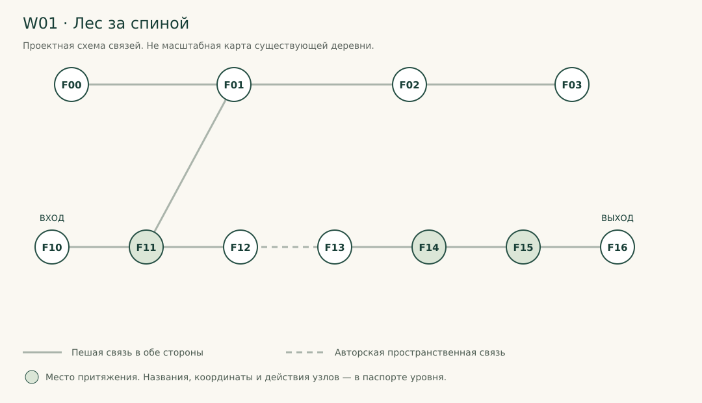
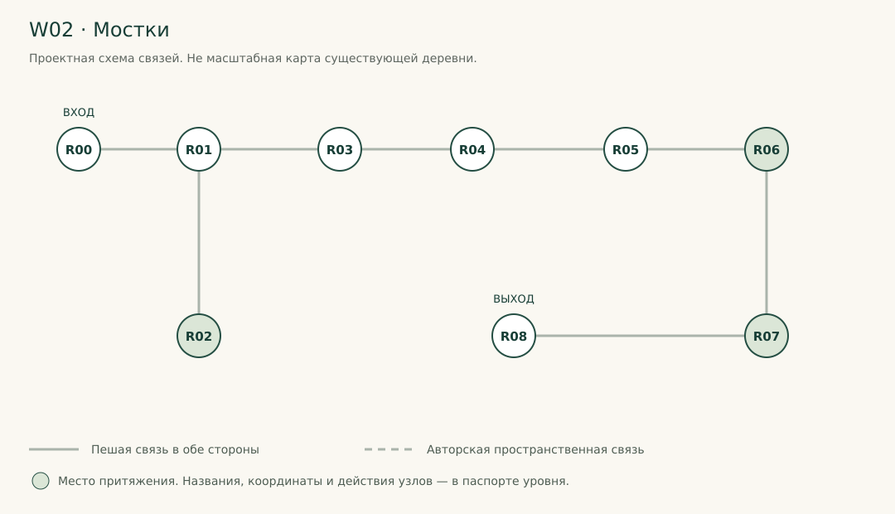
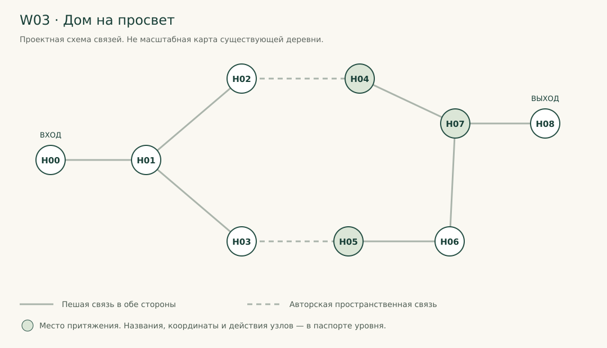
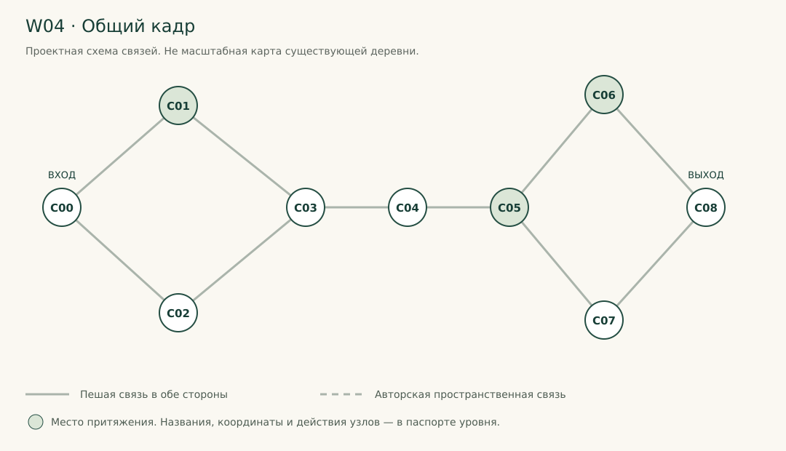
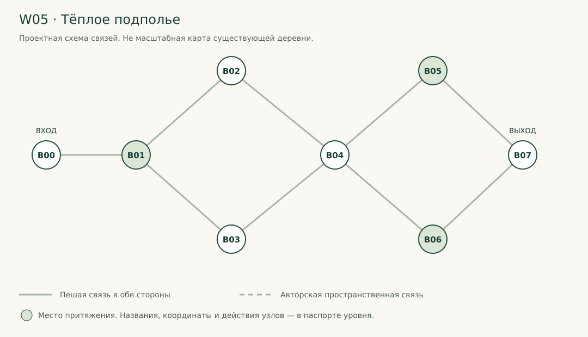
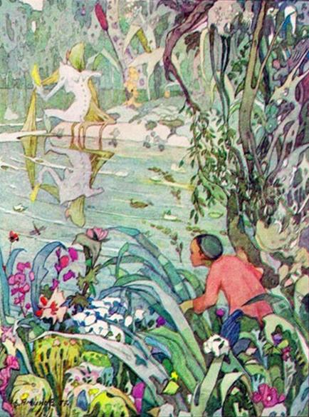
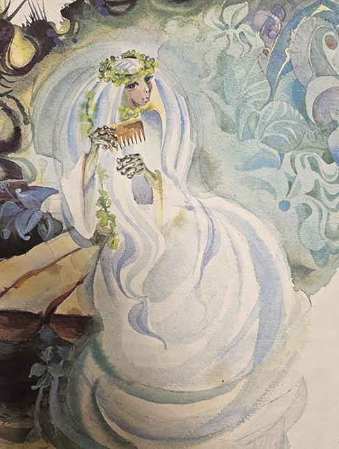
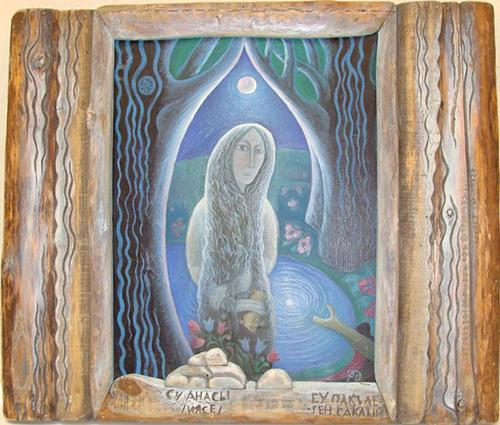
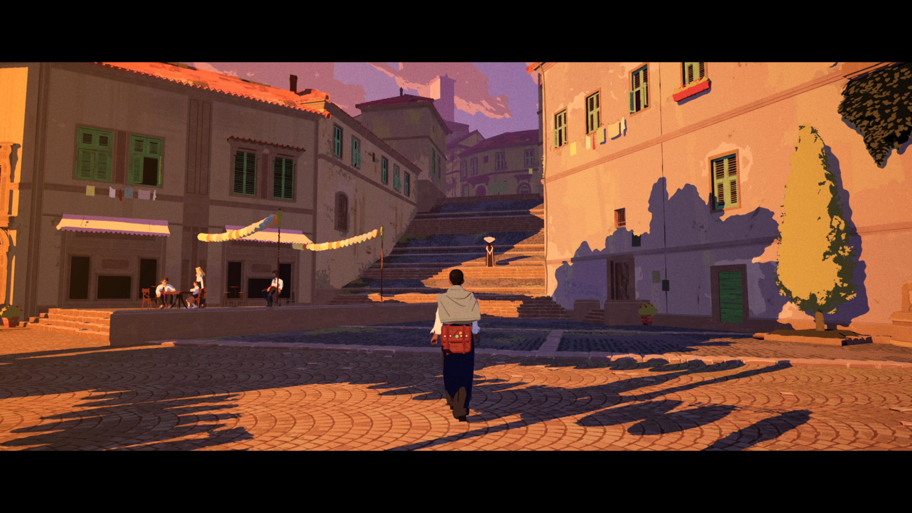

Главы сохраняют номера исходных файлов. Паспорта пяти миров расположены рядом с инженерной частью; реестры производства — после них.
УРМАН · За краем снимкаПокрытие прямых требований автора01. Мандат, границы изменений и новый канон02. Сценарная библия: «За краем снимка»03. Книга, фотографии и игровой цикл04. Художественный контракт — прекрасное и невозможное05. Рендер и производство ресурсов06. Архитектура и интеграция с текущим кодом07. Сохранения, загрузка, прерывания и восстановление08. Интеграция с деревней, существующими действиями и расследованием09. Звук, язык, удобство и доступностьW01. Лес за спинойW02. МосткиW03. Дом на просветW04. Общий кадрW05. Тёплое подполье10. Паспорта ассетов11. Реестр реализации: 100 конкретных задач Codex12. Приёмка: работающая игра, устойчивый стиль и честные доказательства13. Миграция всех 118 задач прежнего visual reset14. Источники, изображения и границы достоверности15. Рабочие диалоги, реплики и текстовые контракты16. Инструкция агенту: реализовать всю концепциюПроверка целостности пакетаРеференс 1. Файзрахман АминовРеференс 2. Владимир КарамышевРеференс 3. Ахсан ФатхутдиновРеференс 4. Ранее выбранное направлениеВерсия: PW-1.0 · 8 октября 2026.
Назначение: исполнительный пакет для Codex/ИИ-агента. Это спецификация работ, а не отчёт о выполненной реализации.
Проверенный GitHub-срез: rustemd02/URMAN@986980814d78d280070283519f9539f24e4539fb. Локальный незакоммиченный diff не проверялся.
Новый творческий мандат: автор разрешил менять фундаментальные концепции, сценарий, структуру кампании, размещение контента и визуальную систему, чтобы реализовать утверждённую идею.
Одна настоящая татарская деревня; семейный экземпляр Тукая с фотографиями; возможность шагнуть за край кадра; прекрасные и странные пространства, где хочется задержаться; существа существуют независимо от книги; возвращение всегда связывает увиденное с реальными людьми и местами.
Играбельная кампания «За краем снимка»: пролог внутри лесной фотографии, обычная зимняя жизнь Кара-Урмана, физически правдоподобная книга с вклейками, поиск и осмысление снимков, переходы в четыре основных авторских пространства и один дополнительный мир Бичуры. Дополнительный мир необязателен игроку, но обязателен к реализации. Шурале и Су анасы получают полноценные встречи, а не только силуэты. Между путешествиями продолжаются бытовые дела, разговоры, исследование деревни и работа на старом ПК.
Цель — не набор демо-комнат и не меню выбора уровней. Финальный маршрут проходит из обычного New Game до эпилога без debug-команд; все миры возвращаемы, сохраняемы и связаны последствиями с деревней. Первый законченный участок — этап интеграции, а не предел задания.
В фотомиры хочется войти и остаться. Их ведущая эмоция — притяжение, красота, любопытство и удивление, а не ожидание нападения. Странность проявляется в одном сильном пространственном законе каждого мира. Никаких счётчиков безумия, таймера пребывания, внезапного штрафа за созерцание или обязательных погонь. Красивое место не обязано потом разоблачаться как ловушка.
docs/01_AUTHORITY_AND_CANON_RU.md — что можно менять и что заменяет старые правила.docs/02_NARRATIVE_BIBLE_RU.md и levels/ — законченная сюжетная и пространственная конструкция.docs/03_BOOK_AND_PHOTOS_RU.md, docs/04_ART_DIRECTION_RU.md — механика и художественная цель.docs/05_RENDER_AND_ASSET_PIPELINE_RU.md–docs/09_AUDIO_LANGUAGE_ACCESSIBILITY_RU.md — инженерия, сохранения, деревня, звук.docs/10_ASSET_PASSPORTS_RU.md, docs/11_TASKS_RU.md, docs/12_QA_RU.md — производство и приёмка.docs/13_LEGACY_118_MIGRATION_RU.md — судьба каждой задачи прежнего visual-reset.docs/14_SOURCES_AND_REFERENCES_RU.md, docs/15_DIALOGUES_RU.md, docs/16_AGENT_DELIVERY_RU.md — источники, тексты, сдача.data/ — машинно-читаемые проектные реестры. Они НЕ объявлены совместимыми с текущим компилятором игры без адаптера. tooling/validate_spec.py проверяет целостность именно этого пакета, не качество игры.
Последнее прямое распоряжение автора → этот новый контракт в пределах его предмета → актуальные правила безопасного исполнения репозитория → явная таблица миграции → прежний visual reset → исторические аудиты.
Правила защиты пользовательских данных, секретов, чужого diff и станционных запусков не отменяются творческим мандатом. Старое требование «только аудит, код не менять» НЕ является действующим ограничением: AGENTS.md на проверенном срезе уже разрешает игровые проверки через станцию. Разрешение на фундаментальный redesign не означает разрешения чинить инфраструктуру через отключение защит.
В пакете различаются:
Все конкретные новые названия глав, порядок сцен, длительности и диалоги — PRODUCTION_DEFAULT. Codex может улучшить их, если сохраняет AUTHOR_FIXED, описывает причину, обновляет связанные данные и доводит замену до готовности. Не разрешается бесконечно переписывать канон вместо реализации.
Новый маршрут проектируется примерно на 150–240 минут первого внимательного прохождения, включая деревню, но без обязательного дополнительного мира и праздного ожидания. Это оценка дизайна, не замер и не минимальная квота. Нет требования растянуть короткое содержательное действие до нужного хронометража. Прежние пять актов/6–8 часов не являются автоматическим обязательством построить ещё одну полную игру в этом задании: их структура пересматривается явно.
Нельзя обещать, что перечень задач гарантирует художественный результат. Техническое выполнение, художественная самооценка агента и реальная оценка автора учитываются отдельно. Отсутствие автора не останавливает остальную реализацию, но не позволяет подделывать его одобрение.
Прочитаны приложенные аудиты и прежний visual-reset, выполнены адресные чтения текущего GitHub-кода и канона. Подготовлены новые спецификации и проектные реестры. Код игры, ассеты, сохранения и ветки репозитория в этой сессии не изменялись; Godot, Blender и игровые бенчмарки не запускались. Внешние художественные источники перечислены с честным статусом доступности; чужие изображения не объявлены разрешёнными игровыми ассетами.
URMAN_PHOTOWORLDS_FULL_SPEC_RU.pdf — полная версия с навигацией, всеми карточками и референсами.URMAN_PHOTOWORLDS_FULL_SPEC_RU.html — та же версия для браузера; открывать из распакованного пакета.URMAN_PHOTOWORLDS_FULL_SPEC_RU.md — объединённый исходный текст; профильные файлы в docs/ и levels/ удобнее для точечных изменений.diagrams/ — пять проектных схем, не кадры реализации.VALIDATION_REPORT_RU.md — результат воспроизводимой проверки пакета; не игровая приёмка.Для запуска Codex передать весь архив, а не один PDF: реестры, старый visual reset и изображения нужны вместе. Начальный текст поручения находится в документе 16.
Краткая формулировка ниже передаёт смысл утверждённой концепции, не выдаётся за дословную цитату. Конкретные пять миров, имена глав, финальный лист и новый хронометраж — выбранные проектные решения; их статус отмечен в основном каноне.
| ID | Требование | Исполняющие задачи |
|---|---|---|
| A01 | Ходить внутри изображения и выходить за границу кадра | PW-007, PW-022, PW-036, PW-045, PW-050, PW-055, PW-060, PW-065, PW-089 |
| A02 | Семейная книга Тукая, находки и физические вклейки | PW-013, PW-014, PW-015, PW-016, PW-017, PW-040, PW-071 |
| A03 | Другой красивый и культурно конкретный стиль внутри | PW-010, PW-031, PW-032, PW-034, PW-045, PW-050, PW-055, PW-060, PW-065, PW-099 |
| A04 | Полноценные встречи с фольклором | PW-047, PW-052, PW-066, PW-092 |
| A05 | Пролог в одном из фотомиров | PW-003, PW-029, PW-043, PW-049, PW-085 |
| A06 | Внешняя деревня преимущественно обычная и живая | PW-003, PW-044, PW-070, PW-079, PW-096 |
| A07 | Намёки и подтверждения реальности происходящего | PW-008, PW-073, PW-074, PW-076, PW-077, PW-078 |
| A08 | Завораживает; хочется задержаться несмотря на странность | PW-027, PW-028, PW-031, PW-048, PW-053, PW-058, PW-063, PW-068, PW-082, PW-099 |
| A09 | Разрешены фундаментальные изменения ранней альфы | PW-002, PW-003, PW-004, PW-010, PW-097 |
| A10 | Полное внедрение, не остановка после пилота | PW-011, PW-069, PW-078, PW-094, PW-095, PW-098, PW-100 |
A01. Игрок ходит по пространствам внутри изображений, а не только рассматривает оживающие картинки. A02. Центральный предмет — условная книга Тукая с находящимися по деревне фотокарточками; снимки помещаются внутрь. A03. Внутри — иной, более выразительный живописный язык, связанный с татарской художественной культурой. A04. Шурале, Су анасы и другие фольклорные существа получают место в этих пространствах. A05. Пролог происходит в одном из них. A06. Деревня сохраняет преимущественно обычную жизнь; мистика не должна постоянно захватывать весь быт. A07. Снаружи остаются признаки, что переживания внутри — не просто фантазия. A08. Миры должны необычно завораживать: в них хочется остаться несмотря на странность. A09. Разрешены фундаментальные изменения сценария и устройства игры на стадии ранней альфы. A10. Результат задания — полная реализация концепции с нужными механизмами и ассетами; не ограничение одним пилотом.
Не подменять A08 формулой «красиво первые тридцать секунд, затем обязательный хоррор». Не подменять A06 безопасным хабом с гарантированной невозможностью необычного.
Книга — семейный, не музейный экземпляр сборника Тукая, дополненный плотными листами и фотографическими уголками. Не авторский гримуар Тукая и не артефакт исламской практики. Для игрового предмета создаётся оригинальный макет обложки, а не копируется защищённое современное издание.
Кампания — «За краем снимка». Айдар приехал к бабаю Мансуру и әби Гөлсинә после долгого отсутствия. Он знает о смерти друга Марата; игра не делает из этого внезапный поворот. Әби предлагает закончить разбор снимков, которым занимался Марат. Простая просьба становится личным способом вернуть связь с местом и людьми. Не все найденные карточки связаны со смертью.
Игрок не восстанавливает душу Марата, не воскрешает его и не получает записи безошибочной истины. Новая арка завершает историю книги и недосказанных отношений, а не обязана закрыть все исторические загадки вселенной. Причина смерти Марата не используется как универсальный двигатель каждого уровня. Её старое объяснение «украл винтовку и пошёл воевать с Шурале» не переносится в новый маршрут как доказанный факт.
Основные пространства: W01 лес; W02 летние мостки; W03 дом/сад; W04 место общего кадра. W05 — дополнительное домашнее пространство Бичуры. Пролог использует участок W01, а не шестой самостоятельный уровень. Один маршрут и одна каноническая развязка; варианты реплик не требуют производства взаимоисключающих концовок.
Сценарий, последовательность открытий, объяснение пролога, функции старых улик, роль Марата и пакта, содержание поздних актов, маршруты между зданиями, игровые состояния и их UI. Можно реорганизовать большие C#-строители в модули, выделить отдельные сценовые корни, заменить плохие ассеты новыми Blender-моделями, расширить material families и изменить структуру книги.
Если пересмотр лучше решает цель, агент сам принимает решение, оставляет ADR с причиной и последствиями, меняет связанные сценарии, quest graph, сохранения, тесты и документацию. Нельзя оставить старый обязательный триггер на удалённом объекте.
В рамках этой задачи не нужен переход с Godot на Three.js, новый движок, VR или универсальная генерация 3D из любых фотографий. Авторизованное «можно фундаментально менять» не является требованием сносить всё ради самого сноса.
Кара-Урман; зима 2026 снаружи; Айдар 19–20 лет; Мансур и Гөлсинә; Алсу; нормальная работа дома, магазина, ФАПа, школы/ДК, сельсовета, ПК, адресов и улиц; локальный юмор; язык как средство понимания; существа не являются боевыми мобами. Физическое присутствие игрока, удобные взаимодействия, доступность и работающие сохранения не являются расходным материалом эксперимента.
Прежняя положительная художественная база сохраняется для обычного мира: материальный живописный 3D, правильные пропорции, выразительный цвет, отсутствие демонстративного low-poly, насыщенная зелёная ночь как один из профилей, умеренно реалистичные интерьеры. Не превращать деревню в серый фон, чтобы фотомиры выглядели лучше.
Мечеть и зират не становятся порталами, аренами угроз или механизмами «магической зарядки». Тимур остаётся человеком, а не экзорцистом-вендором. Фольклор, ислам, татарский бытовой уклад и авторская фантазия различаются явно.
| Прежняя установка | Решение PW-1.0 | Причина |
|---|---|---|
| Одна степень painterly во всей игре | Два регистра одной художественной семьи | Контраст мира и изображения имеет сюжетный смысл |
| Лес всегда должен пугать | Реальная кромка остаётся массивной; фотолес сначала притягивает | Прямое новое подтверждение A08 |
| Только намёки на существ в MVP | Полноценные встречи внутри, дозированные признаки снаружи | A04 и новая структура |
| Пилот и ожидание обязательного одобрения до всех остальных работ | Поэтапная разработка всей кампании; самооценка с доказательствами; авторская оценка отдельно | A09–A10 |
| Не менять географию/сценарий | Допустимы обоснованные изменения с миграцией | A09 |
| Финал обязан разрушить пакт и обречь деревню | Для этой арки — завершение книги и подтверждение общей реальности переживания | Трагическая катастрофа не требуется новой концепции |
| Марат пошёл стрелять в Шурале — безусловный факт | Исторический сценарный вариант, не истина нового маршрута | Не загонять красивое исследование обратно в «войну с монстрами» |
| Ночной обвал главного моста обязателен | Убрать как обязательный сюжетный замок этой арки; геометрию и проезд сохранить/перестроить по маршруту | Не создавать второе конкурирующее начало игры |
| Уже установленное: Шурале не единственный демон | Сохранить идею множества; встречаем одного персонажа, не объясняющего весь вид | Не превращать фольклор в одиночного босса |
| Тамара вне объёма прошлого запуска | Не удалять её уже существующий квест. Не делать обязательным и не расширять ради книги | Бытовой юмор полезен, но не критическая зависимость |
Историю 1552 года, архивные исследования, старый pact plot не стирать из репозитория. Убрать несовместимые элементы из обязательного исполнения новой кампании, внести карту «сохранено / переписано / архивировано». Не показывать игроку взаимоисключающие документы как будто это факт одной версии.
Перед началом: прочитать актуальный AGENTS, зафиксировать SHA/dirty diff, перечислить активные работы, выбрать непересекающиеся изменения. Не использовать reset/clean/stash/force checkout как стандартный способ подготовить рабочее место. Не менять правила доступа, станционные guards, приватные ключи или аккаунты ради арт-задачи.
AGENTS.md проверенного среза уже снимает общую паузу игровых проверок и указывает станционный протокол. Обычные необходимые запуски — через действующий eng/remote-check.py и защищённые тестовые данные. Вне этой сессии станция может измениться; прочитать инструкции повторно. Новое ТЗ не даёт самостоятельного разрешения на общедоступную публикацию, публичную загрузку ассетов или новые платные сервисы. Commit/push — по актуальному разрешению конкретного запуска, не по исторической цитате из старой задачи.
ADR обязан содержать: старое решение; конкретную проблему; новое решение; сохраняемые A01–A10; изменённые узлы/сцены/сейвы; тесты; способ отката. Простая замена цвета материала ADR не требует. Изменение причинности книги, роли Марата, финала или числа обязательных миров требует.
Можно менять реализацию, нельзя тихо убрать трудную цель. Нет генератора изображений — агент использует доступный качественный художественный пайплайн и выделяет точный ресурсный blocker; не завершает задачу серыми кубами. Нет доступа к GPU — код и подготовка продолжаются, runtime review остаётся NOT_RUN. Нет носителя татарского — не вставлять выдуманный перевод, использовать русскую рабочую реплику и отдельный языковой blocker.
Отсутствие человеческого арт-одобрения не блокирует производство остальных сцен. Но состояние FINAL_ACCEPTED возможно только после реального одобрения. Итог агента может быть IMPLEMENTED_AND_SELF_REVIEWED / AUTHOR_REVIEW_PENDING — это честный завершённый объём исполнения, не выдуманное принятие.
Ты возвращаешься в Кара-Урман и разбираешь семейную книгу. На снимке всегда есть больше, чем ты сначала заметил. Внутри можно обойти композицию, увидеть, кто держал камеру, пройти за деревья и встретить того, кто не обязан принадлежать человеческой памяти. Вернувшись, ты не становишься магом: тебе всё ещё нужно поговорить с әби, проверить подпись и расчистить нормальную калитку.
Красота фотомира сама по себе ценна. Ни один уровень не обязан закончиться разоблачением «всё прекрасное было приманкой». Игрок учится внимательности, а не подозрению к любой приятной вещи.
Книга не создаёт существ и не хранит автономные параллельные вселенные. Фотография удерживает связь между человеком, местом и моментом; книга позволяет продолжить эту связь пространственно. Проходимое окружение за пределами снимка не является точной реконструкцией объективного прошлого. Там смешиваются материальное место, следы памяти и собственное присутствие иного.
Существа действуют в настоящем встречи. Это не записанные анимации из прошлого. Человеческие фигуры внутри, напротив, преимущественно следы и неполные эпизоды: их нельзя допрашивать как живых свидетелей. Видимый там Марат — не его возвращение, не душа для спасения и не доказательство конкретной версии смерти.
Айдар обладает доступом благодаря участию в семейной истории, вниманию и физическому контакту с конкретной книгой, а не крови избранного рода. Другие люди тоже могут испытывать подобное. Не объяснять механизм как лабораторную технологию, но соблюдать описанные ограничения во всех сценах.
Редкая проницаемость между регистрами реальна. Последнее событие видят Айдар и Алсу без открытой книги. Полное устройство явления остаётся неизвестным им обоим. Внутреннее правило для разработчика: это не коллективная галлюцинация и не трюк Алсу. Этот факт не даёт разрешения на случайные монстры в деревне.
Марат до смерти разбирал семейные и деревенские фотографии, готовил подписи и пытался связать старые виды с реальными местами. Он не успел закончить. Книга принадлежит семье Айдара; әби дала Марату поработать с ней. После его смерти она вернулась домой вместе с частью снимков. Остальные находятся у законных владельцев.
Айдар знает о смерти заранее. Его первоначальная мотивация — погостить и помочь закончить простое дело. Пропущенные им годы проявляются через незнание людей, изменений дворов и произношения знакомых слов. Постепенно возникает личный вопрос: что Марат пытался увидеть и что Айдар сам всё это время не замечал.
Арка книги заканчивается не раскрытием убийства, а завершением незаконченного разговора с местом и живыми близкими. Часть прежней интриги Марата может остаться для дальнейшей кампании, однако в этом маршруте не должно быть обязательного задания «узнай убийцу», которое финал бросит без ответа. В журнале явно различать «разобрать книгу» и незакрытые биографические вопросы.
| Этап | Содержание и действие | Изменение понимания |
|---|---|---|
| B00 | Пролог W01: лес, тропа, действие с веткой, источник звука за композицией | Мир красив и не помещается в привычные расстояния |
| B01 | Нива → остановка/проезд → дом; живое знакомство, чай | Деревня не декорация хоррора |
| B02 | Получение книги, первая вклейка, узнавание лесного кадра | Пролог связан с физическим предметом |
| B03a | W02 «Мостки», доступ после обычного разговора и поиска берега | За рамкой снимка продолжается место; вода имеет своё присутствие |
| B03b | W01 «Лес за спиной», доступ после школьной подписи | За кадром может быть самостоятельный собеседник |
| B04 | Верификация зацепок снаружи, разговоры, открытие домашней фотографии | Увиденное не равно доказанному |
| B05 | W03 «Дом на просвет» | В семейной памяти важен и тот, кто постоянно снимает других |
| B06 | ПК, разрешённая копия снимка Марата, уточнение авторства | Чужая запись не является последним словом |
| B07 | W04 «Общий кадр» | Книга — продолжающееся участие, а не завершённый бестиарий |
| B08 | Возвращение; Алсу видит невозможный летний лист; чай и новый снимок | Переживание имеет реальную сторону, жизнь продолжается |
| BO1 | W05 «Тёплое подполье», необязательная ветка | У дома тоже может быть чужой взгляд; это не обслуживающий домовой |
B03a и B03b разрешено пройти в любом порядке. Контент реплик обязан иметь оба варианта. Не ставить невидимый запрет на лес только потому, что агенту проще линейный граф. W03 открывается после любого первого завершённого основного мира и разговора дома. W04 требует W01, W02, W03, двух внешних подтверждений и собственного действия с подписью на ПК. W05 не требуется для финала.
Скрытая от игрока исходная ситуация: бабай везёт семейную книгу в Ниве; в ней уже закреплён старый лесной снимок P-FOREST. Машина проходит реальную лесную точку связи. Айдар касается открытого разворота. Краткий непроизвольный вход — специально заданное событие пролога, а не общее правило «любой NPC с любой картинкой открывает портал». Позже короткая бытовая деталь книги на переднем сиденье связывает сцены. Не использовать надпись «это был сон».
Игрок начинает внутри W01, не видя машину. За 4–6 минут целенаправленного движения он проходит около 160–220 м, получает управление сразу, переступает корень, замечает бытовую ленту на ветви и отводит ветку рукой. Действие сохраняется как prologue_branch_moved, а не выдаёт предмет в инвентарь. Направление задаёт светлая поляна и тихий знакомый звук, а не маркер.
Нет нападения, крика или полосы здоровья. Последний вид — место, куда исходная фотография не смотрит. Бабай зовёт Айдара из обычной жизни. Короткий спокойный переход в Ниву: взгляд остаётся в согласованном направлении, сначала слышен двигатель, затем видна зимняя дорога. Отдельный длинный пролёт города и повторный новый тизер убрать.
В основной W01 игрок появляется у продолжения уже пройденного участка. Отведённая ветка лежит так, как оставлена. Узнавание — награда; повтор обязательных пяти минут — запрещён. После пропуска пролога краткая запись и изменённая ветка дают достаточный контекст, но бонусные наблюдения автоматически не выдаются.
После получения книги необходимо не менее одной содержательной нормальной сцены между первыми двумя входами и между последним входом и эпилогом: разговор, помощь во дворе, поиск сведений на ПК. Это не таймер и не требование пройти лишний круг. Игрок вправе идти прямо к доступному месту.
Әби не сразу знает, что Айдар пережил. Мансур не хранитель тайного культа и не автоматический лжец. Алсу помогает сопоставить места, но не объясняет каждую странность заранее. Жители имеют разные границы знания. Внутри каждого разговора должен быть хотя бы один обычный интерес человека, не обслуживающий главную интригу.
Магазин, радио, коты, транспорт, ФАП, школьные дела не превращаются в набор прикрытий. Квест Тамары, если он доступен в текущем билде, остаётся бытовой комедией без скрытого Шурале за забором. Не делать все беседы зловещими паузами.
Вход из зимнего берега в насыщенное, тихое лето. Исходный снимок показывает мостки и людей, но не старый подход с другой стороны. Отражение удерживает продолжение настила, которого сверху не видно. Игрок находит путь по физически читаемым опорам, обходит кадр и встречает Су анасы. Он не обязан красть гребень или повторять сказку Тукая. Действие — открыть заслон из камыша/повернуть свою дощечку-навигационный ориентир, чтобы обнаружить безопасный обход. За ним видно место прежнего спуска. После возвращения игрок проверяет старые сваи в деревне и открывает удобный обычный береговой проход.
Продолжение пролога. Группа на снимке смотрела не на камеру; источник звука и положение фотографа находятся за начальным полем зрения. Один и тот же рисунок трёх стволов показывает разные расстояния, пока игрок не выйдет за рамку исходной композиции. Лес не перестраивается каждую секунду: перестановки только в закрытых соединениях. Шурале сидит на огромном корне, занят своим делом, и сначала не стремится угрожать. Задача — найти точку фотографа и выслушать несовпадение его взгляда с человеческой подписью. Никакой викторины по фольклору и обязательного обмана именем «Былтыр».
Человеческий эпизод без существа. Дом и двор кажутся больше реальных, но предметы сохраняют вес. Две дверные рамы ведут к одному двору в разных композициях; невидимые стены и случайная телепортация не нужны. Игрок выполняет три небольших домашних действия, открывающих разные точки зрения, и обнаруживает место человека за камерой. Вывод об авторстве проверяется настоящей подписью снаружи. Не обещать, что в доме можно поговорить с умершими.
Финальный снимок Марата соединяет знакомые отношения: подход к воде, лесной просвет, вид на дом. Это четвёртая самостоятельная композиция, а не бесконечный мир из всех трёх сцен. Одно новое правило: отдельные обрамления скрывают общий горизонт, но при обходе раскрывают непрерывность места. Игрок снимает заслон/отводит оставленную ткань, освобождая обзор, и возвращает на страницу подпись с названным автором. Это не ритуальное запечатывание монстров. Шурале может коротко отозваться знакомым мотивом, но полноценный повторный длинный разговор не обязателен. Выход не уничтожает мир: его можно посетить снова.
Бичура не смешивается с существом бани. Пространство относится к жилому дому и вещам, а не к печному экзорцизму. Игрок замечает чужой порядок предметов, может его понять и найти оставленную людьми вещь. Действия не являются обязательным народным обрядом; это авторская игровая трактовка. Основная линия не требует этого эпизода.
Подробная геометрия, события, коллизии и критерии каждого мира — в levels/.
R0 — пролог: переживание без объяснения. R1 — материальное совпадение: узнанный кадр, отведённая ветка в повторном входе. R2 — новое проверяемое знание: старые сваи/место фотографа подтверждаются независимыми вещами. R3 — отдельная странная деталь: влажный угол бумаги после W02; можно объяснить снегом с рукавов. Срабатывает один раз. R4 — реакция другого человека: әби узнаёт не общий образ леса, а конкретное описанное расположение корня. Она не читает лекцию о порталах. R5 — общий внешний факт в финале: на голой зимней ветке раскрывается один летний лист; его замечает Алсу при закрытой книге. Лист падает на снег, сохраняется как неинвентарный мировой след. Никакой фермы листьев, боевого эффекта или нового добываемого ресурса.
R5 — выбранное авторское фантастическое событие, не «научное доказательство» внутри диалога. После него не нужно объяснять происхождение книги. Оно подтверждает общую реальность, но не все интерпретации Айдара.
Каждый след имеет event ID и максимум одно первое срабатывание на кампанию. В debug можно повторять из изолированной фикстуры. Повторный вход в W02 не производит ещё один мокрый край, тайный предмет или реплику уже пережитого удивления.
После W04 возврат происходит к реальному береговому anchor. Алсу заранее обозначила обычную причину ждать неподалёку: вместе вернуться домой. Она не телепортируется из другого квеста. После события с листом звучат короткие реплики: «Там лист». — «Вижу». Без обязательного «теперь всё понятно».
Дома — чай, разговор о подписи под фотографией, новый снимок S-NOW. На нём остаются обычные люди, не собрание всех духов. Автор нового кадра — Айдар, который сам теперь находится за камерой. Книга остаётся у него, и места внутри остаются доступны. Эпилог не отправляет в меню без возможности продолжить.
Полное раскрытие причин смерти Марата, исторических пактов и 1552 года не заявлять завершённым. Они не становятся обязательными незакрытыми quest objectives этого маршрута. Точка завершения арки — законченная книга, изменившиеся отношения и одно совместное невозможное событие.
Нельзя заменить четыре мира четырьмя сценами диалога в одном лесу; превратить книгу в меню телепорта сразу после New Game; выдать все карточки автоматически; загнать события в сон, симуляцию или развлечение школьной выставки; сделать Марата собеседником-оракулом; превратить каждую фотографию в преступление; сделать религию источником проклятия; заменить тёплый финал апокалипсисом только ради старого pact plot.
Все тексты книги и реплики должны совпадать с реестром знаний. Персонаж не может назвать фотографа, которого игрок ещё не установил, если это не сознательно отдельный источник знания.
Книга в закрытом виде приблизительно 220×285×38 мм; открытый разворот около 445×285 мм. Тканевый переплёт приглушённого бордово-коричневого цвета, потёртые углы, небольшая вмятина на верхней крышке, утолщение корешка из-за вклеенных листов. Не оккультный замок, не светящиеся руны, не геройский золотой герб. Надписи «Габдулла Тукай» и название сборника набираются текстом после языковой проверки, не генерируются в картинке.
Разворот содержит литературную страницу и семейную вклейку. Правый/левый порядок может чередоваться, но функция размещения не меняется. Между разделами видны пользовательские закладки. Личные записи Айдара отделены от печатного текста и старых пометок разным оформлением и подписью источника, а не только цветом.
В мире — 3D-книга с толщиной страниц, петлёй перелистывания и контактом рук/стола. Для чтения — 2D-представление тех же данных с масштабированием; это не второй журнал с собственной логикой. Модель, печатная страница, карточка и увеличенное изображение используют одни и те же PhotoId/PageId.
Не вырезать из действующего журнала карту, адреса, словарь, контакты и личные записи. Сделать их разделами/вложениями единого бумажного интерфейса. Семейная книга и блокнот Айдара могут визуально различаться внутри этого интерфейса, но прогресс и навигация имеют одного владельца.
| ID | Тип | Где получается | Зачем |
|---|---|---|---|
| P-WATER | Основной вход | Свободный семейный отпечаток в доме, әби разрешает взять | W02, летние мостки |
| P-FOREST | Основной вход | Уже закреплён в книге; узнаётся дома после пролога | W01; контекст дополнен школьным снимком |
| P-HOUSE | Основной вход | Әби передаёт после возвращения и разговора | W03; авторство домашних кадров |
| P-COMMON | Основной вход | Разрешённая печать файла Марата на старом ПК | W04, общий горизонт |
| P-CELLAR | Дополнительный вход | Семейная коробка бытовых снимков, с разрешения бабая | W05, домашняя ветка |
| S-SCHOOL | Контекст | Школьный альбом: выдаваемая копия, оригинал остаётся | Подпись к лесному месту |
| S-BANK | Подтверждение | Копия старого плана/снимка берегового подхода в сельсовете | Проверка местоположения, не портал |
| S-PHOTOGRAPHER | Подтверждение | Оборот семейного контактного отпечатка | Кто снимал домашнюю серию |
| S-GARDEN | Личная память | Соседка добровольно даёт семейный дубль | Необязательный разговор и деталь сада |
| S-PRINT | Контекст | Контактный лист на ПК | Порядок кадров P-COMMON и подпись |
| S-MARAT | Личная память | Разрешённая копия из оставленной семейной папки | Марат в обычной жизни, не только смерть |
| S-HAND | Контекст | Бытовой снимок рабочего стола/рук | Дополнительная подсказка W05 |
| S-NOW | Эпилог | Новая фотография, сделанная Айдаром в финале | Завершение и продолжение книги |
Это 5 изображений-входов и 8 поддерживающих изображений. S-NOW не коллекционный секрет. Игроку не показывается обязательный чек-лист «13/13»; в книге видны осмысленные незаполненные места. Основной финал требует только четыре основных входа и заданные внешние подтверждения. Не требовать S-GARDEN/S-MARAT/S-HAND/W05 ради истинной концовки.
Оригиналы общественных/чужих архивов не выдирать и не мазать клеем. В механике «вклеить» используются семейные разрешённые отпечатки, дубли и разрешённые новые распечатки. Цена бумаги/принтера не становится гриндом или магазинным softlock.
PhotoState не хранится одним номером enum, поскольку контекст может быть узнан раньше получения. Состояние состоит из отдельных полей: acquired, mounted, context_facts, anchor_seen, entered, chapter_completed, outside_verified, seen_front, seen_back. Прогресс выводится из фактов, не из порядка кликов.
Получение:
Вклейка:
«Вклеить» — пользовательское слово для помещения снимка в семейный разворот. Оригинал Тукая не оскверняется и не обрастает магическими кнопками на стихах.
Необходимы приобретённый носитель, его размещение на правильном развороте, смысловой контекст и посещённая физическая точка связи. Не требуется знать точный год, имя всех людей или перевод всего текста.
Игрок в пределах 6 м от авторского anchor, на безопасной опоре, пешком, вне диалога/катсцены/переноса крупного предмета/движущегося транспорта. Для удерживаемого бытового предмета предложить сначала поставить его; нельзя удалить его молча. Для точного исторического кадрирования достаточно направления ±40°; связь фиксируется по узнаваемому ориентиру, а не по попаданию в пиксель.
Контекст понимается по реплике/наблюдению. Если игрок уже стоит у правильного места и сам исследовал соответствующую деталь, дать альтернативный способ узнать контекст без обязательного разговора со строго одним NPC. Специфические знания об авторстве всё равно нуждаются в источнике.
Когда условия выполнены, в развороте появляется едва заметное движение пространства и действие «Войти». Оно не активируется само по себе, пока игрок просто читает. Отказ ничего не тратит. При нехватке условия текст конкретен: «Не знаю, с какого берега снято», «Нужно сначала поставить ведро», «Сейчас мы едем». Не писать «недостаточно энергии».
Особый вход пролога задаётся отдельным narrative event. Он не проверяет стандартную UI-процедуру, но не выдаёт её право произвольным неподписанным фотографиям.
Предзагрузка начинается при открытии известного разворота у готового anchor. После подтверждения:
Не обещать бесшовность любой ценой. Качественный переход на 1,5–3 с предпочтительнее зависания. Если загрузка длится дольше 5 с, показать честную подпись загрузки и возможность отменить до commit. Progress не имитировать случайным числом. При ошибке безопасно вернуть прежнюю сцену и управление.
Первая композиция соответствует снимку по трём ориентирам; далее игрок свободно отворачивается. Нельзя маскировать плоскую декорацию отсутствием свободного обзора.
В каждом мире есть видимый исходный/продолженный выход, но игрок также может выбрать «Вернуться» из книги. Нет обязательного бега через весь уровень. Действие доступно после первоначального восстановления управления; только короткая атомарная постановка до 2 с может временно отложить его. При удержании/нажатии один раз появляется подтверждение: «Вернуться в деревню? Найденное сохранится».
Незавершённый уровень не сбрасывает наблюдения, открытые проходы и сделанные безопасные действия. При возвращении в него игрок появляется на последнем устойчивом узле; начальный кадр можно отдельно посмотреть без выдачи наград.
После первого завершения мира разрешить повторный вход из домашнего стола, где эта связь уже восстановлена; это удобство объясняется знакомым разворотом. Первое открытие остальных миров по-прежнему требует их реального места. Быстрый повтор не служит телепортом между произвольными точками деревни: выход возвращает на тот же стол или anchor, откуда был конкретный вход.
При возврате восстанавливаются время сцены, положенные предметы, активное бытовое задание, состояние дверей, адресная карта и настройки. В деревне не должно происходить скрытого провала квеста от того, что игрок час сидел у воды.
Обычный world clock деревни приостановлен на время визита; при возвращении продолжается с прежнего значения. Сюжетные изменения времени выполняются только обозначенными сценами. Транспорт/NPC не симулируются бесконечно в скрытом мире. Игровая статистика может считать активное исследование отдельно от чтения и паузы.
В каждом основном мире три места, где можно остановиться и сесть/прислониться. Управление взглядом сохраняется. Нет обязательного таймера «сиди 60 секунд». Редкие необязательные тихие события повторяются с непредсказуемой фазой, но ключевые открытия не зависят от случайного ожидания.
У каждой записи в книге есть происхождение: experienced_inside, told_by_person, seen_in_document, observed_outside, player_interpretation. Запись из W02 «я видел старые сваи» не автоматически подтверждает историческую дату их установки. Переход к corroborated происходит только при отдельном внешнем действии.
Завершение мира даёт конкретный повод выйти в деревню. W02 → проверить старый спуск; W01 → исправить подпись и поговорить с әби; W03 → установить фотографа; W04 → договорить с Алсу и завершить книгу. W05 → найти обычную вещь под полкой и иначе посмотреть на хозяйский порядок. Ни одна награда не является только следующей магической карточкой.
Внутримировые предметы по умолчанию не выносятся. Отдельный финальный лист — единственное прописанное внешнее событие, а не перенос инвентаря и не предмет для продажи. Система должна явно отвергать экспорт неразрешённых ID.
Уровень 0 — композиция, звук и понятный предметный след. Уровень 1 — запрос игрока в книге: уточнить, что он ищет. Уровень 2 — показать связь двух уже найденных наблюдений. Уровень 3 — по повторному запросу дать прямое направление к доступному действию, не меняя прогресс.
Не запускать подсказку автоматически каждые 20 секунд; не считать созерцание застреванием. Для игрока с отключённой пространственной аудиоподачей ключевой звук имеет визуальный/текстовый эквивалент. Никаких загадок только на цвете, слухе, мелком почерке или ранее известном татарском.
Основной мир: Chromatic Painterly Material 3D — материальный живописный 3D со смелым авторским цветом.
Фотомиры: Luminous Tatar Painted Space — светящееся живописное пространство татарской сказочной графики.
Слово «светящееся» означает организованный цвет и свет, а не emissive на каждом дереве. Фотомир: узнаваемая материальная опора → выразительное изменение формы → невозможная пространственная связь → дальний живописный план. Не «любая геометрия плюс фильтр масляной краски».
Общее родство регистров: одни предметные пропорции переднего плана, родственные пигментные цвета, одинаковая культура конструктивных деталей, схожая тактильность книги и дерева. Различие: масштаб, ритм и глубина дальних масс, степень условности света, один неестественный закон места.
Файзрахман Аминов — главный ориентир для богатой цветовой организации, орнаментального ритма природных форм и связи сказочного пространства с конкретным бытом. Утверждение о связи его серий с «Шурале» и «Су анасы» подтверждено музейным пресс-материалом [ART01]. Наш способ переводить это в 3D — собственное проектное решение, не «метод Аминова».
Ахсан Фатхутдинов — дополнительный ориентир для взаимодействия резного обрамления и живописного поля; его авторские духи не подменяют весь фольклор. Конкретный пример и сведения доступны в исследовании иконографии [ART02]. Владимир Карамышев — дополнительная линия для текучего силуэта водного персонажа [ART02]. Никакое современное изображение целиком не переносится на mesh или UI без установленного права.
Моне/твит — референс ощущения присутствия внутри изображения, не национального предметного языка и не проверенный технический рецепт. Актуальная работа самого демо в этой сессии не подтверждена. Реальная деревня не становится «менее татарской» по сравнению с фотомирами.
В 14_SOURCES_AND_REFERENCES_RU.md каждому ориентиру назначено: что брать, что не брать, consumer, статус изображения. Три новые репродукции включены локально через проверенный экспорт Google Docs; также даны прямые источники. Их не подменяли похожими изображениями. Файлы предназначены для изучения, не являются готовыми игровыми текстурами.
Все HEX — исходные swatches в sRGB для сравнения и подбора. Они не являются точными значениями shader linear space и не гарантируют результат после tonemapping. Агент фиксирует итоговые engine-параметры рядом с реальными кадрами.
| Регистр | Основа | Светлая масса | Глубина | Малый акцент |
|---|---|---|---|---|
| Деревня: морозный день | #7F9DB4 |
#E5DFD4 |
#394C61 |
#B47956 |
| Деревня: зелёная ночь | #254A45 |
#AEC3AD |
#182B38 |
#D2995D |
| W01: лес | #2F625D |
#B9C7A0 |
#413A59 |
#C89757 |
| W02: мостки | #78A998 |
#DCE3B8 |
#314C7A |
#B97550 |
| W03: дом | #C3B899 |
#F0DFC0 |
#655270 |
#698DAB |
| W04: общий кадр | #6B747C |
#DAB3A2 |
#343D5D |
#82A890 |
| W05: подполье | #987B58 |
#D4BD88 |
#343B43 |
#718D8D |
W02 не заливать лазурным «курортным» цветом; водная глубина и влажная доска остаются отдельными материалами. W03 не превращать в обязательный закатный интерьер: тепло исходит от конкретных поверхностей и света. W01 не красный, не кислотный и не бесцветно-болотный. W04 не тот же W01 с изменённым LUT.
В одном кадре рекомендуются две доминирующие цветовые семьи и один малый акцент. Это рабочая дисциплина, не машинная квота процентов. Нельзя выделять каждую интерактивную вещь золотым свечением.
Передний план до 8–12 м: доска имеет толщину, корень имеет объём, обивка соответствует форме. Средний план 12–50 м: смелее искривление стволов, смена ритма, непривычные просветы. Дальний план 50–180 м: допускается плоская живописная масса, если туда нельзя дойти и она не выдаётся за близкий объём.
Первый кадр каждого входа имеет три совпадающих с фотографией ориентира. При шаге вбок на 3–5 м проявляется параллакс и становится понятным продолжение за обрезом. Не заставлять всё пространство идеально соответствовать единственной плоской иллюстрации.
Сюрреализм реализуется через крупную постановку: W01 — непохожесть видимой глубины и длины обхода. W02 — отражение сообщает пространственную связь, которую скрывает камыш. W03 — две рамы открывают один двор с несовместимых по обычной географии сторон. W04 — частные рамы скрывают общий горизонт. W05 — порядок и масштаб бытовых групп раскрывают чужое пользование домом.
Не добавлять к одному миру ещё гравитацию, бегущие стены, летающие острова и временную петлю. Один сильный закон должен быть освоен действием.
Стволы не собирать видимыми одинаковыми цилиндрами. Минимум шесть близких силуэтов для основной лесной семьи и три специально поставленных hero-дерева. Главный корень Шурале — самостоятельная модель, не растянутая ветка. Листовые/дальние карточки разрешены, но рядом с игроком контур должен выдерживать обход.
Доски: реальная толщина 28–50 мм для мостков, выборочные сколы, не одинаково обломанные торцы. Наличники: конструктивная глубина, следы старой краски, не универсальный «татарский узор» на всех домах. Двери фотодома имеют реальные косяки, пороги и пространство за ними. Бумага не картон толщиной 2 см.
Материалная семья начинается с large albedo grouping, потом medium brush direction, затем ограниченного normal/roughness. Фактура соответствует предмету: древесные мазки вдоль волокон, ткань по UV, рисунок бумаги остаётся на странице, а не приклеивается к экрану. Кора меняет направление на развилке; рубашка при движении не проходит сквозь неподвижное мировое зерно.
Стартовые roughness для калибровки: сухое дерево 0,68–0,88; ткань/бумага 0,78–0,95; влажная доска 0,42–0,68; окрашенный металл 0,42–0,70. Вода — отдельный shader с контролируемым бликом, а не зеркальный чёрный пластик. Значения корректируются по кадру, а не применяются как рецепт без проверки.
Основная живописность — в моделях, authored color masses, UV-текстурах, vertex colors и световом ответе. Общий «paint filter» не является обязательным. Если добавляется мягкая цветовая группировка, она не размывает текст, пальцы, кромку мостков и навигационные ориентиры.
Запрещено:
Один владелец активного светового профиля на основном viewport. Свет должен объяснять форму, а не уничтожать её. В фотомире цвет может быть нереалистичным, но на предметах остаются контакт и объём.
W01: светлые верхние просветы, холодные большие стволы, редкие тёплые корневые акценты; fog не скрывает первые 20 м. W02: широкое мягкое небо, глубокая водная полоса, небольшой тёплый контакт у сухих досок. W03: окно/двор/локальное тепло с отдельными источниками. W04: большой тихий горизонт, чёткий ближний силуэт. W05: рассеянный свет через щели без лучей «преисподней».
Частицы: редкие, разного масштаба, в пространстве. Нельзя оправдывать пустоту кадра тысячами светящихся пылинок. Движения травы/ткани медленные, с разными фазами, без синхронного дыхания всей сцены. Снег остаётся снаружи; частицы зимы не протекают в летний мир через общий emitter.
Люди снаружи соответствуют мягкому материальному стилю предыдущего контракта. Внутри человеческие следы могут быть менее детализированы, но не выглядят дешёвыми mannequin assets. Возраст и пропорции детей моделируются отдельно; взрослого NPC нельзя просто уменьшить до 60%.
Шурале: вытянутый, древесно-органичный, с длинными пальцами и выразительным профилем; конкретный силуэт оригинальный. Нет стандартной маски оленя, набора черепов, рогатого демона и monster teeth kit. Его жесты могут быть смешными и странными без детского mascot-вида. Лес и персонаж роднятся ритмом форм, но он не буквально составлен из ближайших веток.
Су анасы: самостоятельная фигура воды с длинным текучим силуэтом; исходный образ не сводить к русалке с хвостом. Дизайн не эротизирован; закрытая, складчатая/водорослевая масса одежды в нашей интерпретации удерживает возрастной тон. Гребень — характерный предмет, но не обязательный украденный ключ. Спокойствие не означает отсутствие собственного желания.
Бичура: небольшой персонаж, чья моторика связана с вещами и углами дома. Не домовёнок из узнаваемого мультфильма. Отдельная карточка указывает, какие признаки имеют источник, а что придумано для этой игры.
F0 — совпадение с найденным изображением. F1 — шаг вбок 4 м, доказывающий объём. F2 — предмет крупно: толщина/UV/контакт. F3 — пространство после раскрытия основного закона. F4 — существо или человеческая композиция на реальной дистанции взаимодействия. F5 — место, где хочется задержаться, без quest marker и без декоративного обмана.
К каждому: PNG 1080p, seed, scene ID, view transform, активный профиль, SHA, 15–30 секунд движения. Художественная фотография и engine screenshot всегда подписаны раздельно.
Оценка 0–4 по восьми осям: притяжение места; читаемость; большая форма; цвет; материальность; татарская конкретность; стабильность в движении; осмысленная странность. Минимум для самооценки агента — 3 по каждой оси, без скрытого «средний балл 3, а навигация 0». Авторская оценка — отдельная колонка и дата. Баллы не подменяют изображения и комментарии.
Тест привлекательности: после основной задачи место остаётся содержательным и красивым, даже если из него убрать подсказки и награду. Если без существа сцена становится пустой ареной, арт-задача не выполнена.
В game/project.godot на проверенном срезе указаны config/features = PackedStringArray("4.7", "C#") и главная сцена res://scenes/act1_demo.tscn [REPO04]. Это значение файла, а не результат запуска установленного Godot. Агент должен зафиксировать фактическую версию исполняемого движка, .NET SDK, рендерер и станцию. Не понижать проект до версии примера из документации и не обновлять его автоматически ради photoworld feature.
Официальная документация Godot подтверждает ограничения потоков, асинхронную загрузку ресурсов, импорт 3D и необходимость одного активного WorldEnvironment в одной сцене [TECH01–TECH05]. Все новые архитектурные значения ниже — наш проектный контракт, не обещание готового API.
Каждый Wxx — отдельный загружаемый контентный корень с локальными координатами, одинаковым WorldId и версиями контента. Близкую деревню не нужно держать одновременно видимой за виртуальным окном. Никакого полного второго VillageBuilder в каждом мире.
При переходе main viewport имеет только один активный Environment owner и одного игрока. Дополнительный viewport для отражения имеет свой изолированный World3D и не получает gameplay systems. Выделение нового владельца профилей допустимо, если старый делегирует ему управление; параллельные писатели одного Environment недопустимы.
Ресурсы разделить на reusable kits, per-world dressing, hero setpieces и cinematic/interaction markers. Внешняя зимняя модель и живописная летняя версия могут разделять основу mesh, но иметь отдельные корректные материалы и foliage. Не менять глобальный Material resource так, чтобы фотолес перекрасил деревню.
2D: оригинальные фотокарточки, бумага, мастера albedo, маски, декали. У сгенерированного изображения фиксировать prompt, tool/model, дату, seed при наличии, исходник и обработанный результат. Не генерировать текст в изображении: печатать строки отдельно после проверки. Не маркировать выдуманную деревенскую фотографию как подлинный архив.
3D: Blender-модели со сценой-источником, именованными деталями, scale/UV, pivot, collision, LOD и экспортом GLB. Сложная близкая вещь — полноценная модель, не скрещённые прямоугольники. Процедурная модель допустима после ручного/агентского художественного отбора.
Звук/анимация: оригинальная композиция/запись или лицензированный источник, обработанные loops и состояния. Движение персонажа привязано к опоре, держание гребня — к кисти, ткань — к локальному rig. Набор WAV без consumers не завершает звук.
Недоступность конкретного генератора не освобождает от качества. Допустимый fallback: доступная живопись/редактор, детерминированная геометрия с правками, легально полученный ресурс после нормализации. Недопустимый fallback: плоская иллюстрация вместо обязательной 3D-сцены. Ресурс, который нельзя сделать качественно доступными средствами, получает точный blocker; остальные работы продолжаются.
У каждого AssetId:
license_cleared, runtime_verified, author_review.Для hero-ассета доставка исходника обязательна. .blend не заменяется экспортом GLB без истории. Blender-скрипт сохраняется рядом и воспроизводит стартовую модель; художественные ручные изменения не выдаются за детерминированные, если скрипт их не повторяет.
| Семейство | LOD0 ориентир | Материалы | Примечание |
|---|---|---|---|
| Книга в руках/на столе | 12–25 тыс. треугольников | 3–4 | Только видимые листы деформируются |
| Hero-дерево | 15–35 тыс. | 2–3 | 3 уникальных в W01; не лес из hero-копий |
| Обычное близкое дерево | 3–9 тыс. | 1–2 | Silhouette LOD проверяется в движении |
| Мостки: сегмент 2 м | 0,6–2 тыс. | 1–2 | Коллизия отдельная простая |
| Домашний prop | 0,3–4 тыс. | 1–2 | По размеру на экране |
| Шурале / Су анасы | 25–45 тыс. | 3–4 | Rig и волосы учитываются отдельно |
| Бичура | 8–18 тыс. | 2–3 | Не терять пальцы/силуэт |
| Человеческий след | 6–15 тыс. | 2–3 | Не близкий фотореалистичный портрет |
LOD0 — не разрешение показать весь этот объём сразу. Начальный лимит для главного кадра фотомира: ориентир до 1,0–1,5 млн видимых треугольников и до 500–700 draw calls; пересматривается по фактическому профилю. Современный простой кадр может быть тяжёлым из-за overdraw/теней при малом числе треугольников.
По умолчанию 1K на повторяемое семейство; 2K на hero; 4K только на действительно читаемую развёрнутую страницу/крупный уникальный объект после проверки размера на экране. 3D-материалы получают mipmaps и корректную фильтрацию; UI-текст — отдельный векторный/шрифтовой слой. Не заставлять весь UI читать мипнутые мелкие буквы из albedo.
Albedo — sRGB; normal/roughness/masks — данные, не автоматически sRGB. Карты normal не получают запечённые пятна цвета; roughness не равна произвольному grayscale альбедо без проверки. Где хватает vertex color и одной общей маски, не производить ещё восемь текстур.
Начальный рабочий бюджет активного Wxx: примерно до 300–450 MiB распакованных texture/mesh resources при High, с отдельным учётом временного пика перехода. На Apple M1 единая память: CPU/GPU оценки нельзя просто сложить как независимые физические устройства. Снимать фактические RSS/engine counts; цифры здесь не измерения.
Удерживать в памяти только текущий мир, общую библиотеку и минимальную переходную сцену. Последовательность W01→деревня→W02 20 раз не должна наращивать число ресурсов без границы.
Реализовать/расширить:
PaintedSurfaceFamily: scale-aware albedo grouping, UV/local brush orientation, palette variations.PaintedFoliageFamily: alpha-scissor/opaque силуэты там, где возможно; дешёвое движение в локальных координатах.PaintedWaterFamily: направленная мягкая волна, контролируемые отражающие полосы, сюжетный reflection cue.PaperPhotoFamily: матовая бумага, отдельный front/back, читаемые текстовые overlays.PaintedCharacterFamily: UV-стабильная кожа/одежда/волосы без screen-space swimming.Названия NEW, не утверждение, что эти классы уже существуют. Реализовать через текущую PainterlyMaterialLibrary или выделенный модуль с совместимым ownership; не плодить независимые shader stacks с одинаковыми uniforms.
Тест выключения: без microtexture форма и цветовая иерархия остаются убедительными. Тест движения: 90° поворот за 2 с и проход 10 м не дают ползущих мазков на неподвижном предмете.
Нельзя делать решение загадки зависимым от SSR: оно может терять невидимые камерой объекты. Сюжетная подсказка рисуется контролируемым слоем/выделенным viewport с ограниченным отражаемым набором и устойчивой привязкой к плоскости воды. Это авторская сцена отражения, а не универсальный mirror engine.
Высокий профиль: стартовый reflection target 960×540 при главном 1080p; адаптировать по замеру, не считать обязательным. Отражать только нужный берег, 1–2 hero-элемента и световую массу. Не рендерить весь скрытый VillageWorld. Исключить UI, игрока вне нужды, лишние источники света и рекурсивные зеркала.
Средний профиль: упрощённый authored reflection с теми же ключевыми формами. Дополнительные реальные ориентиры — камыш/верёвка/старый столб — сохраняют решение при слабом отражении. Ни один уровень качества не убирает информацию, нужную для прохождения.
Невидимый в обычном виде мост не должен быть невидимым полом. Игрок использует отражение, чтобы найти настоящий открываемый проход; после открытия опоры видны сверху. Падение в воду возвращает на сухой безопасный узел без graphic death и без потери сделанного.
Рекомендуемый подход — конечный граф авторских помещений/участков с закрытыми визуальными соединениями. При смене узла сохраняются скорость, направление и camera basis; перемещение происходит только в непрозрачном повороте/дверном промежутке. Не менять помещение, пока оно полностью видно игроку и он пытается вернуться назад.
Любой такой переход имеет NodeA, NodeB, authored transforms, обратное соответствие, collision sweep и проверку повторного прохода. Нельзя делать произвольный teleport каждый раз при look-away: он создаёт недетерминированные ошибки и укачивание.
Неевклидова технология не самоцель. Если тот же эффект достигается настоящей геометрией и изменёнными пропорциями, предпочесть её. Авторскому закону важно восприятие, а не наличие сложного портального рендера.
Паспорт → варианты концепта/силуэта → выбранный производственный вариант → модель/текстура/звук → импорт → consumer в обычной сцене → коллизии/rig → кадр и motion clip → проверка лицензии → финальный экспорт.
Минимальный содержательный отбор: для hero-модели 3 силуэтных варианта, из которых агент выбирает один по конкретным признакам; не 20 генераций без сравнения. Принимается не контактный лист вариантов, а установленный ресурс в игре.
В финальном пакете игры не должно быть placeholder, temp, TODO, редакторских осей, тестового grid, неизвестных источников и runtime-зависимости от сетевого генератора. Development fixtures остаются только в тестовых сценах и выключены в production entry.
На срезе 9869808… адресно прочитаны AGENTS, canon.md, game/project.godot, RuntimeBridge.Notebook.cs, QuestRuntimeCoordinator.cs. Прежний пакет содержит более широкий исторический аудит 69012da…. Нельзя превращать исторические названия файлов в утверждение, что прочитана каждая их актуальная строка.
Наблюдения текущего кода:
RuntimeBridge.Notebook.cs выводит карту/адреса/людей из существующего kernel state и world props. Исследование карты ограничено village zone IDs. Фотомиры не должны загрязнять эту карту своими локальными координатами.QuestRuntimeCoordinator использует GameCommand, QuestLifecycleReducer и согласование quest objectives; новый прогресс должен подключаться к этому механизму, не обходить его.project.godot запускает Act1DemoRoot через act1_demo.tscn. Требуется сознательная интеграция нового маршрута в normal entry.| Система/файл | Действие |
|---|---|
game/scripts/RuntimeBridge.cs и partials |
Добавить тонкий адаптер фото-command/state, не ещё один самостоятельный save manager |
game/scripts/RuntimeBridge.Notebook.cs |
Сохранить map/addresses/people/personal notes; изолировать world namespace |
game/scripts/JournalUi.cs и partials |
Единые данные для семейной книги, inspection, карты и словаря |
game/scripts/QuestRuntimeCoordinator.cs |
Подключить quests/objectives и идемпотентные последствия |
game/scripts/CompiledCampaignRepository.cs |
Загрузить определения фото/миров через существующий компилируемый content pipeline |
game/scripts/Act1DemoRoot*.cs |
Новый пролог/переход/обычное начало, убрать дублирующий старый тизер |
game/scripts/Act1ConnectedWorld*.cs |
Семантические anchors, найденные фотографии, последствия и доступные маршруты |
game/scripts/FirstPersonController*.cs |
Modal locks, перенос/возврат, взаимодействие без новой отдельной физики игрока |
game/scripts/AtmosphereProfiles.cs |
Новые scope-aware профили и восстановление старых |
game/scripts/AmbientAudioDirector.cs |
Единственный audio ownership при переходе; snapshots миров |
game/scripts/GraphicsQuality.cs |
Профили отражения/foliage без потери gameplay cues |
game/tests/ и eng/ |
Изолированные smoke, route captures и сериализованные station runs |
Если файл переименован в текущем checkout, найти действующий consumer и обновить map. Не создавать заглушку со старым именем ради совпадения документа.
PhotoWorldCatalog — неизменяемые определения WorldId/PhotoId/anchors.
PhotoBookProjection — вычисляемое представление книги из kernel state.
PhotoWorldCommandHandler — валидация acquire/mount/enter/observe/complete/return.
PhotoWorldCoordinator — runtime orchestration загрузки, control locks, lifecycle.
PhotoWorldSceneRoot — content root с safe nodes, observations, services и профилем.
PhotoAnchorResolver — связь с существующей деревней по стабильным смысловым ID.
PhotoReturnTicket — сериализуемые данные возврата.
PhotoWorldTransitionPresentation — анимация/звук, не владелец прогресса.
EvidenceProjection — отображение происхождения знания.
PhotoWorldDebugHarness — только development/test.
Предложенные пути: game/scripts/photoworlds/, game/content/photoworlds/, game/scenes/photoworlds/, game/tests/photoworlds/. Source/authoring content разместить там, где реально живут некомпилированные материалы текущего pipeline; не редактировать только генерируемый output.
Gameplay state живёт в существующем kernel. Scene nodes — его проекция. UI не владеет acquired/mounted/completed. Анимация окончания не вызывает скрытое продвижение главы без command. После переоткрытия меню/перезагрузки сцены состояние одинаково.
Если существующий contracts module требует нового protocol/version, добавить его вместе со схемой, компиляцией и тестами. Не складывать обязательный прогресс в глобальные static поля, JSON в UI-кэше или дублирующий AutoLoad.
Идентификаторы pw1:* имеют отдельный namespace. Строковые IDs сохраняются между локализациями. Индексы массивов, имена отображения и filesystem enumeration order не являются ключами сохранения.
| Команда | Предусловия | Эффект |
|---|---|---|
pw1.photo.acquire |
Источник доступен, разрешение действительно, носитель ещё не получен | acquired + source provenance |
pw1.photo.mount |
acquired; правильный PageId | mounted |
pw1.context.observe |
Действительное наблюдение/диалог в нужном месте | соответствующий context fact |
pw1.visit.prepare |
Условия входа, нет другого transition | ReturnTicket + prepared visit |
pw1.visit.commit |
Сцена подготовлена, безопасная опора проверена | ActiveWorld/visit ID |
pw1.world.observe |
Игрок реально достиг observation trigger | knowledge с происхождением |
pw1.world.action |
Валидный target/state/дистанция | изменённый проход/prop |
pw1.chapter.complete |
Все смысловые условия главы | completed once; очередь наружных последствий |
pw1.visit.return |
Есть активный visit/ticket | очередь безопасного возврата |
pw1.outside.verify |
Независимое внешнее подтверждение | corroborated fact, не автоматический unlock всего |
pw1.visit.abort |
Подготовка не committed | возврат к исходному snapshot без наград |
Каждая команда: occurrence ID, campaign version, visit ID при необходимости, валидируемый payload. Ошибка даёт typed rejection; не молчаливый false с зависшим интерфейсом.
chapter.complete не должен зависеть от чисто визуальной анимации. Повторный command не даёт второй предмет/реплику. Финальная внешняя сцена отмечается отдельным event, а не выводится из последней открытой страницы UI.
VillageActive → Inspecting → Preparing → Loading → DestinationReady → PhotoActive → Returning → VillageReady → VillageActive.
Переход имеет монотонную revision/generation и cancellation token. Завершение старой async-задачи после New Game или Load отвергается. В finally освобождаются все выданные locks. Нельзя иметь два активных ReturnTicket с одинаковой кампанией и разными мирами.
Сценовая загрузка ресурсов может идти фоново [TECH01]. Создание/изменение активного SceneTree выполняется по требованиям Godot thread safety [TECH02]. load_threaded_get не вызывать преждевременно на главном потоке так, чтобы имитировать асинхронность блокирующим ожиданием.
Прелоад не означает готовность физики. После instantiate дождаться необходимых physics ticks, проверить коллайдер опоры и camera transform. Только затем возвращать ввод. Незавершённая сцена никогда не показывается как проходимая.
Минимальные поля: ticket_id, campaign_id, content_version, origin_world_id, origin_anchor_id, origin_safe_node, position, rotation_y, pitch, movement_mode, world_clock, active_quest_context, placed_carryable_ids, origin_profile_id, origin_audio_snapshot, prepared_at_revision.
Это сериализуемые данные, не ссылки на Node. Не переносить GUID объектов, которых новый WorldRoot не умеет восстановить. Стабильная точка возврата привязана к anchor и fallback safe node; сохранённый transform проверяется коллизионным sweep.
В новой кампании нельзя входить в книгу за рулём. Такой билет поэтому не обязан оживлять движущуюся Ниву. Старые транспортные saves остаются в старом namespace и не мигрируют молча в пешеходный билет.
Обязательные ID:
PW_HOME_TABLE, PW_RIVER_ENTRY, PW_FOREST_ENTRY, PW_HOME_PHOTO_ENTRY, PW_COMMON_ENTRY, PW_CELLAR_ENTRY, PW_PROLOGUE_ROAD.
Каждый resolver обязан найти ровно одну точку или выдать диагностическую ошибку сборки контента. Нет fallback «в центре карты» и нет подбора ближайшего совпадения по имени. Таблица actual transforms создаётся агентом в текущем checkout после осмотра маршрута.
Семантический ID решает изменяемую географию, но не освобождает от конкретного размещения: результат задачи — anchor_bindings.generated.json с реальными node paths/transform, сцена и скриншот. В этой спецификации не выдумываются координаты непрочитанного текущего layout.
ObservationDef: stable ID, world ID, trigger shape, facing/occlusion requirements, текст/звук, prerequisites, produced knowledge, replay behavior. Не выдавать наблюдение через стену или на входе в большой level bounding box.
Ключевой предмет: физический target ≥0,15–0,25 м в зависимости от размера, подсказка при направленном внимании, пользовательские настройки интеракции. E не должен ловиться в одном пикселе. Для крупных объектов допускается forgiving cone/raycast focus hysteresis, но не взаимодействие через закрытую стену.
Удобство нового опыта не должно отменять проверку контакта. Полезные правки InteractionTarget применить общим образом, чтобы старые двери не оставались хуже новой книги.
Debug-команды: перейти к готовой фикстуре Wxx, проверить safe node, вывести state diff, переключить профиль, захватить набор F0–F5. Они существуют только в development build/явном harness. Debug progression не сохраняется в авторский игровой профиль.
data/ этого пакета — проектные спецификации, не готовые game assets. Агент строит адаптер/генератор и показывает diff generated content. Нельзя просто положить JSON рядом с игрой и объявить механизм интегрированным.
Переработка альфы разрешает изменить формат кампании, но не потерять пользовательские сохранения, настройки, личные заметки и полезный чужой код. Новый сюжет запускается как версия photoworlds-v1 в отдельном пространстве кампании. Старый слот не перезаписывается новым автоматически. В меню несовместимый слот остаётся видимым с объяснением версии; рядом предлагается новая игра. Экспорт/копия старого слота не означает доказанную миграцию сюжета.
Текущий save-owner найти по RuntimeBridge, RuntimeKernel, persistence и существующим smoke. Расширять его, а не писать отдельный photobook_save.json, которому основной runtime не доверяет. Этот документ задаёт семантику, не выдумывает неподтверждённые методы существующей библиотеки.
Campaign ID/version; полученные снимки; происхождение экземпляра и разрешение копирования; монтаж и номер разворота; обнаруженный контекст; журнал знаний с происхождением; доступные главы; выполненные физические действия; существенные наблюдения; завершение глав; активный мир и последний безопасный узел; семантический возвратный билет; состояние перехода; уже показанные одноразовые события; черновик подписи; открытые словарные подсказки; состояние внешних подтверждений.
Исследование, просмотр, завершение и посещение — разные факты. Выйти из незавершённого мира разрешено. Повторный вход не обнуляет выполненное действие, не размножает награду и не вызывает снова первую встречу. Не сохранять каждый кадр камеры, каждую частицу и фазу случайного шевеления травы.
Детерминированный seed окружения хранится на экземпляр мира или выводится из campaign+world+contentVersion. Seed не зависит от частоты кадров. Важные действия имеют ID; исчезнувшая по сюжету доска восстанавливается отсутствующей после загрузки.
prepare с уникальным visit ID и ReturnTicket. Сохранить подготовленный checkpoint. До подтверждения записи игрок остаётся во внешнем мире.commit с world ID/safe node. Только после этого включить управление в фотомире. Освободить либо корректно приостановить внешнюю сцену по выбранной архитектуре.abort и возврату исходного управления/аудио/профиля. После commit восстановление идёт из последнего подтверждённого состояния фотомира.Это транзакционность на уровне игровых состояний и устойчивых записей, а не обещание одной ACID-транзакции над GPU, файловой системой и SceneTree. Реализовать компенсирующие действия и журнал состояний. Тестами прервать каждый шаг.
chapter.complete возникает от проверенного набора действий, не от кнопки «выйти». Завершение выдаёт знания один раз; внешний мир не получает автоматическое «доказано», пока игрок не проверил это снаружи.
visit.return загружает внешний safe node, применяет дельты, проверяет свободный объём капсулы, возвращает профиль/аудио/часы и только затем отдаёт управление. При недоступной точке использовать последовательность: исходный семантический узел → безопасный сосед того же якоря → явно авторский recovery node этой зоны. Запрещены (0,0,0), случайный свободный двор, крыша, дорога перед машиной и телепорт к следующему квесту.
Последний fallback показывается сообщением «Вернулся к безопасному месту рядом» и попадает в диагностику; это не штатная замена исправлению спавна. При отсутствующем recovery node не бросать игрока в пустоту: остановить переход, предложить загрузить checkpoint, оставить полезный лог.
После окончательного возвращения билет закрывается. Повторное выполнение команды с тем же occurrence ID возвращает прежний результат без повторной выдачи знаний, листа, диалога или копии предмета.
В VillageActive и PhotoActive сохранение разрешено. Во время короткого атомарного перехода запрос ставится в очередь с видимым статусом; он выполняется сразу на ближайшем устойчивом состоянии. Нельзя бесконечно писать «сохранение…», подавлять выход или считать запись успешной до результата persistence.
Пауза действительно останавливает игровое время и угрозы. Закрытие книги не отменяет уже сохранённое владение снимком. Alt+Tab, потеря фокуса и смена устройства ввода не продолжают анимацию пропуска против воли игрока. New Game, Load и возврат в меню увеличивают session generation и отменяют незавершённые async callback. Callback старого мира не может изменить новый слот.
После аварии:
prepare без commit: восстановить внешний checkpoint; монтаж и полученные ранее знания остаются.Совместимость обязательна внутри новой версии кампании при обычном изменении арта. Замена дерева, шейдера, текстуры и музыки не должна требовать New Game. Изменение world graph требует таблицы oldSafeNode → newSafeNode; потерянный узел переводится в ближайший проверенный авторский checkpoint с сохранением знаний.
Миграцию старой сюжетной кампании в новую не обещать. Допустима отдельная команда создания копии с переносом настроек доступности и личных заметок, если это не создаёт сюжетных знаний. Историю личных заметок пометить импортированной. Старые квестовые флаги не считать выполненными фотоглавами.
Схему версии и миграционные тесты добавить до массового наполнения сцен. Хеш содержимого и версия схемы — разные поля. Обновлять хеши реестра только после проверки фактических файлов.
| Ситуация | Ожидаемое поведение | Запрет |
|---|---|---|
| Двойное нажатие входа | Один visit ID, один билет | Два мира поверх друг друга |
| Монтаж + закрытие UI | Снимок смонтирован один раз либо операция ещё не принята | Исчезновение снимка |
| Отмена загрузки до commit | Возврат с теми же знаниями и местом | Частичное прохождение |
| Ошибка ресурса GLB/PNG | Понятная ошибка конкретного ресурса | Незаметная финальная заглушка |
| Load в процессе загрузки мира | Старые callback отменены | Изменение нового слота |
| New Game после prepare | Чистая новая кампания | Унаследованный билет |
| Quit во время save | Последняя целая подтверждённая запись | Пустой перезаписанный слот |
| Возвратная дверь занята | Проверенный соседний safe node | Спавн внутри NPC |
| Изменился арт/материал | Загрузка работает без сброса | Обязательная новая игра |
| Изменился graph | Применён явный node remap | Угадывание координат |
| Повтор W01 после пролога | Ветка и наблюдения согласованы | Принудительное повторение тизера |
| Выход до встречи | Можно вернуться к доступному safe node | Утрата главы |
| Выход после завершения | Знание одно, глава завершена | Фарм последствий |
| Книга открыта у мечети | Обычное чтение | Несуществующий портал |
| Вход с предметом в руках | Сначала безопасно положить предмет | Потеря переносимого объекта |
| Вход из Нивы вне пролога | Отказ с причиной | Билет сидящего внутри стены |
| 20 циклов посещения | Нет монотонного роста удержанных миров | Кэш всех сцен навсегда |
| Изменение Low/High внутри | Та же логика и подсказки | Невидимый нужный путь |
| Смена языка в UI | Состояние/фокус сохранены | Новая копия снимка |
| Повтор финального события | Лист остаётся единственным | Бесконечный спавн листьев |
Проверки выполняются в отдельных тестовых слотах через действующий protected/station протокол. Сбой инфраструктуры не отменяет необходимость теста и не превращает not-run в PASS.
Пролог стартует внутри W01 до выдачи книги как свободного интерфейса. Это однократный режиссёрский переход, связанный с семейным томом в Ниве; обычная система не разрешает игроку входить из машины. Его возвратный билет указывает устойчивый checkpoint приезда/пассажирской сцены, а не произвольную точку дороги или спавн стоящего персонажа внутри сиденья.
Escape/пауза предлагают пропуск вступления. Обычная команда «выйти книгой» становится доступна после получения книги дома; в прологе её заменяет ясный пропуск. Сохранение внутри вступления сохраняет его локальный safe node и уже передвинутую ветку. При пропуске неполученные необязательные наблюдения не выдаются. После приезда пропущенную ветку можно осмотреть/переместить в основном W01.
Тесты: новая игра без пропуска; пропуск до ветки; пропуск после ветки; загрузка в F02; ошибка перехода к Ниве; повторный запуск новой кампании. Только этот стартовый эпизод имеет scripted-исключение; им нельзя обходить правила входа W02–W05.
Нельзя превращать существующий Кара-Урман в меню телепортации. Сохраняются материальная жизнь дворов, снег и следы, двери и калитки, транспорт, магазин, дом бабая и әби, ПК, общественные здания, жители, адреса и необязательные бытовые эпизоды. Существующий неудачный контент разрешено переставлять и переписывать; его полезная функция должна получить явного преемника либо осознанный статус retired.
Старая последовательность «ФАП → документы → обязательный ужас» не имеет приоритета над новой причинностью. Не требуется механически вставлять портал после каждого старого разговора. Однако неудобная дверь, проваливающийся снег или сломанные адреса не считаются допустимой ценой нового сюжета.
| ID | Где поставить | Условия оформления и доступа |
|---|---|---|
| PW_HOME_TABLE | Стол в доме бабая и әби, рядом с семейным фото-углом | Рабочий свет, место книге и рукам; не поверх клавиатуры/самовара; подход ≥1.2 м |
| PW_RIVER_ENTRY | Безопасная площадка у существующего речного/овражного маршрута, с видом на старые сваи | Не на тонком льду и не в русле; связь с мостками; забор не перекрывает вход |
| PW_FOREST_ENTRY | Узнаваемая опушка за деревенскими хозяйствами | Не в зирате; видны три ствола со снимка, безопасное место остановиться с книгой |
| PW_HOME_PHOTO_ENTRY | Двор/наружное окно семейного дома | Место бывшего фотографа; не приватное окно случайного жителя |
| PW_COMMON_ENTRY | Край общего луга или подхода к реке, доступный из деревни | Вместе читаются лес, берег и деревенский ориентир; здесь же финальный лист |
| PW_CELLAR_ENTRY | Сухие сени/вход в домашнюю кладовую | Относится к жилому дому, не к бане и не к мечети |
| PW_PROLOGUE_ROAD | Точка первого сюжетного проезда Нивы мимо леса | Только однократное вступление, не дополнительный постоянный портал |
Значения 6 м радиуса взаимодействия и размеров прохода — новые рабочие параметры; это не измерение текущего мира. Codex обязан найти существующие scene/plot owners, назначить стабильные NodePath/semantic tags и выпустить runtime_anchor_map.json с координатами, источником высоты, фото контекста и проверкой подхода с трёх направлений. Не брать Y=0 без terrain/collision query. При перепланировке обновить адресные пути и safe nodes.
Вступление → обычная поездка/дом → разговор о вклейках → первая найденная карточка → свободный выбор лесной или речной зацепки → первый вход → проверка одного открытия снаружи → разговор дома и доступ к W03.
Отклоняется схема «обойди всех NPC, чтобы скрипт разрешил первый портал». На старте игрок уже получает P-FOREST в книге и разрешение взять P-WATER. S-SCHOOL и S-BANK добываются содержательно: найти нужный материал по контексту, попросить копию, прочитать подпись. Если персонаж по расписанию отсутствует, есть нормальный доступный способ оставить запрос/вернуться позже или доступ к разрешённой копии, а не ожидание нескольких реальных часов.
Доступ к обоим первым маршрутам открыть независимо от ночного разрушения моста. Не ставить критическую карточку на дальнем берегу, доступном только через сломанный транспорт. Не требует выполнять квест Тамары, баню, все покупки, все 14 прежних EX или весь словарь ради сюжета книги.
E-BANK-OUTSIDE. После W02 Айдар знает, что подход к старым мосткам проходил с неожиданной стороны. На безопасной зимней площадке он осматривает сохранившиеся сваи и сопоставляет их с разрешённой копией S-BANK. Требуются внутри полученное water_old_approach_seen, владение S-BANK и реальное осмотренное место. Документ без посещения места — недостаточно. Получаем факт «подход подтверждён», не «доказана Су анасы».
E-PHOTOGRAPHER-OUTSIDE. После W03 Айдар понимает, что снимала Гөлсинә, а не стоявший на снимке человек. Он осматривает оборот S-PHOTOGRAPHER и разговаривает с әби. Требуются house_camera_position_seen, просмотр оборота и соответствующий диалог. Получаем подтверждение авторства снимка. Это не признание әби в знании всех миров.
Раннее нахождение документов допустимо: они сохраняются, но не запускают спойлерный вывод. Поздняя проверка не исчезает, если сначала пройдены другие главы. Последовательность не требует повторно подбирать тот же предмет.
P-COMMON не появляется «из воздуха»: S-PRINT указывает на сохранённый файл Марата в семейном ПК. Через существующий файловый/поисковый интерфейс игрок находит этот файл по смысловым признакам, видит источник и разрешённую семейную принадлежность, составляет подпись «За кадром тоже кто-то был» и запускает печать.
Добавить физический настольный принтер рядом с ПК либо обоснованный уже существующий принтер. Нужны модель, бумага, короткая анимация/звук и место выдачи. Электронный файл и бумажная P-COMMON связаны одним PhotoId с разными representations; повторная печать не создаёт новый портал и не теряет оригинал.
Прикладной татарский: один реально полезный поисковый термин/подпись из семейной записи. Обязательна встроенная словарная подсказка, возможность выбрать проверенный термин или использовать русский эквивалент; игрок не обязан знать язык до игры. Не проверять знание падежа или раскладки как скрытый softlock. Утверждённую татарскую строку включить только после языкового review; до него русская функция полностью работает и статус TT-review открыт.
| Система | Роль в новой кампании | Регрессионная проверка |
|---|---|---|
| Адреса и исследуемая карта | Найти дом/архив по наблюдению, не по всеведущему маркеру | Реальные таблички открывают реальные адреса; фотомир не рисует клетки деревни |
| Калитки, перенос, расчистка | Обычные бытовые действия и ясные подходы | Подбор/положение/сохранение предмета; один collision owner |
| Старый ПК, заметки, словарь | Контекст фото, происхождение, собственная подпись | Старые записи и пользовательский ввод не теряются |
| Магазин | Живая деревня и необязательный быт | Покупки не обнуляются при посещении мира |
| Нива/лошадь/телега, где уже есть | Обычное передвижение; прологовая Нива | Вход только пешком; после возврата авто не пересоздаётся с нуля |
| Баня | Самостоятельная атмосферная бытовая локация | Не переименовывать BathSpirit в Бичуру ради экономии |
| Мечеть и Тимур | Обычная поддержка и разговор, не выдача ключей к магии | Снятие обуви/свет/звуки сохраняются; нет хоррор-оверлея |
| Зират | Память и уважительное тихое место | Нет найденных «магических могильных карточек», нет награды за осквернение |
| Тамара | При наличии — необязательная человеческая комедия | Не обязательный вход в книгу; не внезапная хранительница тайны |
| ФАП/сельсовет/школа/ДК | Разные люди и источники, не одинаковые окна выдачи квеста | Доступ, мебель, UI, расписания не ломаются |
EX00–EX14 — исторические IDs, точный актуальный смысл агент читает из единого execution_backlog и существующей acceptance matrix. В legacy_feature_disposition.json он перечисляет каждый и выбирает keep/rewrite/optional/retire с причиной и новой задачей. Нельзя писать «все сохранены» без этого сравнения; нельзя молча требовать их все для книги.
Случайный менеджер страха не имеет права спавнить силуэт после каждого выхода. На текущей арке используются только явно перечисленные стадии R0–R5 из сценарной библии. Влажный край бумаги — одно событие; обычная банная влажность не становится универсальным эффектом всех фото. Присутствие леса можно ощутить звуком, но лесной эмиттер не должен звучать из центра карты.
Финальный лист — событие на PW_COMMON_ENTRY, после завершения W04 и разговора с Алсу. До события камера свободна; композиция и реплика обращают внимание без жёсткого поворота головы. Если игрок отвернулся, событие ждёт подходящего зрительного условия без real-time дедлайна; Алсу не произносит «видел?» о невиденном. После события лист остаётся на снегу и доступна короткая повторная реакция, но дерево не генерирует второй лист.
Не все бытовые задачи объяснять мистикой. Тёплое окно остаётся тёплым окном, кот — котом, неисправный принтер — при необходимости нормальной техникой, не демоническим посредником.
После переноса основного сверхъестественного в фотомиры не оставлять по инерции прежний набор постоянно пугающих триггеров. В актуальном checkout найти владельцев лесных присутствий, наблюдающих форм, ночного вступления, обрушения моста и банного духа. Исторический инвентарь указывает на ForestEdgePresence.cs, Act1ConnectedWorld.WatchingForms.cs, ProloguePresence.cs, Act1DemoRoot.FirstNight.cs, Act1ConnectedWorld.OpeningBridge.cs и BathSpirit.cs; это ориентиры поиска, а не утверждение о сегодняшнем исполняемом коде.
Для новой кампании составить явный реестр: бытовое поведение сохраняется; сюжетно обусловленное проявление получает конкретный этап R0–R5; прежний конфликтующий хоррор-триггер отключается именно в новой кампании либо переписывается. Силуэт обычного человека в окне не считать мистикой автоматически. Обрушение моста больше не служит обязательным затвором новой арки. Бичура из W05 не подменяет исторический BathSpirit новым именем.
Нельзя просто выключить целиком общий директор, если он одновременно обслуживает свет, жителей, сохранения или бытовой звук. Разделить причины событий и проверить новые состояния в обычном прохождении. Исторические кампании и исходники остаются доступными согласно миграционной политике, но не запускают старые проявления поверх новой истории.
Не использовать постоянный низкий дрон как универсальную «мистику». У каждого мира есть тишина, близкая материальная фактура и дальний живой план. Музыка не обязана занимать всё время. Поддерживать 2–5-минутные прогулки без повторения заметного шестисекундного лупа и без нарастающего давления за бездействие.
| Мир | Основной слуховой образ | Особое нарушение | Чего не делать |
|---|---|---|---|
| W01 | Воздух между кронами, шаг по корням, редкие птицы | Дальний бытовой стук приходит с неожиданной, но стабильной стороны | Шёпот в оба уха, рык каждые полминуты |
| W02 | Вода под досками, насекомые, тёплый ветер в камыше | Один ответ водной ряби на действие у отражения | Сверхгромкий всплеск/крик «русалки» |
| W03 | Ткань, доски дома, сад, негромкая посуда | Один общий звук слышен через две невозможные перспективы | Голоса умерших с эхо-реверсом |
| W04 | Простор, перемежающиеся лес/вода/двор | После открытия общего вида планы складываются в один пейзаж | Торжественная боевая музыка |
| W05 | Сухое дерево, тихая работа дома, перестановка предмета | Предметный ответ из другого угла кладовой | Скрэтч, детский смех как дешёвый horror cue |
Качество звука оценивается и при неподвижности, и в движении. Панорама следует реальному источнику/заданной топологии, а не центру мира. В каждой linger-точке есть тихий устойчивый баланс, без речи, требующей немедленно уйти.
Один существующий audio director получает активный домен Village/PhotoWorld. На входе сохранить выбранные настройки и snapshot логического состояния, плавно убрать деревенские шины за 0.8–1.5 с, включить близкие звуки мира после готовности сцены. Водный звук можно предварить переходом не более чем на 0.5–1 с как авторский приём, но не запускать весь уровень до загрузки.
При возврате точно восстановить деревенскую среду и расписание. Не возобновлять одноразовую фразу с начала пять раз. Долгий музыкальный cue допускает музыкально согласованный рестарт, но это не повод дублировать экземпляры плеера. Во время паузы звуковые задачи не продвигают квест.
Стартовый бюджет одного фотомира: до 12 одновременно активных пространственных ambience-источников, до 4 выразительных одноразовых источников, 2–3 музыкальных слоя. Это рабочий лимит для профилирования, а не доказанный предел Godot. Далёкие источники виртуализируются; каждый звук не получает уникальную копию большого WAV.
Никакого TTS как незаявленной финальной озвучки. Русские реплики входят в текстовый сценарий; субтитрованная альфа должна полностью проходиться без озвучки. Запись живого актёра требует разрешения, договора/лицензии и проверки произношения. Если запись недоступна, VO-status остаётся BLOCKED_EXTERNAL, задача текста/логики не блокируется.
Не накладывать азан, молитву, религиозное чтение на тревожный слой. Не использовать их в качестве сигнала портала. Новое ТЗ не выдаёт лицензий на существующие записи. Татарская музыкальность не равна произвольной «восточной» мелодии поверх бубна. Для оригинальной партитуры подготовить отдельный бриф музыканту с референсами и правами; до записи допустима честно помеченная лицензированная инструментальная временная музыка либо качественная немелодическая среда.
Фольклорная сущность не обязана говорить псевдоархаичным русским и бесконечными загадками. Шурале может говорить конкретно и коротко. Су анасы может выразить действие без речи; обязательный смысл дублируется визуально и краткой записью Айдара. Бичура не обязан иметь комичный мультяшный писк.
Все подписи, развороты, реплики, статусы и подсказки хранятся как редактируемые строки по стабильным ID. Не рисовать критический текст нейрогенератором. Фотография может содержать выцветшую надпись, но рядом доступна типографская транскрипция и указание, что это обратная сторона/подпись другого человека.
Поддерживаются ә ө ү җ ң һ и заглавные. Тестировать реальные глифы, не довольствоваться именем шрифта. Шрифты в данном пакете не распространяются; агент использует лицензированные файлы проекта и проверяет license/provenance. Масштаб текста 100/125/150/200%; основной текст читается при 1280×720, без физического «приближения лица к странице». Контент не обрезается на 16:10 и ultrawide, колонки превращаются в последовательные панели на узком экране.
Чужие современные переводы Тукая не копировать по принципу «автор старый». Выбрать проверенный текст и правовой статус конкретного издания/перевода. Рабочий литературный титул может быть «Габдулла Тукай. Избранное» с авторским оформлением; скан настоящей обложки не обязателен.
Книга открывается существующим переназначаемым действием журнала; нет второй конфликтующей клавиши. Все функции доступны мышью, клавиатурой и поддерживаемым контроллером. Drag-and-drop монтажа имеет равнозначную команду «Поместить на страницу». Переворот снимка — одна команда, без точного захвата угла. Выход/назад всегда видим; focus не исчезает в декоративной бумаге.
Reduced motion отключает принудительный zoom, колебание книги, camera roll и декоративный листовой вихрь, сокращает монтаж до ≤0.2 с, оставляет понятный спокойный fade. Никаких FOV-качелей и автоматического zoom ради «погружения». Head-bob/камера первого лица регулируются штатно и не усиливаются внутри миров.
Рефлексия W02 не зависит только от цвета или звука: различаются формы и пространственные отношения. Существенные аудиособытия получают ненавязчивую описательную подпись по включённой настройке. Вспышки не используются; мерцание листвы/мелких мазков проверяется при повороте камеры, особенно Low+upscale. High contrast применяется к UI без обесцвечивания всего мира.
Автоматические подсказки не торопят созерцание. По запросу три уровня: напомнить текущий человеческий вопрос → указать область/предмет → показать конкретное следующее действие. Последний уровень не выдает сюжетный вывод до действия. Вся обязательная цепочка проходится без слуха, без знания татарского, без точных быстрых нажатий и без различения пары близких цветов.
Пять минут стоять в каждой linger-точке: нет смерти, потери прогресса, таймера, нарастания угрозы, повторного окрика NPC. Выйти до завершения и вернуться. Поменять язык/масштаб/контроллер на открытой странице. Отключить звук и пройти W02. Reduced motion пройти пролог/монтаж/переход. На 720p крупный текст прочитать оборот и выполнить печать. Не объявлять доступность принятой только по наличию настройки.
Статус: полное задание на создание главы; не готовая игровая сцена.
Связь: P-FOREST → PW_FOREST_ENTRY.
Рабочее время первого прохождения: 25–40 минут основного посещения; пролог отдельно 4–6 минут. Это оценка темпа, не результат playtest и не квота.
Габарит авторской композиции: около 220 × 240 м по земле; запас по высоте 45 м. Дальние декоративные массы допускаются за этими границами.

Схема проектных связей. Все расстояния и позиции уточняются по паспорту; это не кадр существующей игры.
Семейный снимок у леса обрезает того, кто находится за фотографом. Игрок выходит из привычной позиции зрителя и обнаруживает собственную жизнь леса.
Единственный главный закон: Расстояния между тремя группами стволов меняются только при проходе через один закрытый корневой поворот. Три узла связаны заранее заданным обратимым переходом; взгляд сам по себе ничего не телепортирует.
Отступления от обычной физики ограничены этим законом. Дыры, скольжение текстур, сломанные коллизии, парящие опоры и случайные спавны не считаются художественной странностью.
Координаты ниже — новое проектное локальное размещение, а не прочитанные координаты существующей деревни. Создать scene root с нулём в первом узле. Направление взгляда по +Z задаётся LookAt, так как собственный forward Camera3D — −Z. Позиция камеры = опора ног + фактическая высота головы; числа в таблице относятся к поверхности ног.
| Узел | Назначение | X, Y, Z, м | Роль |
|---|---|---|---|
| F00 | Тропа пролога | 0, 0, 0 | spawn_prologue |
| F01 | Перекладина на тропе | 12, 1, 50 | action |
| F02 | Светлая расщелина | 45, 3, 95 | vista |
| F03 | Дальний стук | 80, 4, 140 | prologue_end |
| F10 | Позиция семейной камеры | 0, 0, 35 | spawn_main |
| F11 | Пустое место за группой | 14, 0, 48 | observation |
| F12 | Корневой поворот | 24, 1, 70 | spatial_link_entry |
| F13 | Обратная сторона трёх стволов | 95, 6, 120 | spatial_link_exit |
| F14 | Площадка старого корня | 112, 7, 148 | encounter |
| F15 | Кроны над ложбиной | 132, 9, 169 | linger |
| F16 | Просвет к деревне | 149, 8, 190 | exit |
Двунаправленные связи: F00 ↔ F01, F01 ↔ F02, F02 ↔ F03, F10 ↔ F11, F11 ↔ F12, F12 ↔ F13, F13 ↔ F14, F14 ↔ F15, F15 ↔ F16, F11 ↔ F01.
Основной вход F10, авторский выход F16. Книга обеспечивает досрочный выход отдельно от этого маршрута. Linger-точки: F11, F14, F15. В каждой нужна реальная площадка, вид на самостоятельную композицию и звук без давления.
Основной путь шириной ≥1.5 м; разворот капсулы ≥1.8 м; безопасная площадка радиусом≥1.2 м; чистый проход над головой≥2.15 м. Эти размеры проверяются против реальной капсулы игры и увеличиваются при необходимости. Деревянный настил имеет боковую грань, опоры и видимую толщину. Физическая поверхность и художественный меш совпадают; отдельный interaction-volume не является коллизией всей комнаты.
Место: F11. Осмотреть положение фотографа снаружи группы; присутствовать в зоне 3×3 м и увидеть три опорных объекта.
Сохраняемый результат: forest_camera_back_seen. Обратная связь: Айдар отмечает, что взгляд людей направлен не на объектив; композиция больше не замыкается рамкой.
Место: F01. В прологе поднять зажатую небольшую ветку и уложить на боковые корни; в основном посещении осмотреть уже лежащую ветку. При skip пролога ветку можно переместить здесь.
Сохраняемый результат: prologue_branch_moved. Обратная связь: Одна ветка остаётся в новом положении; никаких очков и фанфар.
Место: F13. Пройти корневой поворот пешком, пересечь exit-plane и осмотреть обратную сторону группы.
Сохраняемый результат: forest_beyond_frame_seen. Обратная связь: Открывается путь к корню Шурале; вернуться можно тем же путём.
Место: F14. Подойти до 5 м, не перебивая текущую фразу; после конкретной реплики Шурале снять со своего пути зацепившийся ремень старой сумки и положить сумку рядом с настилом.
Сохраняемый результат: forest_encounter_resolved. Обратная связь: Шурале перестаёт придерживать ветку, продолжает собственное занятие; путь остаётся открытым.
Завершение главы требует одновременно: forest_camera_back_seen, forest_beyond_frame_seen, forest_encounter_resolved. Только quest reducer фиксирует завершение. Объект UI не выставляет флаг напрямую. Ранний выход сохраняет уже полученные факты, но не завершает главу.
При F12 за непрозрачной дугой корня применить трансформ из entry frame в exit frame F13, сохраняя относительный yaw и горизонтальную скорость. Дуга в двух локальных секторах геометрически совместима; три ближайшие опоры совпадают по положению относительно игрока. Обратный переход есть и использует inverse transform. Перед входом collision sweep проверяет выход. Переход имеет cooldown до выхода из trigger-volume, не таймер потери ориентации. Если качество шва не достигнуто — исправлять сцену, а не закрывать игроку глаза.
Шурале занят распутыванием тонкой ветки в корнях; сначала слышен и виден его обычный жест, затем лицо. Он не вручает квест, не объясняет книгу и не угрожает обязательной смертью. Действие с сумкой — помощь движению в конкретной сцене, не фольклорный ритуал. Видна индивидуальность и самостоятельность. Руки длинные, но нет горящего взгляда, копыт, оленьего черепа или агрессивной боевой стойки.
Все существенные анимации имеют начало, активную фазу, завершение и корректное состояние после загрузки. Пропуск реплики не телепортирует NPC через игрока. Для skinned-существа проверить реальное изменение костей/вершин на изолированном фоне, а не только различие двух кадров с движущейся травой. Доступ к выходу не зависит от длительного прослушивания речи.
Цветные прохладные тени, небольшие тёплые древесные акценты, светлые промежутки над головой. Величие леса важнее тьмы. Сидеть/стоять у корня приятно даже после встречи.
Палитра профиля forest — в арт-библии; прямого копирования hex в linear uniform без преобразования не делать. Три слоя глубины: близкий материальный, средний выразительный, дальний обобщённый. Красивый дальний фон не освобождает от проходимой ближней геометрии.
Исходный отпечаток: F10: камера на высоте 1.55 м, вертикальный FOV 48°, направление к группе стволов вдоль +Z. Три идентифицирующие опоры: раздвоенная берёза слева, дуга корня справа, невысокая перекладина. В финальном отпечатке видно достаточно для узнавания, но корень F14 не попадает в кадр.
Для изображения карточки использовать авторскую композицию сцены: сначала определить камеру, три опоры, форму и сторону света, затем выпускать согласованную финальную фотографическую/рисованную версию. Нельзя независимо сгенерировать красивое фото, а потом утверждать, что несвязанный уровень — его внутреннее пространство. Photo-state «до/после» не искажает лица реальных загруженных людей: для игры нужны собственные вымышленные персонажи/лицензированные изображения.
E-FOREST-INSIDE: снимок не удерживает жизнь за спиной фотографа; Шурале не является неподвижной частью картинки.
В школе S-SCHOOL уточняет людей и сторону съёмки; после возвращения бабай узнаёт положение знакомого корня. Это разговор о месте, а не признание тайного культа.
Возврат восстанавливает зимний профиль, часы, стоявшие предметы, квестовые состояния и прежнюю доступность деревни. Нельзя одновременно оставлять летние частицы и зимнюю систему шагов. После завершения можно посещать мир для созерцания через домашний стол; никакого автоматического удаления сцены по сюжету.
Обязательные семейства: A-BOOK, A-PHOTOSET, A-FOREST-KIT, A-HERO-ROOT, A-FOREST-GROUND, A-BRANCH, A-BAG, A-SHURALE, A-FOREST-SKY, A-FOREST-AUDIO. Паспорта в документе 10 задают исходники, модель, материалы, анимацию и provenance. В этой главе не допускается «ассет-заявка вместо импортированной вещи».
Контрольные виды: W01-F0, W01-F1, W01-F2, W01-F3, W01-F4, W01-F5. F0 — совпадение фото; F1 — шаг вбок 4 м; F2 — близкий материал/контакт; F3 — пространственное нарушение; F4 — встреча либо главный человеческий момент; F5 — спокойный вид. Для F1/F3/F4 нужны видео движения 15–30 с или честно отмеченная невозможность capture; статичный PNG не доказывает отсутствие temporal-дефектов.
Проверки: основной путь и обратный ход; выход из каждого узла; сохранение перед/после каждого действия; повторное посещение; Low/High; без звука; reduced motion; 5 минут в каждой linger-точке; две стороны всех видимых проёмов; отсутствие пересечения NPC и игрока; материалы при повороте. Внутренний debug jump в узел не засчитывается как проход обычным управлением.
Пролог — не отдельный лесной ассет-пак. Он использует F00–F03 той же сцены с отдельным состоянием и камерой. Главный вход F10 не заставляет повторять F00–F03. От F11 существует необязательная связка назад к F01 для узнавания ветки; она не нужна для завершения.
Статус: полное задание на создание главы; не готовая игровая сцена.
Связь: P-WATER → PW_RIVER_ENTRY.
Рабочее время первого прохождения: 25–40 минут. Это оценка темпа, не результат playtest и не квота.
Габарит авторской композиции: около 180 × 180 м по земле; запас по высоте 25 м. Дальние декоративные массы допускаются за этими границами.

Схема проектных связей. Все расстояния и позиции уточняются по паспорту; это не кадр существующей игры.
Зимний берег становится тёплым летним пространством. Угол отражения открывает старый подход, скрытый за рамкой обычной фотографии.
Единственный главный закон: Отражение показывает один реальный скрытый береговой подход, который прямой взгляд пока не видит из-за камыша. Оно не даёт права ходить по невидимому полу.
Отступления от обычной физики ограничены этим законом. Дыры, скольжение текстур, сломанные коллизии, парящие опоры и случайные спавны не считаются художественной странностью.
Координаты ниже — новое проектное локальное размещение, а не прочитанные координаты существующей деревни. Создать scene root с нулём в первом узле. Направление взгляда по +Z задаётся LookAt, так как собственный forward Camera3D — −Z. Позиция камеры = опора ног + фактическая высота головы; числа в таблице относятся к поверхности ног.
| Узел | Назначение | X, Y, Z, м | Роль |
|---|---|---|---|
| R00 | Место фотографии | 0, 1.2, 0 | spawn_main |
| R01 | Сухие мостки | 0, 1.2, 14 | vista |
| R02 | Тихая заводь | -16, 0.5, 25 | linger |
| R03 | Окно отражения | 10, 1.2, 30 | observation |
| R04 | Камышовый поворот | 25, 1.0, 42 | action |
| R05 | Старый подход | 40, 1.3, 63 | observation |
| R06 | Дальние мостки | 48, 1.3, 83 | encounter |
| R07 | Летний берег | 66, 2, 103 | linger |
| R08 | Просвет к исходному месту | 78, 2, 117 | exit |
Двунаправленные связи: R00 ↔ R01, R01 ↔ R02, R01 ↔ R03, R03 ↔ R04, R04 ↔ R05, R05 ↔ R06, R06 ↔ R07, R07 ↔ R08.
Основной вход R00, авторский выход R08. Книга обеспечивает досрочный выход отдельно от этого маршрута. Linger-точки: R02, R06, R07. В каждой нужна реальная площадка, вид на самостоятельную композицию и звук без давления.
Основной путь шириной ≥1.5 м; разворот капсулы ≥1.8 м; безопасная площадка радиусом≥1.2 м; чистый проход над головой≥2.15 м. Эти размеры проверяются против реальной капсулы игры и увеличиваются при необходимости. Деревянный настил имеет боковую грань, опоры и видимую толщину. Физическая поверхность и художественный меш совпадают; отдельный interaction-volume не является коллизией всей комнаты.
Место: R03. Осмотреть отражённые три стойки и край настила с открытого участка берега; не требовать точного угла ниже 20° допуска.
Сохраняемый результат: water_reflection_relation_seen. Обратная связь: В журнале появляется набросок отношения стоек; не готовая карта пути.
Место: R04. Отвести зацепившуюся связку сухого камыша с прохода одной удерживаемой или toggle-командой.
Сохраняемый результат: water_reed_opened. Обратная связь: Показаны настоящие доски и опоры за камышом, коллизия соответствует видимому настилу.
Место: R05. Осмотреть сторону старых опор и пройти безопасный конец подхода.
Сохраняемый результат: water_old_approach_seen. Обратная связь: Айдар замечает направление, которое можно будет проверить зимой.
Место: R06. Вернуть свою временно сдвинутую при осмотре дощечку настила на два видимых упора; остановиться, дать существу место, наблюдать ответ без таймера.
Сохраняемый результат: water_encounter_resolved. Обратная связь: Су анасы продолжает движение у воды; расходящиеся полосы отражения снова спокойны.
Завершение главы требует одновременно: water_reflection_relation_seen, water_reed_opened, water_old_approach_seen, water_encounter_resolved. Только quest reducer фиксирует завершение. Объект UI не выставляет флаг напрямую. Ранний выход сохраняет уже полученные факты, но не завершает главу.
Создать отдельную ограниченную отражённую композицию с тремя стойками и линией старого подхода. Её камера и плоскость привязаны к авторскому виду R03; маска воды и геометрические ориентиры сохраняют чтение при боковом перемещении в допустимой области. Это намеренная живописная сцена, не обещание полного физического зеркала. Вне области подсказки вода остаётся визуально последовательной, отражение не прыгает между картинками. Low сохраняет те же стойки и линию. За R04 физический вид полностью подтверждает подсказку.
Су анасы не выходит как босс и не ждёт кражи золотого гребня. Её первое движение видно как часть течения, затем как самостоятельный силуэт у дальнего настила. Фигура непоказно одета текучими слоями, лицо спокойно, волосы имеют массу. Нельзя вынудить игрока совершить плохой поступок ради запуска сцены. Контакт — заметить, освободить место, восстановить сдвинутое своим действием. Это авторская встреча, не новый этнографический факт.
Все существенные анимации имеют начало, активную фазу, завершение и корректное состояние после загрузки. Пропуск реплики не телепортирует NPC через игрока. Для skinned-существа проверить реальное изменение костей/вершин на изолированном фоне, а не только различие двух кадров с движущейся травой. Доступ к выходу не зависит от длительного прослушивания речи.
Тёплый рассеянный дневной свет, зелёно-нефритовая вода без неоновой эмиссии, синие тени и охристое дерево. Вид с R02 должен удерживать внимание без присутствия существа. Полноценное лето не распространяется на наружную деревню.
Палитра профиля water — в арт-библии; прямого копирования hex в linear uniform без преобразования не делать. Три слоя глубины: близкий материальный, средний выразительный, дальний обобщённый. Красивый дальний фон не освобождает от проходимой ближней геометрии.
Исходный отпечаток: R00: высота 1.45 м, vFOV 45°, +Z; два/три человеческих эха допустимы только на дальнем вторичном плане. Три опоры: сколотый левый столб, диагональная доска, две разные высоты камыша. Сторона старого подхода обрезана справа.
Для изображения карточки использовать авторскую композицию сцены: сначала определить камеру, три опоры, форму и сторону света, затем выпускать согласованную финальную фотографическую/рисованную версию. Нельзя независимо сгенерировать красивое фото, а потом утверждать, что несвязанный уровень — его внутреннее пространство. Photo-state «до/после» не искажает лица реальных загруженных людей: для игры нужны собственные вымышленные персонажи/лицензированные изображения.
E-WATER-INSIDE: старый подход был с другой стороны; образ Су анасы и берег не принадлежат одному человеческому воспоминанию.
E-BANK-OUTSIDE требует S-BANK, знание water_old_approach_seen и осмотр безопасных реальных свай. Один раз после первого выхода край фото выглядит влажным; это не системная анимация каждого открытия книги.
Возврат восстанавливает зимний профиль, часы, стоявшие предметы, квестовые состояния и прежнюю доступность деревни. Нельзя одновременно оставлять летние частицы и зимнюю систему шагов. После завершения можно посещать мир для созерцания через домашний стол; никакого автоматического удаления сцены по сюжету.
Обязательные семейства: A-BOOK, A-PHOTOSET, A-WATER-PIER, A-WATER-BANK, A-REEDS, A-SU-ANASY, A-WATER-SURFACE, A-WATER-REFLECTION, A-WATER-SKY, A-WATER-AUDIO. Паспорта в документе 10 задают исходники, модель, материалы, анимацию и provenance. В этой главе не допускается «ассет-заявка вместо импортированной вещи».
Контрольные виды: W02-F0, W02-F1, W02-F2, W02-F3, W02-F4, W02-F5. F0 — совпадение фото; F1 — шаг вбок 4 м; F2 — близкий материал/контакт; F3 — пространственное нарушение; F4 — встреча либо главный человеческий момент; F5 — спокойный вид. Для F1/F3/F4 нужны видео движения 15–30 с или честно отмеченная невозможность capture; статичный PNG не доказывает отсутствие temporal-дефектов.
Проверки: основной путь и обратный ход; выход из каждого узла; сохранение перед/после каждого действия; повторное посещение; Low/High; без звука; reduced motion; 5 минут в каждой linger-точке; две стороны всех видимых проёмов; отсутствие пересечения NPC и игрока; материалы при повороте. Внутренний debug jump в узел не засчитывается как проход обычным управлением.
Падение в воду не даёт смертельной хоррор-сцены. У берега использовать доступную отмель и возврат на последнюю доску; за дальним непроходимым краем естественная геометрия/глубина плюс ясный край. Не ставить невидимую стену поперёк очевидного настила.
Дощечка на R06 — короткая безопасная опора на двух видимых упорах, не вся платформа под ногами. Первое нажатие «Осмотреть край» поднимает её только на несколько сантиметров и показывает след на нижней стороне; ноги остаются на неподвижном настиле. После осмотра команда меняется на «Положить обратно». Завершение water_encounter_resolved требует возвращённого положения и замеченного ответа существа, а не только подхода к зоне.
Сохраняются состояния resting → inspecting → restored. Выход/Load из inspecting восстанавливает безопасную опору, но не выдаёт незамеченный ответ. Не требуется физически метко бросить доску. Игрок не совершает кражу или вред ради запуска сюжета.
Статус: полное задание на создание главы; не готовая игровая сцена.
Связь: P-HOUSE → PW_HOME_PHOTO_ENTRY.
Рабочее время первого прохождения: 25–35 минут. Это оценка темпа, не результат playtest и не квота.
Габарит авторской композиции: около 100 × 110 м по земле; запас по высоте 18 м. Дальние декоративные массы допускаются за этими границами.

Схема проектных связей. Все расстояния и позиции уточняются по паспорту; это не кадр существующей игры.
Фотография семейного двора помогает заметить человека, обычно остающегося за камерой. Красивый человеческий эпизод без появления мифического хозяина.
Единственный главный закон: Два дверных проёма выходят к одному двору с разных невозможных сторон. Других пространственных фокусов в этой главе нет.
Отступления от обычной физики ограничены этим законом. Дыры, скольжение текстур, сломанные коллизии, парящие опоры и случайные спавны не считаются художественной странностью.
Координаты ниже — новое проектное локальное размещение, а не прочитанные координаты существующей деревни. Создать scene root с нулём в первом узле. Направление взгляда по +Z задаётся LookAt, так как собственный forward Camera3D — −Z. Позиция камеры = опора ног + фактическая высота головы; числа в таблице относятся к поверхности ног.
| Узел | Назначение | X, Y, Z, м | Роль |
|---|---|---|---|
| H00 | Позиция снимка | 0, 0, 0 | spawn_main |
| H01 | Открытая веранда | 0, 0.3, 10 | action |
| H02 | Дверь в сад | -10, 0.3, 20 | view_link |
| H03 | Дверь к окну | 10, 0.3, 20 | view_link |
| H04 | Стол под яблоней | -25, 0, 38 | linger |
| H05 | Сторона фотографа | 28, 0.2, 40 | observation |
| H06 | Окно с тканью | 30, 0.2, 53 | action |
| H07 | Скамья у тени | 12, 0, 72 | linger |
| H08 | Общий двор | 0, 0, 83 | exit |
Двунаправленные связи: H00 ↔ H01, H01 ↔ H02, H01 ↔ H03, H02 ↔ H04, H04 ↔ H07, H03 ↔ H05, H05 ↔ H06, H06 ↔ H07, H07 ↔ H08.
Основной вход H00, авторский выход H08. Книга обеспечивает досрочный выход отдельно от этого маршрута. Linger-точки: H04, H05, H07. В каждой нужна реальная площадка, вид на самостоятельную композицию и звук без давления.
Основной путь шириной ≥1.5 м; разворот капсулы ≥1.8 м; безопасная площадка радиусом≥1.2 м; чистый проход над головой≥2.15 м. Эти размеры проверяются против реальной капсулы игры и увеличиваются при необходимости. Деревянный настил имеет боковую грань, опоры и видимую толщину. Физическая поверхность и художественный меш совпадают; отдельный interaction-volume не является коллизией всей комнаты.
Место: H01. Открыть одну ставню на видимом креплении; это не открывает замок магией.
Сохраняемый результат: house_shutter_opened. Обратная связь: Пятно света связывает стол, проём и вид двора.
Место: H02. Посетить и осмотреть оба проёма H02 и H03 в любом порядке.
Сохраняемый результат: house_two_views_seen. Обратная связь: Один стул и яблоня узнаются с двух сторон; Айдар замечает несоответствие.
Место: H05. Встать в найденную позицию и осмотреть тень ремешка камеры на заборе и композицию через окно.
Сохраняемый результат: house_camera_position_seen. Обратная связь: Запись: фотограф стоял здесь, а не среди людей. Имя не выдаётся сверхъестественным голосом.
Место: H06. Снять свою мешающую просмотру лёгкую ткань с зацепа, уложить на столик; осмотреть внутреннюю сторону рамки.
Сохраняемый результат: house_frame_seen. Обратная связь: Внутри рамки узнаваемый почерк/бытовая помета, авторство предстоит проверить снаружи.
Завершение главы требует одновременно: house_shutter_opened, house_two_views_seen, house_camera_position_seen, house_frame_seen. Только quest reducer фиксирует завершение. Объект UI не выставляет флаг напрямую. Ранний выход сохраняет уже полученные факты, но не завершает главу.
Проёмы H02 и H03 авторятся как два согласованных пространственных перехода в два локальных сектора одного двора. За ближайшим косяком сохраняется непрерывность пола и масштаба. Если используется viewport preview, только один активный preview в области видимого проёма, без бесконечной рекурсии. Реальное прохождение преобразует позицию через матрицу проёма. За каждым выходом можно остановиться, повернуться и вернуться. Геометрия лицевой/оборотной стороны проёма полноценна; нет плоской текстуры, через которую нельзя пройти.
Существа нет. Человеческие эха не дают длинный диалог, не отвечают на вопросы о будущем и не становятся интерактивными призраками. Допустимы две короткие повторяемые бытовые позы на периферии; главные предметы сцены, а не лица, передают память. При недостаточном качестве человеческих моделей лучше убрать необязательные эха и укрепить человеческие следы, не подменяя их страшными манекенами.
Все существенные анимации имеют начало, активную фазу, завершение и корректное состояние после загрузки. Пропуск реплики не телепортирует NPC через игрока. Для skinned-существа проверить реальное изменение костей/вершин на изолированном фоне, а не только различие двух кадров с движущейся травой. Доступ к выходу не зависит от длительного прослушивания речи.
Светлая бумажно-тёплая палитра с сиреневыми тенями и синими крашеными деталями. На стенах различим материал; уют не означает золотой фильтр. Три linger-точки с разными звуками дома/сада.
Палитра профиля house — в арт-библии; прямого копирования hex в linear uniform без преобразования не делать. Три слоя глубины: близкий материальный, средний выразительный, дальний обобщённый. Красивый дальний фон не освобождает от проходимой ближней геометрии.
Исходный отпечаток: H00: высота 1.5 м, vFOV50°, на веранду вдоль+Z. Опоры: синий косяк, незакрытая ставня, яблоня за стулом. Тень фотографа и второй проём остаются вне исходного снимка.
Для изображения карточки использовать авторскую композицию сцены: сначала определить камеру, три опоры, форму и сторону света, затем выпускать согласованную финальную фотографическую/рисованную версию. Нельзя независимо сгенерировать красивое фото, а потом утверждать, что несвязанный уровень — его внутреннее пространство. Photo-state «до/после» не искажает лица реальных загруженных людей: для игры нужны собственные вымышленные персонажи/лицензированные изображения.
E-HOUSE-INSIDE: тот, кто делает снимок, отсутствует на собственном изображении; семейная память не исчерпывается центральными фигурами.
S-PHOTOGRAPHER плюс разговор с Гөлсинә подтверждают её авторство (E-PHOTOGRAPHER-OUTSIDE). Она вспоминает обычный неудобный ракурс и заботу о людях, не раскрывает энциклопедию порталов.
Возврат восстанавливает зимний профиль, часы, стоявшие предметы, квестовые состояния и прежнюю доступность деревни. Нельзя одновременно оставлять летние частицы и зимнюю систему шагов. После завершения можно посещать мир для созерцания через домашний стол; никакого автоматического удаления сцены по сюжету.
Обязательные семейства: A-BOOK, A-PHOTOSET, A-HOUSE-KIT, A-HOUSE-GARDEN, A-SHUTTER, A-CLOTH, A-CAMERA-STRAP, A-HOUSE-PROPS, A-HUMAN-ECHO, A-HOUSE-SKY, A-HOUSE-AUDIO. Паспорта в документе 10 задают исходники, модель, материалы, анимацию и provenance. В этой главе не допускается «ассет-заявка вместо импортированной вещи».
Контрольные виды: W03-F0, W03-F1, W03-F2, W03-F3, W03-F4, W03-F5. F0 — совпадение фото; F1 — шаг вбок 4 м; F2 — близкий материал/контакт; F3 — пространственное нарушение; F4 — встреча либо главный человеческий момент; F5 — спокойный вид. Для F1/F3/F4 нужны видео движения 15–30 с или честно отмеченная невозможность capture; статичный PNG не доказывает отсутствие temporal-дефектов.
Проверки: основной путь и обратный ход; выход из каждого узла; сохранение перед/после каждого действия; повторное посещение; Low/High; без звука; reduced motion; 5 минут в каждой linger-точке; две стороны всех видимых проёмов; отсутствие пересечения NPC и игрока; материалы при повороте. Внутренний debug jump в узел не засчитывается как проход обычным управлением.
Эта глава не превращает реальное жилище в доказанно проклятое место. Невозможные двери существуют только внутри. Внешний дом после возвращения остаётся обычным и пригодным для бытовых действий.
house_two_views_seen вычисляется из house_door_left_seen и house_door_right_seen, получаемых реальным осмотром соответствующих видов. Один trigger H02 не выдаёт оба сразу.
Ткань у H06 принадлежит семейному дому, а не возникает в личном инвентаре Айдара. Она зацеплена за видимый крючок у окна; игрок переносит её на маленькую полку. Результат — устойчивый cloth_cleared и доступный вид рамки. Это отличается от открытия ставни: ставня меняет свет в пространстве, ткань открывает предметный след фотографа. Обязательного обращения к мёртвым нет.
Статус: полное задание на создание главы; не готовая игровая сцена.
Связь: P-COMMON → PW_COMMON_ENTRY.
Рабочее время первого прохождения: 20–35 минут. Это оценка темпа, не результат playtest и не квота.
Габарит авторской композиции: около 180 × 200 м по земле; запас по высоте 30 м. Дальние декоративные массы допускаются за этими границами.

Схема проектных связей. Все расстояния и позиции уточняются по паспорту; это не кадр существующей игры.
Незаконченная подпись Марата становится поводом увидеть отношения между тремя знакомыми местами. Айдар не собирает силу существ: он учится не сводить место к одному чужому рассказу.
Единственный главный закон: Три проёма показывают части одного непрерывного горизонта, скрытого ближними предметами. Из правильной доступной позиции и после собственного действия эти части читаются вместе. Это пространственная композиция, не пазл вращения всей вселенной.
Отступления от обычной физики ограничены этим законом. Дыры, скольжение текстур, сломанные коллизии, парящие опоры и случайные спавны не считаются художественной странностью.
Координаты ниже — новое проектное локальное размещение, а не прочитанные координаты существующей деревни. Создать scene root с нулём в первом узле. Направление взгляда по +Z задаётся LookAt, так как собственный forward Camera3D — −Z. Позиция камеры = опора ног + фактическая высота головы; числа в таблице относятся к поверхности ног.
| Узел | Назначение | X, Y, Z, м | Роль |
|---|---|---|---|
| C00 | Первый отпечаток | 0, 0, 0 | spawn_main |
| C01 | Лесной проём | -25, 3, 25 | observation |
| C02 | Речной проём | 24, 2, 30 | observation |
| C03 | Домашний проём | 0, 4, 54 | observation |
| C04 | Средняя тропа | 0, 5, 83 | action |
| C05 | Общая позиция | 0, 7, 112 | vista |
| C06 | Край луга | -22, 6, 140 | linger |
| C07 | Столик отпечатка | 25, 6, 143 | action |
| C08 | Выход к ветке | 0, 5, 170 | exit |
Двунаправленные связи: C00 ↔ C01, C00 ↔ C02, C01 ↔ C03, C02 ↔ C03, C03 ↔ C04, C04 ↔ C05, C05 ↔ C06, C05 ↔ C07, C06 ↔ C08, C07 ↔ C08.
Основной вход C00, авторский выход C08. Книга обеспечивает досрочный выход отдельно от этого маршрута. Linger-точки: C01, C05, C06. В каждой нужна реальная площадка, вид на самостоятельную композицию и звук без давления.
Основной путь шириной ≥1.5 м; разворот капсулы ≥1.8 м; безопасная площадка радиусом≥1.2 м; чистый проход над головой≥2.15 м. Эти размеры проверяются против реальной капсулы игры и увеличиваются при необходимости. Деревянный настил имеет боковую грань, опоры и видимую толщину. Физическая поверхность и художественный меш совпадают; отдельный interaction-volume не является коллизией всей комнаты.
Место: C03. Осмотреть три проёма, в каждом увидеть опору из W01/W02/W03; порядок свободный.
Сохраняемый результат: common_three_relations_seen. Обратная связь: Книга показывает три маленьких наброска, не светофор выполненных алтарей.
Место: C04. Снять свою закреплённую для сушки ткань с мешающей линии взгляда и аккуратно сложить на доступной опоре.
Сохраняемый результат: common_view_uncovered. Обратная связь: Вид открывается физически; дальние массы уже существовали, не возникают как награда.
Место: C05. Достичь широкой обзорной площадки и увидеть общий горизонт в секторе допуска ≥35°.
Сохраняемый результат: common_horizon_seen. Обратная связь: Лес, берег и дом читаются одной местностью. Ни UI-вспышки, ни автоматического поворота головы.
Место: C07. Открыть собственную подпись из ПК и подтвердить помету «Это не весь вид»; доступен краткий самостоятельный текст с безопасным лимитом.
Сохраняемый результат: common_note_finished. Обратная связь: На развороте остаётся авторская помета Айдара. Это не магическая формула и не печать мира.
Завершение главы требует одновременно: common_three_relations_seen, common_view_uncovered, common_horizon_seen, common_note_finished. Только quest reducer фиксирует завершение. Объект UI не выставляет флаг напрямую. Ранний выход сохраняет уже полученные факты, но не завершает главу.
Общий горизонт построить единой недоступной дальней геометрией и силуэтными слоями; три ближних проёма реально обрезают его. С разных точек геометрия перспективно совместима, не три несогласованных JPEG. C04 закрывает только нужную линию зрения, не физический путь. Рамки — архитектурные и растительные формы, а не гигантские порталы с неоновым кантом. W04 использует мотивы предыдущих китов, но новую топологию и компоновку.
Никакой финальной драки. Допустим дальний самостоятельный силуэт Шурале только как необязательный тихий штрих после C05, не второй обязательный разговор. Он не занимает место автора мира. В основной версии можно обойтись без появления: финальный смысл несёт отношение мест и внешнее подтверждение.
Все существенные анимации имеют начало, активную фазу, завершение и корректное состояние после загрузки. Пропуск реплики не телепортирует NPC через игрока. Для skinned-существа проверить реальное изменение костей/вершин на изолированном фоне, а не только различие двух кадров с движущейся травой. Доступ к выходу не зависит от длительного прослушивания речи.
Широкая мягкая цветовая шкала, розовато-светлый горизонт и прохладный передний план, достаточно тёмных акцентов для формы. Это не слияние четырёх несовместимых палитр в радугу и не закрывающий все дефекты туман.
Палитра профиля common — в арт-библии; прямого копирования hex в linear uniform без преобразования не делать. Три слоя глубины: близкий материальный, средний выразительный, дальний обобщённый. Красивый дальний фон не освобождает от проходимой ближней геометрии.
Исходный отпечаток: C00: высота 1.6 м,vFOV48°,первый проём и части трёх опор. В P-COMMON сохранён незавершённый периферийный кадр Марата, а не идеальная панорама; смысл появляется при возможности двигаться.
Для изображения карточки использовать авторскую композицию сцены: сначала определить камеру, три опоры, форму и сторону света, затем выпускать согласованную финальную фотографическую/рисованную версию. Нельзя независимо сгенерировать красивое фото, а потом утверждать, что несвязанный уровень — его внутреннее пространство. Photo-state «до/после» не искажает лица реальных загруженных людей: для игры нужны собственные вымышленные персонажи/лицензированные изображения.
E-COMMON-INSIDE: несколько взглядов относятся к одному месту, но ни один не владеет им целиком.
После выхода — встреча с Алсу на заранее оговорённом PW_COMMON_ENTRY, единичный лист на зимней ветке при закрытой книге. Затем домашний эпилог и S-NOW. Пакт не уничтожается и монстры не выпускаются кнопкой.
Возврат восстанавливает зимний профиль, часы, стоявшие предметы, квестовые состояния и прежнюю доступность деревни. Нельзя одновременно оставлять летние частицы и зимнюю систему шагов. После завершения можно посещать мир для созерцания через домашний стол; никакого автоматического удаления сцены по сюжету.
Обязательные семейства: A-BOOK, A-PHOTOSET, A-COMMON-LANDSCAPE, A-COMMON-FRAMES, A-CLOTH, A-COMMON-DISTANT, A-COMMON-SKY, A-COMMON-AUDIO, A-FINAL-LEAF, A-FINAL-BRANCH. Паспорта в документе 10 задают исходники, модель, материалы, анимацию и provenance. В этой главе не допускается «ассет-заявка вместо импортированной вещи».
Контрольные виды: W04-F0, W04-F1, W04-F2, W04-F3, W04-F4, W04-F5. F0 — совпадение фото; F1 — шаг вбок 4 м; F2 — близкий материал/контакт; F3 — пространственное нарушение; F4 — встреча либо главный человеческий момент; F5 — спокойный вид. Для F1/F3/F4 нужны видео движения 15–30 с или честно отмеченная невозможность capture; статичный PNG не доказывает отсутствие temporal-дефектов.
Проверки: основной путь и обратный ход; выход из каждого узла; сохранение перед/после каждого действия; повторное посещение; Low/High; без звука; reduced motion; 5 минут в каждой linger-точке; две стороны всех видимых проёмов; отсутствие пересечения NPC и игрока; материалы при повороте. Внутренний debug jump в узел не засчитывается как проход обычным управлением.
W04 доступен только после трёх основных завершённых миров, двух внешних подтверждений и подготовки P-COMMON на ПК. W05 не влияет. После финала миры не закрываются и не уничтожаются.
На C04 висит семейная ткань, знакомая по бытовому типу, но не тот же изменяемый экземпляр из W03. Она сушится на простой опоре и перекрывает одну линию взгляда; игрок снимает её с прищепки и складывает на боковую перекладину. Проход всегда физически доступен. Обязательное действие не перемещает солнце, берега или существ.
У C07 не требуется угадать текст. Игрок может подтвердить рабочую помету «Это не весь вид» либо записать собственную строку длиной 1–120 символов. Оба варианта равноправно отмечают авторское действие; строка не оценивается как пароль и не выполняется как код. Пустое подтверждение не требуется принимать, но рядом всегда готовая доступная формулировка. Ранее подготовленная подпись на ПК остаётся отдельной сохранённой строкой.
common_three_relations_seen требует трёх реально осмотренных проёмов; сам вход в C03 их не выдаёт.
Статус: полное задание на создание главы; не готовая игровая сцена.
Связь: P-CELLAR → PW_CELLAR_ENTRY.
Рабочее время первого прохождения: 15–25 минут; необязательная для игрока глава, обязательная для реализации. Это оценка темпа, не результат playtest и не квота.
Габарит авторской композиции: около 85 × 95 м по земле; запас по высоте 14 м. Дальние декоративные массы допускаются за этими границами.

Схема проектных связей. Все расстояния и позиции уточняются по паспорту; это не кадр существующей игры.
Снимок домашней кладовой открывает чужую внимательность к привычным предметам. Это малый интимный мир дома, а не ещё один огромный лес.
Единственный главный закон: Порядок вещей на двух соседних полках отвечает на действия игрока, но только через наблюдаемое перемещение Бичуры. Предметы не телепортируются при каждом повороте головы.
Отступления от обычной физики ограничены этим законом. Дыры, скольжение текстур, сломанные коллизии, парящие опоры и случайные спавны не считаются художественной странностью.
Координаты ниже — новое проектное локальное размещение, а не прочитанные координаты существующей деревни. Создать scene root с нулём в первом узле. Направление взгляда по +Z задаётся LookAt, так как собственный forward Camera3D — −Z. Позиция камеры = опора ног + фактическая высота головы; числа в таблице относятся к поверхности ног.
| Узел | Назначение | X, Y, Z, м | Роль |
|---|---|---|---|
| B00 | Сухие сени | 0, 0, 0 | spawn_main |
| B01 | Большой стол | 0, 0, 10 | observation |
| B02 | Левая полка | -12, 0, 22 | action |
| B03 | Правая полка | 12, 0, 22 | observation |
| B04 | Проход под балкой | 0, 0.2, 40 | encounter |
| B05 | Свет под досками | -15, 0.2, 53 | linger |
| B06 | Ниша с коробкой | 15, 0.2, 56 | observation |
| B07 | Домашний порог | 0, 0, 76 | exit |
Двунаправленные связи: B00 ↔ B01, B01 ↔ B02, B01 ↔ B03, B02 ↔ B04, B03 ↔ B04, B04 ↔ B05, B04 ↔ B06, B05 ↔ B07, B06 ↔ B07.
Основной вход B00, авторский выход B07. Книга обеспечивает досрочный выход отдельно от этого маршрута. Linger-точки: B01, B05, B06. В каждой нужна реальная площадка, вид на самостоятельную композицию и звук без давления.
Основной путь шириной ≥1.5 м; разворот капсулы ≥1.8 м; безопасная площадка радиусом≥1.2 м; чистый проход над головой≥2.15 м. Эти размеры проверяются против реальной капсулы игры и увеличиваются при необходимости. Деревянный настил имеет боковую грань, опоры и видимую толщину. Физическая поверхность и художественный меш совпадают; отдельный interaction-volume не является коллизией всей комнаты.
Место: B01. Осмотреть три следа пользования предметами: сухой круг, затёртый край, сложенная ткань.
Сохраняемый результат: cellar_household_pattern_seen. Обратная связь: Айдар понимает, что порядок здесь не случаен, но не объявляет найденный след ритуалом.
Место: B02. Вернуть принадлежащую семье небольшую деревянную коробку на пустую видимую опору после осмотра; обе команды pick/place доступны без физического меткого броска.
Сохраняемый результат: cellar_box_returned. Обратная связь: Бичура выходит и сам сдвигает соседнюю вещь; его путь и руки анимированы.
Место: B04. Наблюдать ответное перемещение или осмотреть его явный результат; глухой игрок получает тот же смысл.
Сохраняемый результат: cellar_response_seen. Обратная связь: Присутствие доброжелательное, но не полностью объяснённое.
Место: B06. Осмотреть нишу, не забирать чужие предметы и не кормить духа обязательным подношением.
Сохраняемый результат: cellar_niche_seen. Обратная связь: Запоминается обычное место под реальной полкой, где можно поискать потерянную семейную мелочь.
Завершение главы требует одновременно: cellar_household_pattern_seen, cellar_box_returned, cellar_response_seen, cellar_niche_seen. Только quest reducer фиксирует завершение. Объект UI не выставляет флаг напрямую. Ранний выход сохраняет уже полученные факты, но не завершает главу.
Две полки связаны видимым маршрутом существа. Реальные предметы могут перемещаться только одной системой interaction/animation с сохранёнными состояниями. Нельзя одновременно симулировать Rigidbody и принудительно задавать transform. После завершения новая расстановка стабильна, повторное посещение допускает спокойную жизнь, но не повторяет награду.
Бичура — оригинальный небольшой домашний персонаж с тёплой непривычной пластикой, не милый магазинный питомец. Степень человекоподобия и костюм проходят культурный review. Не брать модель BathSpirit и не называть дом баней. Масштаб увеличенных балок/теней даёт странность без клаустрофобного зажима камеры.
Все существенные анимации имеют начало, активную фазу, завершение и корректное состояние после загрузки. Пропуск реплики не телепортирует NPC через игрока. Для skinned-существа проверить реальное изменение костей/вершин на изолированном фоне, а не только различие двух кадров с движущейся травой. Доступ к выходу не зависит от длительного прослушивания речи.
Золотисто-сухое дерево, прохладные щели дневного света, ограниченные зеленовато-серые акценты. Пыль только в некоторых лучах, без непрерывного снежного эффекта в помещении.
Палитра профиля cellar — в арт-библии; прямого копирования hex в linear uniform без преобразования не делать. Три слоя глубины: близкий материальный, средний выразительный, дальний обобщённый. Красивый дальний фон не освобождает от проходимой ближней геометрии.
Исходный отпечаток: B00: высота 1.35 м,vFOV50°,стол и левая полка. Опоры: круг на столе, ткань, отбитый угол коробки; ниша справа снаружи кадра.
Для изображения карточки использовать авторскую композицию сцены: сначала определить камеру, три опоры, форму и сторону света, затем выпускать согласованную финальную фотографическую/рисованную версию. Нельзя независимо сгенерировать красивое фото, а потом утверждать, что несвязанный уровень — его внутреннее пространство. Photo-state «до/после» не искажает лица реальных загруженных людей: для игры нужны собственные вымышленные персонажи/лицензированные изображения.
E-CELLAR-INSIDE: домашний порядок может быть кем-то замечен помимо людей; конкретная ниша имеет внешний аналог.
После возвращения можно осмотреть реальную нишу под полкой и найти существовавшую там семейную катушку ниток. Осмотр разрешён с начала игры: ранняя находка не запрещена, новая глава даёт иной смысл, а не создаёт предмет из воздуха.
Возврат восстанавливает зимний профиль, часы, стоявшие предметы, квестовые состояния и прежнюю доступность деревни. Нельзя одновременно оставлять летние частицы и зимнюю систему шагов. После завершения можно посещать мир для созерцания через домашний стол; никакого автоматического удаления сцены по сюжету.
Обязательные семейства: A-BOOK, A-PHOTOSET, A-CELLAR-KIT, A-CELLAR-PROPS, A-BICHURA, A-CELLAR-LIGHT, A-CELLAR-AUDIO, A-SPOOL. Паспорта в документе 10 задают исходники, модель, материалы, анимацию и provenance. В этой главе не допускается «ассет-заявка вместо импортированной вещи».
Контрольные виды: W05-F0, W05-F1, W05-F2, W05-F3, W05-F4, W05-F5. F0 — совпадение фото; F1 — шаг вбок 4 м; F2 — близкий материал/контакт; F3 — пространственное нарушение; F4 — встреча либо главный человеческий момент; F5 — спокойный вид. Для F1/F3/F4 нужны видео движения 15–30 с или честно отмеченная невозможность capture; статичный PNG не доказывает отсутствие temporal-дефектов.
Проверки: основной путь и обратный ход; выход из каждого узла; сохранение перед/после каждого действия; повторное посещение; Low/High; без звука; reduced motion; 5 минут в каждой linger-точке; две стороны всех видимых проёмов; отсутствие пересечения NPC и игрока; материалы при повороте. Внутренний debug jump в узел не засчитывается как проход обычным управлением.
Не требует прохождения W04. Доступ появляется по P-CELLAR+S-HAND после получения книги. Игрок может закончить основную историю без главы, но Codex не имеет права оставить W05 пустым расширением «на потом».
Это задания на производство, а не поставленные модели/звуки. Все статусы REQUESTED/NOT_RUN намеренны. Создать ресурс, импортировать, назначить конкретному consumer, показать в реальной игре и проверить — четыре разные обязанности. Весь перечисленный объём входит в реализацию.
Для нового 3D-семейства обязательны редактируемый .blend (или равноценный исходник, обоснованный решением), проверяемый экспорт GLB, осмысленные UV, материальные слоты, LOD, правило collision ownership, pivot/scale/orientation, авторство/лицензия/хеш. Для skinned-ассета добавить список костей и клипов, rest pose и доказательство деформации. Для карты — исходник, каналы, color space, физический размер повторения, mipmaps/padding, назначение и связанный меш.
Числа полигонов и разрешений — стартовый бюджет из документа 05. Общая красота и производительность важнее формального попадания в диапазон. Не требуются отдельные уникальные 4K-карты на каждую доску. Сохранить производственные исходники вне game/, runtime использовать импортируемые модели/карты без лишних .blend-копий.
Шаблон запроса на генерацию недостающей карты: «Оригинальная albedo-карта для [asset ID / material slot], [материал], физический масштаб [метры], [направление волокон], ортографически, равномерный свет, без нарисованных теней/бликов, без текста/рамки/виньетки. Формат [из паспорта]. Повтор [tile или unique UV]. Крупные спокойные цветовые массы, различимый материал, не фотографический шум и не мультяшный контур». Заменить поля конкретными данными до вызова инструмента. Для листьев добавить прозрачность/padding; roughness/normal не выдавать за физически правильные из простого инвертирования albedo.
Не заказывать «красивый лес в стиле художника» как готовую текстуру на плоскость вместо моделей. Концепт может помогать авторингу, но не является доказательством runtime. Прямое копирование чужой картины в продаваемый игровой фон без разрешения не входит в задачу.
Потребитель: Village + все Wxx + JournalUi. Способ производства: Blender + оригинальные карты + редактируемая типографика.
Форма и художественная задача: Закрыт 220×285×38 мм, открыт 445×285; переплёт/корешок/плотные вклейки/уголки отдельными осмысленными частями. 8 поз open/close/turn/mount/inspect/flip/rest/return; синхронизация 3D и UI.
Обязательные результаты: .blend, .glb, albedo2K, roughness1K, page atlas2K, animation clips. Новый планируемый runtime-каталог: res://assets/photoworlds/book/.
Проверка: Поворот/крупный план/татарские глифы, корешок не растягивается, страница не пересекает кисть.
Статусы на выдаче: REQUESTED / NOT_RUN / права требуют подтверждения / авторская приёмка PENDING.
Потребитель: P-, S- / book / физические потребители. Способ производства: Согласованная художественная сборка из постановки сцен.
Форма и художественная задача: 13 уникальных фронтов; 13 оборотов, в том числе разрешённые простые обороты; thumbnail256×171; 150×100 мм; толщина 0.3 мм. Никакой выдуманной реально существующей семьи.
Обязательные результаты: source layered PNG, front/back1800×1200, thumbnail, caption JSON. Новый планируемый runtime-каталог: res://assets/photoworlds/photoset/.
Проверка: Все PhotoId из manifest представлены; три опоры портального фото совпадают со сценой, критический текст не вбит ImageGen.
Статусы на выдаче: REQUESTED / NOT_RUN / права требуют подтверждения / авторская приёмка PENDING.
Потребитель: FirstPerson book presentation. Способ производства: Адаптация существующего рига либо новые Blender viewmodel части.
Форма и художественная задача: Две кисти под хват книги, сезонные рукава; в помещении допустимы руки без рукавиц после обычного снятия, не мгновенная смена на входе мира. Пальцы моделировать только необходимые для читаемого хвата.
Обязательные результаты: .blend,.glb, shared cloth/skin maps, rig clips. Новый планируемый runtime-каталог: res://assets/photoworlds/book_hands/.
Проверка: Отдельная проверка возле камеры; нет проникновения/разлёта весов; reduced motion и отсутствие дублирования тела.
Статусы на выдаче: REQUESTED / NOT_RUN / права требуют подтверждения / авторская приёмка PENDING.
Потребитель: JournalUi/DocumentUi. Способ производства: Авторская 2D-вёрстка на существующем UiTheme.
Форма и художественная задача: 6 типов разворота: литературный, фото, оборот, сопоставление, заметка, словарь; бумага спокойная, без повторения заметного пятна на каждом листе.
Обязательные результаты: layered source, UI atlases1K–2K, editable strings. Новый планируемый runtime-каталог: res://assets/photoworlds/book_ui/.
Проверка: 720p+200%, контроллер, contrast, текст не обрезан и не обработан мировым шейдером.
Статусы на выдаче: REQUESTED / NOT_RUN / права требуют подтверждения / авторская приёмка PENDING.
Потребитель: UiTheme book. Способ производства: Оригинальная векторная графика.
Форма и художественная задача: 12 пиктограмм действий: открыть, назад, перевернуть, вклеить, контекст, сравнить, войти, вернуться, записать, словарь, печать, доступность; не фэнтезийные руны.
Обязательные результаты: SVG sources, PNG multi-resolution. Новый планируемый runtime-каталог: res://assets/photoworlds/book_icons/.
Проверка: Узнаваемые формы при 24px, подписи доступны, focus-state не только цвет.
Статусы на выдаче: REQUESTED / NOT_RUN / права требуют подтверждения / авторская приёмка PENDING.
Потребитель: W01 F10–F16; мотив W04. Способ производства: Blender authored kit.
Форма и художественная задача: 6 различимых силуэтов: раздвоенная берёза, старая липа, наклонённая ива, широкий корневой ствол, тонкая группа, сломанная вершина. Не хвойные конусы. Каждый 3–9k trisLOD0, минимум 2LOD.
Обязательные результаты: .blend,.glb, UV bark/leaf atlases1–2K. Новый планируемый runtime-каталог: res://assets/photoworlds/forest_kit/.
Проверка: Силуэт на 50 м, кора вблизи, ветви имеют иерархию, ротация не раскрывает плоские карточки на маршруте.
Статусы на выдаче: REQUESTED / NOT_RUN / права требуют подтверждения / авторская приёмка PENDING.
Потребитель: W01 F12–F14. Способ производства: Отдельные авторские Blender модели.
Форма и художественная задача: 3 hero формы 15–35k tris; дуга проходит над капсулой≥2.15 м, корень-площадка толщиной с реальную опору. Оборотная сторона полноразмерная.
Обязательные результаты: .blend,.glb, unique mask2K + reused bark. Новый планируемый runtime-каталог: res://assets/photoworlds/hero_root/.
Проверка: Контакт ног Шурале, обратимый переход, нет разрыва корня или изменённого масштаба под ногами.
Статусы на выдаче: REQUESTED / NOT_RUN / права требуют подтверждения / авторская приёмка PENDING.
Потребитель: W01. Способ производства: Terrain mesh + vertex masks.
Форма и художественная задача: Мягкие землистые массы, корневая фактура, местные цветные листья; не зимний снег, не плоская коричневая плоскость. Маршрут не теряется в шуме.
Обязательные результаты: mesh sources,.glb, 3 shared1K textures, mask1K. Новый планируемый runtime-каталог: res://assets/photoworlds/forest_ground/.
Проверка: Шаги и физика совпадают, ближний наклон читается без normal-only имитации.
Статусы на выдаче: REQUESTED / NOT_RUN / права требуют подтверждения / авторская приёмка PENDING.
Потребитель: W01 F01. Способ производства: Blender + interaction animation.
Форма и художественная задача: 1.1 м, не тяжёлое бревно; две постоянные resting poses; pivot согласован с хватом.
Обязательные результаты: .blend,.glb, reused bark, interaction pose. Новый планируемый runtime-каталог: res://assets/photoworlds/branch/.
Проверка: Сохраняется prologue_branch_moved; early skip не дублирует ветку.
Статусы на выдаче: REQUESTED / NOT_RUN / права требуют подтверждения / авторская приёмка PENDING.
Потребитель: W01 F14. Способ производства: Blender skinned strap либо контролируемая кость.
Форма и художественная задача: Небольшая сумка 30×20×12 см, ремень цепляется за видимый корень; не игровая «жертва лесу».
Обязательные результаты: source,.glb, cloth1K, strap clips. Новый планируемый runtime-каталог: res://assets/photoworlds/bag/.
Проверка: Один владелец движения; после действия лежит устойчиво и не клонируется.
Статусы на выдаче: REQUESTED / NOT_RUN / права требуют подтверждения / авторская приёмка PENDING.
Потребитель: W01 F14. Способ производства: Оригинальная модель/rig/текстуры в Blender.
Форма и художественная задача: Рост около 2.2–2.5 м в нейтральной позе, 25–45k tris; длинные руки/пальцы, связь формы с древесными массами, собственное лицо. 7 клипов: работа, заметил, жест, реплика, уступил, шаг, покой.
Обязательные результаты: .blend,.glb, albedo2K, mask1K, rig+7clips, 2LOD. Новый планируемый runtime-каталог: res://assets/photoworlds/shurale/.
Проверка: Не generic demon; изолированное доказательство skin-motion, UV не скользят, губы не обязаны иметь фальшивый lip-sync.
Статусы на выдаче: REQUESTED / NOT_RUN / права требуют подтверждения / авторская приёмка PENDING.
Потребитель: W01. Способ производства: Авторский sky/distant kit.
Форма и художественная задача: 3 плана крон + светлая верхняя полоса; туман ограничивает даль, но не заменяет геометрию прохода.
Обязательные результаты: sky исходник 2K, distant meshes, profile spec. Новый планируемый runtime-каталог: res://assets/photoworlds/forest_sky/.
Проверка: Поворот 360°, farclip не режет вершины; нет экранной бумажной ряби.
Статусы на выдаче: REQUESTED / NOT_RUN / права требуют подтверждения / авторская приёмка PENDING.
Потребитель: W02 R00–R06. Способ производства: Blender modular+hero segments.
Форма и художественная задача: 4 прямых сегмента, 2 поворотных, 1 дальняя площадка, 3 типа свай; доска 28–50 мм, проход≥1.5 м; героические повреждения не делают unsafefloor.
Обязательные результаты: .blend,.glb, wood2K, roughness1K. Новый планируемый runtime-каталог: res://assets/photoworlds/water_pier/.
Проверка: Вид сбоку/снизу, опоры до земли/воды, корректные коллизии и footstepwood.
Статусы на выдаче: REQUESTED / NOT_RUN / права требуют подтверждения / авторская приёмка PENDING.
Потребитель: W02. Способ производства: Authored mesh+ground material.
Форма и художественная задача: 2 связанных береговых массива, отмель и изгиб; естественный переход сухого и влажного; старый подход реальный.
Обязательные результаты: source,.glb, ground1K×3, masks. Новый планируемый runtime-каталог: res://assets/photoworlds/water_bank/.
Проверка: Нет плавающих береговых карт и залипаний в шве уровня воды.
Статусы на выдаче: REQUESTED / NOT_RUN / права требуют подтверждения / авторская приёмка PENDING.
Потребитель: W02 R03–R05. Способ производства: Blender clusters + alpha cutout.
Форма и художественная задача: 4 силуэта высоты 0.8–2.1 м; критическая связка отдельная двигаемая, не сплошная стена alpha overdraw.
Обязательные результаты: source,.glb, cutout1K with padding, 1clip. Новый планируемый runtime-каталог: res://assets/photoworlds/reeds/.
Проверка: Отведение показывает настоящий проход; Low не скрывает clue.
Статусы на выдаче: REQUESTED / NOT_RUN / права требуют подтверждения / авторская приёмка PENDING.
Потребитель: W02 R06. Способ производства: Оригинальная модель+rig+маски воды.
Форма и художественная задача: 25–45k tris, вытянутые спокойные формы, волосы объёмными пучками с ограниченными cards, скромные текучие слои; без обязательного хвоста/неона.6 клипов: покой, движение, замечание, ответ, отступление, спокойствие.
Обязательные результаты: .blend,.glb, albedo2K, hairmask1K, 6clips, 2LOD. Новый планируемый runtime-каталог: res://assets/photoworlds/su_anasy/.
Проверка: Силуэт в отражении/прямом виде, не сексуализированная generic mermaid, нормальные alpha края.
Статусы на выдаче: REQUESTED / NOT_RUN / права требуют подтверждения / авторская приёмка PENDING.
Потребитель: W02. Способ производства: Шейдер существующей библиотеки + authored flow masks.
Форма и художественная задача: Одна геометрическая поверхность с ограниченными рябями; глянцевость не покрывает весь мир. Нет потребности в SSR ради обязательной подсказки.
Обязательные результаты: shader source, flow1K, normal1K, mask1K. Новый планируемый runtime-каталог: res://assets/photoworlds/water_surface/.
Проверка: В движении не дрожит/не кипит, видна линия берега, работает Low.
Статусы на выдаче: REQUESTED / NOT_RUN / права требуют подтверждения / авторская приёмка PENDING.
Потребитель: W02 R03. Способ производства: Ограниченная отдельная World3D/authoring reflection layer.
Форма и художественная задача: Три стойки и линия старого подхода. Отражённая композиция связана с физическим берегом, а не является отдельной случайной картиной.
Обязательные результаты: исходник сцены, reflection geometry, mask/profile. Новый планируемый runtime-каталог: res://assets/photoworlds/water_reflection/.
Проверка: Смысл сохраняется при боковом шаге и на Low. Дополнительный рендер ограничен областью применения; рекурсия запрещена.
Статусы на выдаче: REQUESTED / NOT_RUN / права требуют подтверждения / авторская приёмка PENDING.
Потребитель: W02. Способ производства: Sky palette + limited distant silhouettes.
Форма и художественная задача: Светлое небо и слабая дальняя полоса деревьев; горизонт не пустой белый.
Обязательные результаты: sky исходник 2K, profile. Новый планируемый runtime-каталог: res://assets/photoworlds/water_sky/.
Проверка: Нет зимней метели/дыхания игрока из старого профиля.
Статусы на выдаче: REQUESTED / NOT_RUN / права требуют подтверждения / авторская приёмка PENDING.
Потребитель: W03. Способ производства: Blender household authored kit.
Форма и художественная задача: Сруб, полноценные косяки, веранда, 2 разных двери и общая система пола; татарский сельский прототип без наклеенного везде орнамента.
Обязательные результаты: .blend,.glb, shared wood/paint2K, masks. Новый планируемый runtime-каталог: res://assets/photoworlds/house_kit/.
Проверка: Проход обоими путями и обратно; стены непрозрачны, двери имеют толщину.
Статусы на выдаче: REQUESTED / NOT_RUN / права требуют подтверждения / авторская приёмка PENDING.
Потребитель: W03 H04–H07. Способ производства: Authored foliage kit.
Форма и художественная задача: 1hero яблоня +3 садовых силуэта и низкий ухоженный слой; следы человеческого труда, не фантазийные гигантские цветы.
Обязательные результаты: .blend,.glb, leaf atlas1K, bark reused. Новый планируемый runtime-каталог: res://assets/photoworlds/house_garden/.
Проверка: Узнаваемая яблоня с двух сторон, не совпадающие одинаковые копии.
Статусы на выдаче: REQUESTED / NOT_RUN / права требуют подтверждения / авторская приёмка PENDING.
Потребитель: W03 H01. Способ производства: Blender rigid animation.
Форма и художественная задача: Синий крашеный щит на 2 видимыхпетлях; открывается в свободное пространство.
Обязательные результаты: .blend,.glb, shared paintedwood, openclip. Новый планируемый runtime-каталог: res://assets/photoworlds/shutter/.
Проверка: Не вращается вокруг центра и не проходит сквозь игрока/стену.
Статусы на выдаче: REQUESTED / NOT_RUN / права требуют подтверждения / авторская приёмка PENDING.
Потребитель: W03 H06 / W04 C04. Способ производства: Skinned authored animation.
Форма и художественная задача: Два meshvariant одного общего материала: небольшая домашняя ткань и сушащийся кусок; без дорогой clothsimulation; 3 устойчивые позы.
Обязательные результаты: .blend,.glb, cloth1K, clips. Новый планируемый runtime-каталог: res://assets/photoworlds/cloth/.
Проверка: Не скользит фактура, noframe randomnoise; разные consumers не делят изменяемую позу.
Статусы на выдаче: REQUESTED / NOT_RUN / права требуют подтверждения / авторская приёмка PENDING.
Потребитель: W03 H05. Способ производства: Предмет+локальная постановка света.
Форма и художественная задача: Простой ремешок и частичная тень/след у позиции камеры, не мистическая тень без источника; короткий visualclue.
Обязательные результаты: .blend,.glb, mask512. Новый планируемый runtime-каталог: res://assets/photoworlds/camera_strap/.
Проверка: Clue не зависит только от тени High, Low имеет предметный эквивалент.
Статусы на выдаче: REQUESTED / NOT_RUN / права требуют подтверждения / авторская приёмка PENDING.
Потребитель: W03. Способ производства: Blender small props kit.
Форма и художественная задача: Стул, столик, эмалированная чашка, полотенце, подставка, рамка; 6 предметов 0.3–4k tris, размер правдоподобен.
Обязательные результаты: .blend,.glb, shared atlases1K. Новый планируемый runtime-каталог: res://assets/photoworlds/house_props/.
Проверка: Опоры сидят на земле/столе, не clutter ради количества.
Статусы на выдаче: REQUESTED / NOT_RUN / права требуют подтверждения / авторская приёмка PENDING.
Потребитель: W01/W02/W03 secondary. Способ производства: Адаптация лицензированного existingcharacter.
Форма и художественная задача: До трёх типов недетальных дальних фигур, 6–15 тысяч треугольников, по два коротких обычных клипа. Необязательные фигуры можно убрать при недостаточном качестве; основных NPC этим не заменять.
Обязательные результаты: source,.glb, reused textures, clips. Новый планируемый runtime-каталог: res://assets/photoworlds/human_echo/.
Проверка: Нет неподвижных страшных манекенов и всеведущих мёртвых персонажей. Основное прохождение не зависит от чтения далёкого лица.
Статусы на выдаче: REQUESTED / NOT_RUN / права требуют подтверждения / авторская приёмка PENDING.
Потребитель: W03. Способ производства: Profile+authoring backdrops.
Форма и художественная задача: Тёплые света и сиреневые тени. Оба проёма показывают один согласованный момент дня.
Обязательные результаты: profile, sky исходник 2K, distantkit. Новый планируемый runtime-каталог: res://assets/photoworlds/house_sky/.
Проверка: Положение света не меняется между проёмами без предусмотренной причины.
Статусы на выдаче: REQUESTED / NOT_RUN / права требуют подтверждения / авторская приёмка PENDING.
Потребитель: W04. Способ производства: Авторская сцена на переиспользуемых формах.
Форма и художественная задача: Новая топология с двумя перепадами высоты и широкой обзорной площадкой C05. Это не три скопированных уровня, соединённых дверями.
Обязательные результаты: исходник сцены, terrainmesh, masks. Новый планируемый runtime-каталог: res://assets/photoworlds/common_landscape/.
Проверка: До C05 можно дойти обычным управлением. Все три мотива связаны одной пространственной композицией.
Статусы на выдаче: REQUESTED / NOT_RUN / права требуют подтверждения / авторская приёмка PENDING.
Потребитель: W04 C01–C03. Способ производства: Blender hero arrangement.
Форма и художественная задача: Корневая дуга, бытовой проём и просвет камыша. Размеры согласованы с линиями взгляда; никакой золочёной галереи магических порталов.
Обязательные результаты: source,.glb, reusedmaterials. Новый планируемый runtime-каталог: res://assets/photoworlds/common_frames/.
Проверка: С C05 части складываются в общий вид. С начальной точки финальная композиция не раскрывается целиком.
Статусы на выдаче: REQUESTED / NOT_RUN / права требуют подтверждения / авторская приёмка PENDING.
Потребитель: W04 C05. Способ производства: Одна согласованная геометрическая композиция.
Форма и художественная задача: Лес, берег и деревенский ориентир в трёх общих планах. Дальние плоскости допустимы только за недоступной границей, а не в ходибельной зоне.
Обязательные результаты: source, distantmeshes, atlases2K. Новый планируемый runtime-каталог: res://assets/photoworlds/common_distant/.
Проверка: Проверить боковой параллакс и круговой обзор. За ближними формами нет разрывов или несогласованных независимых изображений.
Статусы на выдаче: REQUESTED / NOT_RUN / права требуют подтверждения / авторская приёмка PENDING.
Потребитель: W04. Способ производства: Sky/profile.
Форма и художественная задача: Мягкий светлый горизонт, прохладный передний план, без постоянного апокалиптического заката.
Обязательные результаты: исходник 2K, profile. Новый планируемый runtime-каталог: res://assets/photoworlds/common_sky/.
Проверка: Экспозиция не выбеливает цвет. Формы читаются без свечения по контуру.
Статусы на выдаче: REQUESTED / NOT_RUN / права требуют подтверждения / авторская приёмка PENDING.
Потребитель: Village PW_COMMON_ENTRY. Способ производства: Blender mesh+authored animation.
Форма и художественная задача: Один лист длиной 5–8 см и три состояния: рост, падение, покой. Это отдельный предмет, а не случайное число частиц.
Обязательные результаты: source,.glb, leafmask512, 3stateclip. Новый планируемый runtime-каталог: res://assets/photoworlds/final_leaf/.
Проверка: Игрок и Алсу могут увидеть событие. Оно одно на кампанию; загрузка и повторное посещение не создают новый лист.
Статусы на выдаче: REQUESTED / NOT_RUN / права требуют подтверждения / авторская приёмка PENDING.
Потребитель: Village PW_COMMON_ENTRY. Способ производства: Переиспользование настоящего деревенского дерева + отдельная ветвь.
Форма и художественная задача: Доступная взгляду настоящая зимняя ветвь на высоте 1.5–2 м, обычно голая. Использовать существующее дерево, не дублирующий несовпадающий ствол.
Обязательные результаты: source,.glb, reusedbark. Новый планируемый runtime-каталог: res://assets/photoworlds/final_branch/.
Проверка: До эпизода это обычная ветка. Лист прикреплён к правильной точке, ветер не отрывает его раньше сценарного движения.
Статусы на выдаче: REQUESTED / NOT_RUN / права требуют подтверждения / авторская приёмка PENDING.
Потребитель: W05. Способ производства: Blender authoredinterior.
Форма и художественная задача: Два полочных блока, крупные балки, пол и небольшие просветы. Камере и телу хватает места, это не узкий коридор обязательного ползания.
Обязательные результаты: source,.glb, wood2K, mask. Новый планируемый runtime-каталог: res://assets/photoworlds/cellar_kit/.
Проверка: Проход не уже 1.5 м, просвет над головой не ниже 2.15 м. Стены не просвечивают и не блокируют очевидный маршрут.
Статусы на выдаче: REQUESTED / NOT_RUN / права требуют подтверждения / авторская приёмка PENDING.
Потребитель: W05. Способ производства: Blender sharedsmallprops.
Форма и художественная задача: Коробка 20×14×10 см, катушка, ткань, деревянная подставка и простая чашка. Следы использования связаны с настоящими точками касания.
Обязательные результаты: source,.glb, atlas1K. Новый планируемый runtime-каталог: res://assets/photoworlds/cellar_props/.
Проверка: Перестановка видима и сохраняется после загрузки. Предметы не превращаются в набор магических подношений.
Статусы на выдаче: REQUESTED / NOT_RUN / права требуют подтверждения / авторская приёмка PENDING.
Потребитель: W05 B04. Способ производства: Оригинальная модель/риг.
Форма и художественная задача: Рост около 0.65–0.9 м, 8–18 тысяч треугольников. Шесть клипов: наблюдение, выход, перенос, укладка, реакция, покой. Оригинальная пластика, без чужого маскота.
Обязательные результаты: source,.glb, albedo1K, 6clips, 2LOD. Новый планируемый runtime-каталог: res://assets/photoworlds/bichura/.
Проверка: Предмет движется руками, не падает сквозь пол. Художественная трактовка проходит отдельный культурный review.
Статусы на выдаче: REQUESTED / NOT_RUN / права требуют подтверждения / авторская приёмка PENDING.
Потребитель: W05. Способ производства: Geometry+profile.
Форма и художественная задача: Небольшие естественные полосы света и очень локальная пыль. Не использовать световые лучи как опасные лазеры.
Обязательные результаты: исходник сцены, mask512, profile. Новый планируемый runtime-каталог: res://assets/photoworlds/cellar_light/.
Проверка: Low сохраняет видимость предметов и действий без дорогого объёмного тумана.
Статусы на выдаче: REQUESTED / NOT_RUN / права требуют подтверждения / авторская приёмка PENDING.
Потребитель: Village real shelf. Способ производства: Blender smallprop.
Форма и художественная задача: Одна семейная катушка размером около 3 см в нише с начала кампании. Ранняя находка разрешена.
Обязательные результаты: source,.glb, reusedmaterial. Новый планируемый runtime-каталог: res://assets/photoworlds/spool/.
Проверка: Предмет не создаётся прохождением W05, не дублируется и не экспортируется магически из фотомира.
Статусы на выдаче: REQUESTED / NOT_RUN / права требуют подтверждения / авторская приёмка PENDING.
Потребитель: Village oldPC. Способ производства: Blender appliance+paperanimation.
Форма и художественная задача: Простой настольный принтер около 40×28×18 см с реальным лотком и местом выхода бумаги. Оригинальное небрендированное оформление.
Обязательные результаты: source,.glb, plastic/metal1K, paperclip. Новый планируемый runtime-каталог: res://assets/photoworlds/printer/.
Проверка: Действие на ПК приводит к видимому бумажному результату. Повторная печать не создаёт новый сюжетный ID.
Статусы на выдаче: REQUESTED / NOT_RUN / права требуют подтверждения / авторская приёмка PENDING.
Потребитель: Village. Способ производства: Existinggeometryadaptation.
Форма и художественная задача: Семь мест остановки по документу 08. Это не магические круги и не алтари; снег, ступени, калитки и реальные подходы согласованы.
Обязательные результаты: scene deltas, anchor map, placement captures. Новый планируемый runtime-каталог: res://assets/photoworlds/village_anchors/.
Проверка: Каждый семантический ID уникален. Есть наземная опора и проверенный безопасный возврат с трёх направлений.
Статусы на выдаче: REQUESTED / NOT_RUN / права требуют подтверждения / авторская приёмка PENDING.
Потребитель: Village river+home. Способ производства: Physicalprops+editabletext.
Форма и художественная задача: Три старые зимние опоры и оборот домашнего отпечатка существуют до получения внутренних знаний. Сюжетное толкование не заменяет физическую видимость.
Обязательные результаты: source,.glb, photo/backtext. Новый планируемый runtime-каталог: res://assets/photoworlds/outside_evidence/.
Проверка: Наблюдение внутри не выставляет внешнее подтверждение автоматически. Осмотр реального места и документа проверяется отдельно.
Статусы на выдаче: REQUESTED / NOT_RUN / права требуют подтверждения / авторская приёмка PENDING.
Потребитель: Book UI + worldcoordinator. Способ производства: Режиссура камеры и существующий fade.
Форма и художественная задача: Короткий переход 1.5–3 с и честная индикация дополнительной загрузки. Без фрактального тоннеля. В режиме reduced motion — статичная страница и спокойное затемнение.
Обязательные результаты: animationtimingdata, UIstates. Новый планируемый runtime-каталог: res://assets/photoworlds/transition/.
Проверка: Не требуется постоянно рендерить два полных мира. До commit возможна отмена. Интерфейс не обработан мировым шейдером.
Статусы на выдаче: REQUESTED / NOT_RUN / права требуют подтверждения / авторская приёмка PENDING.
Потребитель: W01. Способ производства: Оригинальная запись/синтез неречевых текстур либо лицензированные источники.
Форма и художественная задача: ветер крон, близкий корень, шаги почвы, редкая птица, работа ветки Шурале, дальний бытовой стук; без обязательного непрерывного дрона.
Обязательные результаты: Исходники WAV 48 кГц/24 бит; runtime OGG/WAV по назначению; метки циклов; JSON реестра сигналов; происхождение и права.. Новый планируемый runtime-каталог: res://assets/photoworlds/forest_audio/.
Проверка: Проверить положение источника, шов повтора и пять минут спокойного прослушивания. Права на запись подтверждаются отдельно; TTS не выдаётся за финальную актёрскую запись.
Статусы на выдаче: REQUESTED / NOT_RUN / права требуют подтверждения / авторская приёмка PENDING.
Потребитель: W02. Способ производства: Оригинальная запись/синтез неречевых текстур либо лицензированные источники.
Форма и художественная задача: вода под досками, камыш, летние насекомые, сухие шаги, ответная рябь, ткань/волосы у воды; без обязательного непрерывного дрона.
Обязательные результаты: Исходники WAV 48 кГц/24 бит; runtime OGG/WAV по назначению; метки циклов; JSON реестра сигналов; происхождение и права.. Новый планируемый runtime-каталог: res://assets/photoworlds/water_audio/.
Проверка: Проверить положение источника, шов повтора и пять минут спокойного прослушивания. Права на запись подтверждаются отдельно; TTS не выдаётся за финальную актёрскую запись.
Статусы на выдаче: REQUESTED / NOT_RUN / права требуют подтверждения / авторская приёмка PENDING.
Потребитель: W03. Способ производства: Оригинальная запись/синтез неречевых текстур либо лицензированные источники.
Форма и художественная задача: сад, ткань, ставня, доска пола, негромкая посуда, единый звук через два проёма; без обязательного непрерывного дрона.
Обязательные результаты: Исходники WAV 48 кГц/24 бит; runtime OGG/WAV по назначению; метки циклов; JSON реестра сигналов; происхождение и права.. Новый планируемый runtime-каталог: res://assets/photoworlds/house_audio/.
Проверка: Проверить положение источника, шов повтора и пять минут спокойного прослушивания. Права на запись подтверждаются отдельно; TTS не выдаётся за финальную актёрскую запись.
Статусы на выдаче: REQUESTED / NOT_RUN / права требуют подтверждения / авторская приёмка PENDING.
Потребитель: W04. Способ производства: Оригинальная запись/синтез неречевых текстур либо лицензированные источники.
Форма и художественная задача: широкий воздух, согласованные дальние лес/берег/двор, ткань на опоре, бумажная помета; без обязательного непрерывного дрона.
Обязательные результаты: Исходники WAV 48 кГц/24 бит; runtime OGG/WAV по назначению; метки циклов; JSON реестра сигналов; происхождение и права.. Новый планируемый runtime-каталог: res://assets/photoworlds/common_audio/.
Проверка: Проверить положение источника, шов повтора и пять минут спокойного прослушивания. Права на запись подтверждаются отдельно; TTS не выдаётся за финальную актёрскую запись.
Статусы на выдаче: REQUESTED / NOT_RUN / права требуют подтверждения / авторская приёмка PENDING.
Потребитель: W05. Способ производства: Оригинальная запись/синтез неречевых текстур либо лицензированные источники.
Форма и художественная задача: сухое дерево, коробка на полке, шаг маленького существа, дом сверху, короткий предметный ответ; без обязательного непрерывного дрона.
Обязательные результаты: Исходники WAV 48 кГц/24 бит; runtime OGG/WAV по назначению; метки циклов; JSON реестра сигналов; происхождение и права.. Новый планируемый runtime-каталог: res://assets/photoworlds/cellar_audio/.
Проверка: Проверить положение источника, шов повтора и пять минут спокойного прослушивания. Права на запись подтверждаются отдельно; TTS не выдаётся за финальную актёрскую запись.
Статусы на выдаче: REQUESTED / NOT_RUN / права требуют подтверждения / авторская приёмка PENDING.
Потребитель: Book+PC. Способ производства: Авторская запись/лицензированный фоли.
Форма и художественная задача: Бумага, уголок, ткань обложки, переворот и выдача принтера. От 8 до 12 коротких вариаций по материалу, не случайные звуки разных жанров.
Обязательные результаты: WAVsources, OGG/WAVruntime, cueJSON. Новый планируемый runtime-каталог: res://assets/photoworlds/ui_foley/.
Проверка: Фоли не перекрывает диалог. Пауза и повтор клавиши не создают десятки одновременных источников.
Статусы на выдаче: REQUESTED / NOT_RUN / права требуют подтверждения / авторская приёмка PENDING.
Источник в игре: Семейный экземпляр книги; вклеен до начала игры. Тип: passage. Изображение: Группа у трёх стволов, раздвоенная берёза, низкая перекладина; все смотрят чуть в сторону. Никакого видимого монстра.
Рабочая подпись оборота: «У леса. Перед отъездом.». Набрать отдельно. Прочитать подпись группы и узнать сторону съёмки по школьной копии. Фронт и оборот: 1800×1200; бумага 150×100 мм; миниатюра 256×171. Потребители: физический отпечаток, книга, транскрипция; мир W01.
Источник в игре: Разрешённый семейный конверт на домашнем столе. Тип: passage. Изображение: Летние мостки, сколотый столб и диагональная доска, дети второстепенно, неизвестный берег за кадром.
Рабочая подпись оборота: «У старых мостков.». Набрать отдельно. Осмотреть оборот и услышать бытовое название места от әби. Фронт и оборот: 1800×1200; бумага 150×100 мм; миниатюра 256×171. Потребители: физический отпечаток, книга, транскрипция; мир W02.
Источник в игре: Гөлсинә передаёт после разговора о первом посещении. Тип: passage. Изображение: Синие крашеные детали, ставня, яблоня и стул; фотографа нет.
Рабочая подпись оборота: «Во дворе. Ставня опять заедала.». Набрать отдельно. Оборот и узнавание собственного двора. Фронт и оборот: 1800×1200; бумага 150×100 мм; миниатюра 256×171. Потребители: физический отпечаток, книга, транскрипция; мир W03.
Источник в игре: Авторизованная распечатка семейного файла Марата. Тип: passage. Изображение: Периферийный вид через проём на лес, берег, дальний дом. Он не выглядит туристической открыткой.
Рабочая подпись оборота: «Черновик. Подпись не закончена.». Набрать отдельно. Подготовить собственную подпись на ПК; требуются основные завершения и внешние подтверждения. Фронт и оборот: 1800×1200; бумага 150×100 мм; миниатюра 256×171. Потребители: физический отпечаток, книга, транскрипция; мир W04.
Источник в игре: Семейная коробка снимков, разрешённая для просмотра. Тип: passage. Изображение: Сухие сени, две полки, след круга на столе, коробка с отбитым углом.
Рабочая подпись оборота: «Перед уборкой.». Набрать отдельно. Сопоставить снимок с домашней фотографией рук. Фронт и оборот: 1800×1200; бумага 150×100 мм; миниатюра 256×171. Потребители: физический отпечаток, книга, транскрипция; мир W05.
Источник в игре: Разрешённая копия, оригинал остаётся в школьном альбоме. Тип: support. Изображение: Контактный отпечаток с теми же людьми и узнаваемой стороной стволов; без новой географии.
Рабочая подпись оборота: «Копия из школьного альбома.». Набрать отдельно. Можно получить до осмотра P-FOREST. Фронт и оборот: 1800×1200; бумага 150×100 мм; миниатюра 256×171. Потребители: физический отпечаток, книга, транскрипция; отдельного входа нет.
Источник в игре: Копия из сельсовета/местного архива. Тип: support. Изображение: Фото свай и простой от руки план берега; латеральная связь с R05.
Рабочая подпись оборота: «Старый подход к мосткам.». Набрать отдельно. Не является официальной современной картой реального Татарстана. Фронт и оборот: 1800×1200; бумага 150×100 мм; миниатюра 256×171. Потребители: физический отпечаток, книга, транскрипция; отдельного входа нет.
Источник в игре: Семейный альбом у Гөлсинә. Тип: support. Изображение: Тот же двор с отличным от P-HOUSE кадрированием; на обороте аккуратная бытовая подпись.
Рабочая подпись оборота: «Снимала Гөлсинә.». Набрать отдельно. Заранее видно, окончательное толкование после W03. Фронт и оборот: 1800×1200; бумага 150×100 мм; миниатюра 256×171. Потребители: физический отпечаток, книга, транскрипция; отдельного входа нет.
Источник в игре: Сосед добровольно отдаёт дубликат. Тип: support. Изображение: Обычный сад с предметными следами заботы, без портального свечения.
Рабочая подпись оборота: «Сад после работы.». Набрать отдельно. Необязательная история, не блокирует W03. Фронт и оборот: 1800×1200; бумага 150×100 мм; миниатюра 256×171. Потребители: физический отпечаток, книга, транскрипция; отдельного входа нет.
Источник в игре: Семейный ПК, локальная сохранённая папка. Тип: support. Изображение: Миниатюры реальных игровых вымышленных фото, понятная локальная папка и имя файла.
Рабочая подпись оборота: «Семейная папка. Копия.». Набрать отдельно. Даёт контекст имени файла, не скачивается с живого интернет-сервиса. Фронт и оборот: 1800×1200; бумага 150×100 мм; миниатюра 256×171. Потребители: физический отпечаток, книга, транскрипция; отдельного входа нет.
Источник в игре: Семья разрешает сохранить копию. Тип: support. Изображение: Друг за обычным делом; никаких нарисованных подсказок убийцы или винтовки.
Рабочая подпись оборота: «Обычный день.». Набрать отдельно. Не обещает разгадать смерть в этой арке. Фронт и оборот: 1800×1200; бумага 150×100 мм; миниатюра 256×171. Потребители: физический отпечаток, книга, транскрипция; отдельного входа нет.
Источник в игре: Семейная фото-коробка. Тип: support. Изображение: Руки взрослого за домашним столом, та же коробка; не портрет реального человека.
Рабочая подпись оборота: «На столе всё должно помещаться.». Набрать отдельно. След круга и коробка связывают P-CELLAR с домом. Фронт и оборот: 1800×1200; бумага 150×100 мм; миниатюра 256×171. Потребители: физический отпечаток, книга, транскрипция; отдельного входа нет.
Источник в игре: Айдар делает снимок в финальном домашнем эпизоде. Тип: epilogue. Изображение: Живые близкие у домашнего стола, видно продолжение обжитого места; Айдар за камерой, не обязательное селфи.
Рабочая подпись оборота: «Сегодня. Снимал Айдар.». Набрать отдельно. Не портал и не условие процента коллекции. Фронт и оборот: 1800×1200; бумага 150×100 мм; миниатюра 256×171. Потребители: физический отпечаток, книга, транскрипция; отдельного входа нет.
Это новая очередь PW-001–PW-100. Все карточки на выдаче OPEN. Она не означает 100 сделанных задач и не заменяет 118 строк миграции прежнего visual reset. У старых VIS-задач сохраняется полезная техническая работа, но меняется активный контракт и привязка.
Номер — стабильный ID, не всегда порядок выполнения. Исполнять по зависимостям: например, геометрия мира нужна до финального изображения карточки; ранние номера текста не требуют делать картинку раньше сцены. Проверенный граф ацикличен. Художник, разработчик логики, аудио и QA могут работать независимо по контрактам, но интеграция, импорт, сборка и защищённые запуски сериализуются.
Существующие пути подтверждены только в объёме исследования источников; wildcard и упоминание модуля означают место поиска в актуальном checkout. Пути с new и photoworlds — задания на новые компоненты. Первый агент обязан уточнить реальные исходные owners, не создавать дубликат из-за переименования файла.
Общий запрет каждой карточки: нельзя закрыть её только изменённым документом, количеством сгенерированных файлов или чужой иллюстрацией. Источник, импорт, интеграция и доказанный результат разделены. Права на внешние записи и человеческое мнение не выдумывать.
| ID | Задача | Фаза | Дорожка | Зависимости |
|---|---|---|---|---|
| PW-001 | Зафиксировать актуальный checkout и базовый проход | 0 | integration | — |
| PW-002 | Внести авторское разрешение на фундаментальную переработку | 0 | integration | PW-001 |
| PW-003 | Перестроить сюжетный граф кампании «За краем снимка» | 0 | narrative | PW-002 |
| PW-004 | Разобрать судьбу существующих EX и бытовых механик | 0 | integration | PW-001, PW-003 |
| PW-005 | Определить версию состояния новой кампании | 0 | integration | PW-001, PW-003 |
| PW-006 | Расширить единый kernel командами фотокниги | 1 | integration | PW-005 |
| PW-007 | Создать строгий каталог фото, миров и разворотов | 1 | integration | PW-005, PW-006 |
| PW-008 | Разделить впечатление и доказанное знание | 1 | integration | PW-006, PW-007 |
| PW-009 | Создать реестр семантических якорей и safe nodes | 1 | integration | PW-007 |
| PW-010 | Свести новый стиль с прежним visual reset | 0 | art | PW-002, PW-004 |
| PW-011 | Импортировать эту очередь в действующий backlog | 0 | integration | PW-010 |
| PW-012 | Ввести session generation и отмену переходов | 1 | integration | PW-006 |
| PW-013 | Реализовать приобретение и разрешённое копирование фото | 1 | integration | PW-006, PW-007 |
| PW-014 | Реализовать фронт, оборот и читаемую транскрипцию | 1 | integration | PW-008, PW-013 |
| PW-015 | Реализовать вклейку и её сохранение | 1 | integration | PW-006, PW-014 |
| PW-016 | Переработать журнал в семейную книгу без потери функций | 1 | integration | PW-008, PW-015 |
| PW-017 | Произвести физическую книгу и хват от первого лица | 2 | art | PW-015, PW-016 |
| PW-018 | Согласовать ввод, фокус и modal ownership | 1 | integration | PW-012, PW-016 |
| PW-019 | Реализовать условия первого сознательного входа | 1 | integration | PW-009, PW-015, PW-018 |
| PW-020 | Реализовать prepare и возвратный билет | 1 | integration | PW-005, PW-012, PW-019 |
| PW-021 | Загрузить фотомир без блокирующей сцены на main loop | 1 | integration | PW-020 |
| PW-022 | Проверить spawn и завершить commit | 1 | integration | PW-009, PW-021 |
| PW-023 | Вернуться из любой нормальной точки мира | 1 | integration | PW-022 |
| PW-024 | Сохранение и загрузка внутри фотомира | 1 | integration | PW-005, PW-023 |
| PW-025 | Сделать миграции safe nodes и защиту старых слотов | 1 | integration | PW-024 |
| PW-026 | Приостановить внешние часы и бытовые процессы на время визита | 1 | integration | PW-020, PW-023 |
| PW-027 | Разрешить спокойные повторные посещения | 1 | integration | PW-023, PW-026 |
| PW-028 | Сделать необязательные запросные подсказки | 1 | integration | PW-008, PW-016 |
| PW-029 | Сохранять предметные действия и пространственные связи | 1 | integration | PW-006, PW-024 |
| PW-030 | Создать изолированные fixtures и capture harness | 1 | integration | PW-007, PW-024 |
| PW-031 | Зафиксировать colorscript и значения профилей | 2 | art | PW-010, PW-022 |
| PW-032 | Исправить привязку мазка к движущимся поверхностям | 2 | render | PW-010 |
| PW-033 | Настроить воспроизводимый Blender→GLB цикл | 2 | tools | PW-007, PW-010 |
| PW-034 | Произвести общие материалы и растительные формы | 2 | art | PW-032, PW-033 |
| PW-035 | Реализовать ограниченный отражённый вид W02 | 2 | render | PW-022, PW-031, PW-033 |
| PW-036 | Реализовать конечные обратимые пространственные связи | 2 | render | PW-009, PW-022, PW-029 |
| PW-037 | Настроить LOD, batching и culling без разрушения стиля | 2 | render | PW-033, PW-034 |
| PW-038 | Ограничить память и срок жизни миров | 2 | performance | PW-023, PW-027, PW-037 |
| PW-039 | Встроить звуковые домены и переходы | 2 | audio | PW-022, PW-026 |
| PW-040 | Выпустить все 13 согласованных изображений | 2 | art | PW-007, PW-033, PW-045, PW-050, PW-055, PW-060, PW-065 |
| PW-041 | Набрать текст книги и короткие реплики | 2 | narrative | PW-003, PW-008 |
| PW-042 | Сделать физическую печать из ПК | 2 | integration | PW-013, PW-029, PW-033 |
| PW-043 | Перенести пролог внутрь W01 | 3 | narrative | PW-003, PW-022, PW-029, PW-041, PW-045 |
| PW-044 | Удержать красоту наружной деревни после разделения | 3 | art | PW-010, PW-031, PW-032, PW-034 |
| PW-045 | W01: произвести и собрать всю проходимую геометрию «Лес за спиной» | 3 | world_art | PW-031, PW-033, PW-034 |
| PW-046 | W01: действия за рамкой и состояние ветки | 3 | gameplay | PW-045, PW-029, PW-036, PW-043 |
| PW-047 | W01: произвести, оживить и поставить Шурале | 3 | character_art | PW-045, PW-046, PW-032, PW-041 |
| PW-048 | W01: закончить звуковую и световую постановку | 3 | audio | PW-045, PW-047, PW-031, PW-039 |
| PW-049 | W01: принять обычный маршрут, изображения и повторное посещение | 4 | qa | PW-045, PW-046, PW-047, PW-048, PW-027, PW-030, PW-040 |
| PW-050 | W02: произвести и собрать всю проходимую геометрию «Мостки» | 3 | world_art | PW-031, PW-033, PW-034 |
| PW-051 | W02: связать отражение с настоящим подходом | 3 | gameplay | PW-050, PW-029, PW-035 |
| PW-052 | W02: произвести и поставить Су анасы | 3 | character_art | PW-050, PW-051, PW-032, PW-041 |
| PW-053 | W02: закончить звуковую и световую постановку | 3 | audio | PW-050, PW-052, PW-031, PW-039 |
| PW-054 | W02: принять обычный маршрут, изображения и повторное посещение | 4 | qa | PW-050, PW-051, PW-052, PW-053, PW-027, PW-030, PW-040 |
| PW-055 | W03: произвести и собрать всю проходимую геометрию «Дом на просвет» | 3 | world_art | PW-031, PW-033, PW-034 |
| PW-056 | W03: реализовать два вида одного двора | 3 | gameplay | PW-055, PW-029, PW-036 |
| PW-057 | W03: бытовые действия и позиция фотографа | 3 | character_art | PW-055, PW-056, PW-032, PW-041 |
| PW-058 | W03: закончить звуковую и световую постановку | 3 | audio | PW-055, PW-057, PW-031, PW-039 |
| PW-059 | W03: принять обычный маршрут, изображения и повторное посещение | 4 | qa | PW-055, PW-056, PW-057, PW-058, PW-027, PW-030, PW-040 |
| PW-060 | W04: произвести и собрать всю проходимую геометрию «Общий кадр» | 3 | world_art | PW-031, PW-033, PW-034 |
| PW-061 | W04: условия входа и четыре содержательных действия | 3 | gameplay | PW-060, PW-029, PW-042, PW-008 |
| PW-062 | W04: собрать непрерывный горизонт и спокойную кульминацию | 3 | character_art | PW-060, PW-061, PW-032, PW-041 |
| PW-063 | W04: закончить звуковую и световую постановку | 3 | audio | PW-060, PW-062, PW-031, PW-039 |
| PW-064 | W04: принять обычный маршрут, изображения и повторное посещение | 4 | qa | PW-060, PW-061, PW-062, PW-063, PW-027, PW-030, PW-040 |
| PW-065 | W05: произвести и собрать всю проходимую геометрию «Тёплое подполье» | 3 | world_art | PW-031, PW-033, PW-034 |
| PW-066 | W05: произвести и оживить Бичуру | 3 | gameplay | PW-065, PW-029 |
| PW-067 | W05: порядок вещей и необязательное внешнее открытие | 3 | character_art | PW-065, PW-066, PW-032, PW-041 |
| PW-068 | W05: закончить звуковую и световую постановку | 3 | audio | PW-065, PW-067, PW-031, PW-039 |
| PW-069 | W05: принять обычный маршрут, изображения и повторное посещение | 4 | qa | PW-065, PW-066, PW-067, PW-068, PW-027, PW-030, PW-040 |
| PW-070 | Разместить и проверить семь деревенских якорей | 3 | integration | PW-009, PW-044 |
| PW-071 | Поставить находки и копии в реальные места деревни | 3 | integration | PW-013, PW-040, PW-070 |
| PW-072 | Сделать школьный контекст лесной фотографии | 3 | integration | PW-003, PW-008, PW-041, PW-071 |
| PW-073 | Сделать внешнюю проверку старого речного подхода | 3 | integration | PW-008, PW-054, PW-070, PW-071 |
| PW-074 | Сделать подтверждение авторства семейного снимка | 3 | integration | PW-008, PW-041, PW-059, PW-071 |
| PW-075 | Сделать поиск файла и собственную подпись на ПК | 3 | integration | PW-016, PW-041, PW-042, PW-071 |
| PW-076 | Поставить Алсу перед финальным внешним событием | 3 | integration | PW-026, PW-041, PW-064, PW-070 |
| PW-077 | Реализовать единственный летний лист снаружи | 3 | integration | PW-029, PW-033, PW-076 |
| PW-078 | Закончить домашний эпилог и открыть свободное возвращение | 3 | integration | PW-003, PW-027, PW-040, PW-041, PW-077 |
| PW-079 | Переподключить бытовые механики к новой кампании | 3 | integration | PW-004, PW-023, PW-044, PW-070 |
| PW-080 | Провести языковой проход и нормализовать имена | 4 | narrative | PW-041, PW-072, PW-073, PW-074, PW-075, PW-078 |
| PW-081 | Проверить весь путь с клавиатурой и контроллером | 4 | qa | PW-018, PW-078 |
| PW-082 | Проверить комфорт и доступность фотомиров | 4 | qa | PW-028, PW-049, PW-054, PW-059, PW-064, PW-069, PW-081 |
| PW-083 | Проверить границы сезонов, света и эффектов | 4 | render | PW-031, PW-044, PW-049, PW-054, PW-059, PW-064, PW-069 |
| PW-084 | Провести полноценный слуховой проход | 4 | audio | PW-039, PW-048, PW-053, PW-058, PW-063, PW-068, PW-078 |
| PW-085 | Прогнать матрицу двадцати сбоев сохранений и переходов | 4 | qa | PW-012, PW-020, PW-021, PW-023, PW-024, PW-025, PW-078 |
| PW-086 | Проверить двадцать циклов посещений и сохранённые последствия | 4 | performance | PW-038, PW-069, PW-077, PW-085 |
| PW-087 | Пройти оба порядка первых глав и ранние находки | 4 | qa | PW-049, PW-054, PW-059, PW-064, PW-069, PW-073, PW-074, PW-075, PW-078 |
| PW-088 | Пройти геометрию, обратные стороны и interaction targets | 4 | qa | PW-049, PW-054, PW-059, PW-064, PW-069, PW-070 |
| PW-089 | Устранить мерцание и скольжение в движении | 4 | render | PW-032, PW-049, PW-054, PW-059, PW-064, PW-069, PW-083 |
| PW-090 | Измерить производительность на целевом устройстве | 4 | performance | PW-037, PW-038, PW-083, PW-089 |
| PW-091 | Проверить книгу при 720p, 1080p, 16:10 и крупном тексте | 4 | qa | PW-016, PW-017, PW-080, PW-081 |
| PW-092 | Провести культурный review без выдуманного канона | 4 | cultural | PW-047, PW-052, PW-057, PW-066, PW-080 |
| PW-093 | Закрыть происхождение и права каждого runtime-ресурса | 4 | production | PW-040, PW-069, PW-078 |
| PW-094 | Пройти кампанию обычным пользовательским маршрутом | 4 | qa | PW-078, PW-082, PW-085, PW-087, PW-088, PW-091 |
| PW-095 | Собрать самостоятельный релизный кандидат | 5 | release | PW-090, PW-093, PW-094 |
| PW-096 | Прогнать согласованный регрессионный набор деревни | 5 | qa | PW-079, PW-085, PW-095 |
| PW-097 | Удалить противоречивые активные инструкции и мёртвые входы | 5 | integration | PW-002, PW-003, PW-096 |
| PW-098 | Собрать доказательный handover реализации | 5 | production | PW-095, PW-096, PW-097 |
| PW-099 | Отделить самостоятельную приёмку от авторской | 5 | art | PW-092, PW-098 |
| PW-100 | Закрыть всю новую концепцию, а не только первый пилот | 5 | integration | PW-098, PW-099 |
Приоритет: P0. Исполнитель: integration. Усилие: M; это относительная сложность, не обещание часов. Статус: OPEN.
Файлы и системы: AGENTS.md; game/project.godot; docs/urman_knowledge_base/execution_backlog.json.
Конкретные действия:
Условия готовности:
Ассеты: новое отдельное семейство не требуется; использовать указанных владельцев и контракты.
Зависимости: нет. Основания: REPO01, REPO02; расшифровка в документе 14.
Проверка и доказательства: Точный сценарий этой карточки + docs/12_QA_RU.md; результаты в evidence/PW-001/receipt.json, ссылка на commit, путь сцены, фактический профиль и кадры/лог.
Приёмка автора: PENDING независимо от самостоятельного результата; это не запрет продолжать независимую работу.
Приоритет: P0. Исполнитель: integration. Усилие: M; это относительная сложность, не обещание часов. Статус: OPEN.
Файлы и системы: AGENTS.md; docs/urman_knowledge_base/canon.md; docs/urman_knowledge_base/decision_log.md.
Конкретные действия:
Условия готовности:
Ассеты: новое отдельное семейство не требуется; использовать указанных владельцев и контракты.
Зависимости: PW-001. Основания: REQ, REPO02, REPO03; расшифровка в документе 14.
Проверка и доказательства: Точный сценарий этой карточки + docs/12_QA_RU.md; результаты в evidence/PW-002/receipt.json, ссылка на commit, путь сцены, фактический профиль и кадры/лог.
Приёмка автора: PENDING независимо от самостоятельного результата; это не запрет продолжать независимую работу.
Приоритет: P0. Исполнитель: narrative. Усилие: L; это относительная сложность, не обещание часов. Статус: OPEN.
Файлы и системы: docs/urman_knowledge_base/canon.md; docs/urman_knowledge_base/gameplay.md; content authoring sources; game/scripts/CompiledCampaignRepository.cs.
Конкретные действия:
Условия готовности:
Ассеты: новое отдельное семейство не требуется; использовать указанных владельцев и контракты.
Зависимости: PW-002. Основания: REQ; расшифровка в документе 14.
Проверка и доказательства: Точный сценарий этой карточки + docs/12_QA_RU.md; результаты в evidence/PW-003/receipt.json, ссылка на commit, путь сцены, фактический профиль и кадры/лог.
Приёмка автора: PENDING независимо от самостоятельного результата; это не запрет продолжать независимую работу.
Приоритет: P0. Исполнитель: integration. Усилие: M; это относительная сложность, не обещание часов. Статус: OPEN.
Файлы и системы: docs/urman_knowledge_base/execution_backlog.json; docs/production/act1_acceptance_matrix_2026-09-14.md; game/scripts/Act1ConnectedWorld*.cs.
Конкретные действия:
Условия готовности:
Ассеты: новое отдельное семейство не требуется; использовать указанных владельцев и контракты.
Зависимости: PW-001, PW-003. Основания: REQ; расшифровка в документе 14.
Проверка и доказательства: Точный сценарий этой карточки + docs/12_QA_RU.md; результаты в evidence/PW-004/receipt.json, ссылка на commit, путь сцены, фактический профиль и кадры/лог.
Приёмка автора: PENDING независимо от самостоятельного результата; это не запрет продолжать независимую работу.
Приоритет: P0. Исполнитель: integration. Усилие: L; это относительная сложность, не обещание часов. Статус: OPEN.
Файлы и системы: runtime state contracts; game/scripts/RuntimeBridge.cs; persistence owner.
Конкретные действия:
Условия готовности:
Ассеты: новое отдельное семейство не требуется; использовать указанных владельцев и контракты.
Зависимости: PW-001, PW-003. Основания: REQ; расшифровка в документе 14.
Проверка и доказательства: Точный сценарий этой карточки + docs/12_QA_RU.md; результаты в evidence/PW-005/receipt.json, ссылка на commit, путь сцены, фактический профиль и кадры/лог.
Приёмка автора: PENDING независимо от самостоятельного результата; это не запрет продолжать независимую работу.
Приоритет: P0. Исполнитель: integration. Усилие: L; это относительная сложность, не обещание часов. Статус: OPEN.
Файлы и системы: game/scripts/RuntimeBridge*.cs; game/scripts/QuestRuntimeCoordinator.cs; new PhotoWorldCommandHandler.cs.
Конкретные действия:
Условия готовности:
Ассеты: новое отдельное семейство не требуется; использовать указанных владельцев и контракты.
Зависимости: PW-005. Основания: REPO04, REPO05; расшифровка в документе 14.
Проверка и доказательства: Точный сценарий этой карточки + docs/12_QA_RU.md; результаты в evidence/PW-006/receipt.json, ссылка на commit, путь сцены, фактический профиль и кадры/лог.
Приёмка автора: PENDING независимо от самостоятельного результата; это не запрет продолжать независимую работу.
Приоритет: P0. Исполнитель: integration. Усилие: M; это относительная сложность, не обещание часов. Статус: OPEN.
Файлы и системы: new PhotoWorldCatalog.cs; content authoring schema; data/worlds.spec.json; data/photos.spec.json.
Конкретные действия:
Условия готовности:
Ассеты: новое отдельное семейство не требуется; использовать указанных владельцев и контракты.
Зависимости: PW-005, PW-006. Основания: REQ; расшифровка в документе 14.
Проверка и доказательства: Точный сценарий этой карточки + docs/12_QA_RU.md; результаты в evidence/PW-007/receipt.json, ссылка на commit, путь сцены, фактический профиль и кадры/лог.
Приёмка автора: PENDING независимо от самостоятельного результата; это не запрет продолжать независимую работу.
Приоритет: P0. Исполнитель: integration. Усилие: M; это относительная сложность, не обещание часов. Статус: OPEN.
Файлы и системы: game/scripts/RuntimeBridge.Notebook.cs; new EvidenceProjection.cs; quest conditions.
Конкретные действия:
Условия готовности:
Ассеты: новое отдельное семейство не требуется; использовать указанных владельцев и контракты.
Зависимости: PW-006, PW-007. Основания: REQ; расшифровка в документе 14.
Проверка и доказательства: Точный сценарий этой карточки + docs/12_QA_RU.md; результаты в evidence/PW-008/receipt.json, ссылка на commit, путь сцены, фактический профиль и кадры/лог.
Приёмка автора: PENDING независимо от самостоятельного результата; это не запрет продолжать независимую работу.
Приоритет: P0. Исполнитель: integration. Усилие: M; это относительная сложность, не обещание часов. Статус: OPEN.
Файлы и системы: new PhotoAnchorResolver.cs; game/scripts/Act1WorldLayout.cs; world scene tags.
Конкретные действия:
Условия готовности:
Ассеты: новое отдельное семейство не требуется; использовать указанных владельцев и контракты.
Зависимости: PW-007. Основания: REQ; расшифровка в документе 14.
Проверка и доказательства: Точный сценарий этой карточки + docs/12_QA_RU.md; результаты в evidence/PW-009/receipt.json, ссылка на commit, путь сцены, фактический профиль и кадры/лог.
Приёмка автора: PENDING независимо от самостоятельного результата; это не запрет продолжать независимую работу.
Приоритет: P0. Исполнитель: art. Усилие: M; это относительная сложность, не обещание часов. Статус: OPEN.
Файлы и системы: docs/urman_knowledge_base/design_style.md; docs/production/visual plans; legacy migration.
Конкретные действия:
Условия готовности:
Ассеты: новое отдельное семейство не требуется; использовать указанных владельцев и контракты.
Зависимости: PW-002, PW-004. Основания: REQ; расшифровка в документе 14.
Проверка и доказательства: Точный сценарий этой карточки + docs/12_QA_RU.md; результаты в evidence/PW-010/receipt.json, ссылка на commit, путь сцены, фактический профиль и кадры/лог.
Приёмка автора: PENDING независимо от самостоятельного результата; это не запрет продолжать независимую работу.
Приоритет: P0. Исполнитель: integration. Усилие: M; это относительная сложность, не обещание часов. Статус: OPEN.
Файлы и системы: docs/urman_knowledge_base/execution_backlog.json; docs/production/acceptance matrix.
Конкретные действия:
Условия готовности:
Ассеты: новое отдельное семейство не требуется; использовать указанных владельцев и контракты.
Зависимости: PW-010. Основания: REQ; расшифровка в документе 14.
Проверка и доказательства: Точный сценарий этой карточки + docs/12_QA_RU.md; результаты в evidence/PW-011/receipt.json, ссылка на commit, путь сцены, фактический профиль и кадры/лог.
Приёмка автора: PENDING независимо от самостоятельного результата; это не запрет продолжать независимую работу.
Приоритет: P0. Исполнитель: integration. Усилие: M; это относительная сложность, не обещание часов. Статус: OPEN.
Файлы и системы: game/scripts/RuntimeBridge.cs; new PhotoWorldCoordinator.cs.
Конкретные действия:
Условия готовности:
Ассеты: новое отдельное семейство не требуется; использовать указанных владельцев и контракты.
Зависимости: PW-006. Основания: REQ; расшифровка в документе 14.
Проверка и доказательства: Точный сценарий этой карточки + docs/12_QA_RU.md; результаты в evidence/PW-012/receipt.json, ссылка на commit, путь сцены, фактический профиль и кадры/лог.
Приёмка автора: PENDING независимо от самостоятельного результата; это не запрет продолжать независимую работу.
Приоритет: P0. Исполнитель: integration. Усилие: M; это относительная сложность, не обещание часов. Статус: OPEN.
Файлы и системы: game/scripts/InteractionTarget.cs; new photo interaction adapter; kernel commands.
Конкретные действия:
Условия готовности:
Ассеты: новое отдельное семейство не требуется; использовать указанных владельцев и контракты.
Зависимости: PW-006, PW-007. Основания: REQ; расшифровка в документе 14.
Проверка и доказательства: Точный сценарий этой карточки + docs/12_QA_RU.md; результаты в evidence/PW-013/receipt.json, ссылка на commit, путь сцены, фактический профиль и кадры/лог.
Приёмка автора: PENDING независимо от самостоятельного результата; это не запрет продолжать независимую работу.
Приоритет: P0. Исполнитель: integration. Усилие: M; это относительная сложность, не обещание часов. Статус: OPEN.
Файлы и системы: game/scripts/DocumentUi.cs; game/scripts/DocumentImageReader.cs; photo UI.
Конкретные действия:
Условия готовности:
Ассеты: A-PHOTOSET, A-BOOK-UI.
Зависимости: PW-008, PW-013. Основания: REQ; расшифровка в документе 14.
Проверка и доказательства: Точный сценарий этой карточки + docs/12_QA_RU.md; результаты в evidence/PW-014/receipt.json, ссылка на commit, путь сцены, фактический профиль и кадры/лог.
Приёмка автора: PENDING независимо от самостоятельного результата; это не запрет продолжать независимую работу.
Приоритет: P0. Исполнитель: integration. Усилие: M; это относительная сложность, не обещание часов. Статус: OPEN.
Файлы и системы: JournalUi book projection; new PhotoBookProjection.cs.
Конкретные действия:
Условия готовности:
Ассеты: A-BOOK, A-BOOK-UI.
Зависимости: PW-006, PW-014. Основания: REQ; расшифровка в документе 14.
Проверка и доказательства: Точный сценарий этой карточки + docs/12_QA_RU.md; результаты в evidence/PW-015/receipt.json, ссылка на commit, путь сцены, фактический профиль и кадры/лог.
Приёмка автора: PENDING независимо от самостоятельного результата; это не запрет продолжать независимую работу.
Приоритет: P0. Исполнитель: integration. Усилие: L; это относительная сложность, не обещание часов. Статус: OPEN.
Файлы и системы: game/scripts/JournalUi.cs; JournalUi.Notebook.cs; JournalUi.Vocabulary.cs; UrmanUiTheme.cs.
Конкретные действия:
Условия готовности:
Ассеты: A-BOOK-UI, A-BOOK-ICONS.
Зависимости: PW-008, PW-015. Основания: REQ; расшифровка в документе 14.
Проверка и доказательства: Точный сценарий этой карточки + docs/12_QA_RU.md; результаты в evidence/PW-016/receipt.json, ссылка на commit, путь сцены, фактический профиль и кадры/лог.
Приёмка автора: PENDING независимо от самостоятельного результата; это не запрет продолжать независимую работу.
Приоритет: P0. Исполнитель: art. Усилие: L; это относительная сложность, не обещание часов. Статус: OPEN.
Файлы и системы: assets/source/blender/photoworlds; game/scripts/FirstPersonController*.cs; book presentation.
Конкретные действия:
Условия готовности:
Ассеты: A-BOOK, A-BOOK-HANDS.
Зависимости: PW-015, PW-016. Основания: REQ; расшифровка в документе 14.
Проверка и доказательства: Точный сценарий этой карточки + docs/12_QA_RU.md; результаты в evidence/PW-017/receipt.json, ссылка на commit, путь сцены, фактический профиль и кадры/лог.
Приёмка автора: PENDING независимо от самостоятельного результата; это не запрет продолжать независимую работу.
Приоритет: P0. Исполнитель: integration. Усилие: M; это относительная сложность, не обещание часов. Статус: OPEN.
Файлы и системы: InputBindingService.cs; FirstPersonController.cs; JournalUi.cs; PauseMenuUi.cs.
Конкретные действия:
Условия готовности:
Ассеты: новое отдельное семейство не требуется; использовать указанных владельцев и контракты.
Зависимости: PW-012, PW-016. Основания: REQ; расшифровка в документе 14.
Проверка и доказательства: Точный сценарий этой карточки + docs/12_QA_RU.md; результаты в evidence/PW-018/receipt.json, ссылка на commit, путь сцены, фактический профиль и кадры/лог.
Приёмка автора: PENDING независимо от самостоятельного результата; это не запрет продолжать независимую работу.
Приоритет: P0. Исполнитель: integration. Усилие: M; это относительная сложность, не обещание часов. Статус: OPEN.
Файлы и системы: PhotoAnchorResolver.cs; PhotoWorldCoordinator.cs; book UI conditions.
Конкретные действия:
Условия готовности:
Ассеты: новое отдельное семейство не требуется; использовать указанных владельцев и контракты.
Зависимости: PW-009, PW-015, PW-018. Основания: REQ; расшифровка в документе 14.
Проверка и доказательства: Точный сценарий этой карточки + docs/12_QA_RU.md; результаты в evidence/PW-019/receipt.json, ссылка на commit, путь сцены, фактический профиль и кадры/лог.
Приёмка автора: PENDING независимо от самостоятельного результата; это не запрет продолжать независимую работу.
Приоритет: P0. Исполнитель: integration. Усилие: M; это относительная сложность, не обещание часов. Статус: OPEN.
Файлы и системы: PhotoReturnTicket.cs; PhotoWorldCoordinator.cs; persistence owner.
Конкретные действия:
Условия готовности:
Ассеты: новое отдельное семейство не требуется; использовать указанных владельцев и контракты.
Зависимости: PW-005, PW-012, PW-019. Основания: REQ; расшифровка в документе 14.
Проверка и доказательства: Точный сценарий этой карточки + docs/12_QA_RU.md; результаты в evidence/PW-020/receipt.json, ссылка на commit, путь сцены, фактический профиль и кадры/лог.
Приёмка автора: PENDING независимо от самостоятельного результата; это не запрет продолжать независимую работу.
Приоритет: P0. Исполнитель: integration. Усилие: L; это относительная сложность, не обещание часов. Статус: OPEN.
Файлы и системы: PhotoWorldCoordinator.cs; resource loading owner.
Конкретные действия:
Условия готовности:
Ассеты: A-TRANSITION.
Зависимости: PW-020. Основания: TECH01, TECH02; расшифровка в документе 14.
Проверка и доказательства: Точный сценарий этой карточки + docs/12_QA_RU.md; результаты в evidence/PW-021/receipt.json, ссылка на commit, путь сцены, фактический профиль и кадры/лог.
Приёмка автора: PENDING независимо от самостоятельного результата; это не запрет продолжать независимую работу.
Приоритет: P0. Исполнитель: integration. Усилие: M; это относительная сложность, не обещание часов. Статус: OPEN.
Файлы и системы: PhotoWorldSceneRoot.cs; PhotoWorldCoordinator.cs; FirstPersonController.
Конкретные действия:
Условия готовности:
Ассеты: новое отдельное семейство не требуется; использовать указанных владельцев и контракты.
Зависимости: PW-009, PW-021. Основания: TECH03; расшифровка в документе 14.
Проверка и доказательства: Точный сценарий этой карточки + docs/12_QA_RU.md; результаты в evidence/PW-022/receipt.json, ссылка на commit, путь сцены, фактический профиль и кадры/лог.
Приёмка автора: PENDING независимо от самостоятельного результата; это не запрет продолжать независимую работу.
Приоритет: P0. Исполнитель: integration. Усилие: M; это относительная сложность, не обещание часов. Статус: OPEN.
Файлы и системы: PhotoWorldCoordinator.cs; book exit UI; village restore owner.
Конкретные действия:
Условия готовности:
Ассеты: новое отдельное семейство не требуется; использовать указанных владельцев и контракты.
Зависимости: PW-022. Основания: REQ; расшифровка в документе 14.
Проверка и доказательства: Точный сценарий этой карточки + docs/12_QA_RU.md; результаты в evidence/PW-023/receipt.json, ссылка на commit, путь сцены, фактический профиль и кадры/лог.
Приёмка автора: PENDING независимо от самостоятельного результата; это не запрет продолжать независимую работу.
Приоритет: P0. Исполнитель: integration. Усилие: M; это относительная сложность, не обещание часов. Статус: OPEN.
Файлы и системы: RuntimeBridge save/load; photoworld checkpoint projection.
Конкретные действия:
Условия готовности:
Ассеты: новое отдельное семейство не требуется; использовать указанных владельцев и контракты.
Зависимости: PW-005, PW-023. Основания: REQ; расшифровка в документе 14.
Проверка и доказательства: Точный сценарий этой карточки + docs/12_QA_RU.md; результаты в evidence/PW-024/receipt.json, ссылка на commit, путь сцены, фактический профиль и кадры/лог.
Приёмка автора: PENDING независимо от самостоятельного результата; это не запрет продолжать независимую работу.
Приоритет: P0. Исполнитель: integration. Усилие: M; это относительная сложность, не обещание часов. Статус: OPEN.
Файлы и системы: persistence migrations; campaign metadata; main menu.
Конкретные действия:
Условия готовности:
Ассеты: новое отдельное семейство не требуется; использовать указанных владельцев и контракты.
Зависимости: PW-024. Основания: REQ; расшифровка в документе 14.
Проверка и доказательства: Точный сценарий этой карточки + docs/12_QA_RU.md; результаты в evidence/PW-025/receipt.json, ссылка на commit, путь сцены, фактический профиль и кадры/лог.
Приёмка автора: PENDING независимо от самостоятельного результата; это не запрет продолжать независимую работу.
Приоритет: P0. Исполнитель: integration. Усилие: M; это относительная сложность, не обещание часов. Статус: OPEN.
Файлы и системы: VillageHouseholdDirector.cs; AuthoredWorldDirector.Schedules.cs; runtime time owner.
Конкретные действия:
Условия готовности:
Ассеты: новое отдельное семейство не требуется; использовать указанных владельцев и контракты.
Зависимости: PW-020, PW-023. Основания: REQ; расшифровка в документе 14.
Проверка и доказательства: Точный сценарий этой карточки + docs/12_QA_RU.md; результаты в evidence/PW-026/receipt.json, ссылка на commit, путь сцены, фактический профиль и кадры/лог.
Приёмка автора: PENDING независимо от самостоятельного результата; это не запрет продолжать независимую работу.
Приоритет: P0. Исполнитель: integration. Усилие: M; это относительная сложность, не обещание часов. Статус: OPEN.
Файлы и системы: book UI; PhotoWorldCoordinator; chapter states.
Конкретные действия:
Условия готовности:
Ассеты: новое отдельное семейство не требуется; использовать указанных владельцев и контракты.
Зависимости: PW-023, PW-026. Основания: REQ; расшифровка в документе 14.
Проверка и доказательства: Точный сценарий этой карточки + docs/12_QA_RU.md; результаты в evidence/PW-027/receipt.json, ссылка на commit, путь сцены, фактический профиль и кадры/лог.
Приёмка автора: PENDING независимо от самостоятельного результата; это не запрет продолжать независимую работу.
Приоритет: P0. Исполнитель: integration. Усилие: M; это относительная сложность, не обещание часов. Статус: OPEN.
Файлы и системы: JournalUi; world interaction prompts; hint projection.
Конкретные действия:
Условия готовности:
Ассеты: новое отдельное семейство не требуется; использовать указанных владельцев и контракты.
Зависимости: PW-008, PW-016. Основания: REQ; расшифровка в документе 14.
Проверка и доказательства: Точный сценарий этой карточки + docs/12_QA_RU.md; результаты в evidence/PW-028/receipt.json, ссылка на commit, путь сцены, фактический профиль и кадры/лог.
Приёмка автора: PENDING независимо от самостоятельного результата; это не запрет продолжать независимую работу.
Приоритет: P0. Исполнитель: integration. Усилие: M; это относительная сложность, не обещание часов. Статус: OPEN.
Файлы и системы: new photoworld interaction/state adapters; QuestRuntimeCoordinator.cs.
Конкретные действия:
Условия готовности:
Ассеты: новое отдельное семейство не требуется; использовать указанных владельцев и контракты.
Зависимости: PW-006, PW-024. Основания: REQ; расшифровка в документе 14.
Проверка и доказательства: Точный сценарий этой карточки + docs/12_QA_RU.md; результаты в evidence/PW-029/receipt.json, ссылка на commit, путь сцены, фактический профиль и кадры/лог.
Приёмка автора: PENDING независимо от самостоятельного результата; это не запрет продолжать независимую работу.
Приоритет: P0. Исполнитель: integration. Усилие: M; это относительная сложность, не обещание часов. Статус: OPEN.
Файлы и системы: game/tests/photoworlds; eng protected station scripts.
Конкретные действия:
Условия готовности:
Ассеты: новое отдельное семейство не требуется; использовать указанных владельцев и контракты.
Зависимости: PW-007, PW-024. Основания: REQ; расшифровка в документе 14.
Проверка и доказательства: Точный сценарий этой карточки + docs/12_QA_RU.md; результаты в evidence/PW-030/receipt.json, ссылка на commit, путь сцены, фактический профиль и кадры/лог.
Приёмка автора: PENDING независимо от самостоятельного результата; это не запрет продолжать независимую работу.
Приоритет: P0. Исполнитель: art. Усилие: M; это относительная сложность, не обещание часов. Статус: OPEN.
Файлы и системы: AtmosphereProfiles.cs; game/content/world/atmosphere.v1.json; new world profiles.
Конкретные действия:
Условия готовности:
Ассеты: новое отдельное семейство не требуется; использовать указанных владельцев и контракты.
Зависимости: PW-010, PW-022. Основания: ART01, ART02, TECH03; расшифровка в документе 14.
Проверка и доказательства: Точный сценарий этой карточки + docs/12_QA_RU.md; результаты в evidence/PW-031/receipt.json, ссылка на commit, путь сцены, фактический профиль и кадры/лог.
Приёмка автора: PENDING независимо от самостоятельного результата; это не запрет продолжать независимую работу.
Приоритет: P0. Исполнитель: render. Усилие: L; это относительная сложность, не обещание часов. Статус: OPEN.
Файлы и системы: PainterlyMaterialLibrary.cs; GeneratedCharacterKitDressing.cs; book and creature materials.
Конкретные действия:
Условия готовности:
Ассеты: новое отдельное семейство не требуется; использовать указанных владельцев и контракты.
Зависимости: PW-010. Основания: TECH04; расшифровка в документе 14.
Проверка и доказательства: Точный сценарий этой карточки + docs/12_QA_RU.md; результаты в evidence/PW-032/receipt.json, ссылка на commit, путь сцены, фактический профиль и кадры/лог.
Приёмка автора: PENDING независимо от самостоятельного результата; это не запрет продолжать независимую работу.
Приоритет: P0. Исполнитель: tools. Усилие: M; это относительная сложность, не обещание часов. Статус: OPEN.
Файлы и системы: assets/source/blender/photoworlds; eng asset tooling; asset registry.
Конкретные действия:
Условия готовности:
Ассеты: новое отдельное семейство не требуется; использовать указанных владельцев и контракты.
Зависимости: PW-007, PW-010. Основания: TECH04; расшифровка в документе 14.
Проверка и доказательства: Точный сценарий этой карточки + docs/12_QA_RU.md; результаты в evidence/PW-033/receipt.json, ссылка на commit, путь сцены, фактический профиль и кадры/лог.
Приёмка автора: PENDING независимо от самостоятельного результата; это не запрет продолжать независимую работу.
Приоритет: P0. Исполнитель: art. Усилие: L; это относительная сложность, не обещание часов. Статус: OPEN.
Файлы и системы: PainterlyMaterialLibrary.cs; photoworld asset kit; Blender source.
Конкретные действия:
Условия готовности:
Ассеты: A-FOREST-KIT, A-FOREST-GROUND, A-HOUSE-GARDEN.
Зависимости: PW-032, PW-033. Основания: REQ; расшифровка в документе 14.
Проверка и доказательства: Точный сценарий этой карточки + docs/12_QA_RU.md; результаты в evidence/PW-034/receipt.json, ссылка на commit, путь сцены, фактический профиль и кадры/лог.
Приёмка автора: PENDING независимо от самостоятельного результата; это не запрет продолжать независимую работу.
Приоритет: P0. Исполнитель: render. Усилие: L; это относительная сложность, не обещание часов. Статус: OPEN.
Файлы и системы: new water reflection presentation; GraphicsQuality.cs; W02scene.
Конкретные действия:
Условия готовности:
Ассеты: A-WATER-REFLECTION, A-WATER-SURFACE.
Зависимости: PW-022, PW-031, PW-033. Основания: TECH03, TECH05; расшифровка в документе 14.
Проверка и доказательства: Точный сценарий этой карточки + docs/12_QA_RU.md; результаты в evidence/PW-035/receipt.json, ссылка на commit, путь сцены, фактический профиль и кадры/лог.
Приёмка автора: PENDING независимо от самостоятельного результата; это не запрет продолжать независимую работу.
Приоритет: P0. Исполнитель: render. Усилие: L; это относительная сложность, не обещание часов. Статус: OPEN.
Файлы и системы: new authored spatial-link adapter; W01/W03scene graphs.
Конкретные действия:
Условия готовности:
Ассеты: новое отдельное семейство не требуется; использовать указанных владельцев и контракты.
Зависимости: PW-009, PW-022, PW-029. Основания: REQ; расшифровка в документе 14.
Проверка и доказательства: Точный сценарий этой карточки + docs/12_QA_RU.md; результаты в evidence/PW-036/receipt.json, ссылка на commit, путь сцены, фактический профиль и кадры/лог.
Приёмка автора: PENDING независимо от самостоятельного результата; это не запрет продолжать независимую работу.
Приоритет: P0. Исполнитель: render. Усилие: M; это относительная сложность, не обещание часов. Статус: OPEN.
Файлы и системы: GraphicsQuality.cs; photoworld mesh instances; asset imports.
Конкретные действия:
Условия готовности:
Ассеты: новое отдельное семейство не требуется; использовать указанных владельцев и контракты.
Зависимости: PW-033, PW-034. Основания: REQ; расшифровка в документе 14.
Проверка и доказательства: Точный сценарий этой карточки + docs/12_QA_RU.md; результаты в evidence/PW-037/receipt.json, ссылка на commit, путь сцены, фактический профиль и кадры/лог.
Приёмка автора: PENDING независимо от самостоятельного результата; это не запрет продолжать независимую работу.
Приоритет: P0. Исполнитель: performance. Усилие: M; это относительная сложность, не обещание часов. Статус: OPEN.
Файлы и системы: PhotoWorldCoordinator.cs; resource caches; Godot cleanup.
Конкретные действия:
Условия готовности:
Ассеты: новое отдельное семейство не требуется; использовать указанных владельцев и контракты.
Зависимости: PW-023, PW-027, PW-037. Основания: REQ; расшифровка в документе 14.
Проверка и доказательства: Точный сценарий этой карточки + docs/12_QA_RU.md; результаты в evidence/PW-038/receipt.json, ссылка на commit, путь сцены, фактический профиль и кадры/лог.
Приёмка автора: PENDING независимо от самостоятельного результата; это не запрет продолжать независимую работу.
Приоритет: P0. Исполнитель: audio. Усилие: M; это относительная сложность, не обещание часов. Статус: OPEN.
Файлы и системы: AmbientAudioDirector.cs; VillageSoundMoodDirector.cs; AudioSettingsService.cs.
Конкретные действия:
Условия готовности:
Ассеты: A-UI-FOLEY.
Зависимости: PW-022, PW-026. Основания: REQ; расшифровка в документе 14.
Проверка и доказательства: Точный сценарий этой карточки + docs/12_QA_RU.md; результаты в evidence/PW-039/receipt.json, ссылка на commit, путь сцены, фактический профиль и кадры/лог.
Приёмка автора: PENDING независимо от самостоятельного результата; это не запрет продолжать независимую работу.
Приоритет: P0. Исполнитель: art. Усилие: L; это относительная сложность, не обещание часов. Статус: OPEN.
Файлы и системы: asset photo sources; DocumentImageReader.cs; photo catalog.
Конкретные действия:
Условия готовности:
Ассеты: A-PHOTOSET.
Зависимости: PW-007, PW-033, PW-045, PW-050, PW-055, PW-060, PW-065. Основания: REQ; расшифровка в документе 14.
Проверка и доказательства: Точный сценарий этой карточки + docs/12_QA_RU.md; результаты в evidence/PW-040/receipt.json, ссылка на commit, путь сцены, фактический профиль и кадры/лог.
Приёмка автора: PENDING независимо от самостоятельного результата; это не запрет продолжать независимую работу.
Приоритет: P0. Исполнитель: narrative. Усилие: M; это относительная сложность, не обещание часов. Статус: OPEN.
Файлы и системы: localization sources; dialogue authoring sources; UrmanUiTheme.cs.
Конкретные действия:
Условия готовности:
Ассеты: A-BOOK-UI.
Зависимости: PW-003, PW-008. Основания: REQ; расшифровка в документе 14.
Проверка и доказательства: Точный сценарий этой карточки + docs/12_QA_RU.md; результаты в evidence/PW-041/receipt.json, ссылка на commit, путь сцены, фактический профиль и кадры/лог.
Приёмка автора: PENDING независимо от самостоятельного результата; это не запрет продолжать независимую работу.
Приоритет: P0. Исполнитель: integration. Усилие: L; это относительная сложность, не обещание часов. Статус: OPEN.
Файлы и системы: OldPcUi.Apps.cs; OldPcUi.Search.cs; new printer interaction.
Конкретные действия:
Условия готовности:
Ассеты: A-PRINTER.
Зависимости: PW-013, PW-029, PW-033. Основания: REQ; расшифровка в документе 14.
Проверка и доказательства: Точный сценарий этой карточки + docs/12_QA_RU.md; результаты в evidence/PW-042/receipt.json, ссылка на commit, путь сцены, фактический профиль и кадры/лог.
Приёмка автора: PENDING независимо от самостоятельного результата; это не запрет продолжать независимую работу.
Приоритет: P1. Исполнитель: narrative. Усилие: L; это относительная сложность, не обещание часов. Статус: OPEN.
Файлы и системы: Act1DemoRoot.PrologueForest.cs; Act1DemoRoot.PrologueNivaRide.cs; W01scene.
Конкретные действия:
Условия готовности:
Ассеты: A-BRANCH, A-BOOK.
Зависимости: PW-003, PW-022, PW-029, PW-041, PW-045. Основания: REQ; расшифровка в документе 14.
Проверка и доказательства: Точный сценарий этой карточки + docs/12_QA_RU.md; результаты в evidence/PW-043/receipt.json, ссылка на commit, путь сцены, фактический профиль и кадры/лог.
Приёмка автора: PENDING независимо от самостоятельного результата; это не запрет продолжать независимую работу.
Приоритет: P1. Исполнитель: art. Усилие: L; это относительная сложность, не обещание часов. Статус: OPEN.
Файлы и системы: Act1ConnectedWorld*.cs; atmosphere profiles; village material owners.
Конкретные действия:
Условия готовности:
Ассеты: новое отдельное семейство не требуется; использовать указанных владельцев и контракты.
Зависимости: PW-010, PW-031, PW-032, PW-034. Основания: REQ; расшифровка в документе 14.
Проверка и доказательства: Точный сценарий этой карточки + docs/12_QA_RU.md; результаты в evidence/PW-044/receipt.json, ссылка на commit, путь сцены, фактический профиль и кадры/лог.
Приёмка автора: PENDING независимо от самостоятельного результата; это не запрет продолжать независимую работу.
Приоритет: P1. Исполнитель: world_art. Усилие: L; это относительная сложность, не обещание часов. Статус: OPEN.
Файлы и системы: new scenes/photoworlds/W01; assets/source/blender/photoworlds; levels/W01.
Конкретные действия:
Условия готовности:
Ассеты: A-FOREST-KIT, A-HERO-ROOT, A-FOREST-GROUND, A-BRANCH, A-BAG, A-FOREST-SKY.
Зависимости: PW-031, PW-033, PW-034. Основания: ART01, ART02; расшифровка в документе 14.
Проверка и доказательства: Точный сценарий этой карточки + docs/12_QA_RU.md; результаты в evidence/PW-045/receipt.json, ссылка на commit, путь сцены, фактический профиль и кадры/лог.
Приёмка автора: PENDING независимо от самостоятельного результата; это не запрет продолжать независимую работу.
Приоритет: P1. Исполнитель: gameplay. Усилие: L; это относительная сложность, не обещание часов. Статус: OPEN.
Файлы и системы: W01 scene/controller; photoworld quest content.
Конкретные действия:
Условия готовности:
Ассеты: A-BRANCH, A-BAG.
Зависимости: PW-045, PW-029, PW-036, PW-043. Основания: REQ; расшифровка в документе 14.
Проверка и доказательства: Точный сценарий этой карточки + docs/12_QA_RU.md; результаты в evidence/PW-046/receipt.json, ссылка на commit, путь сцены, фактический профиль и кадры/лог.
Приёмка автора: PENDING независимо от самостоятельного результата; это не запрет продолжать независимую работу.
Приоритет: P1. Исполнитель: character_art. Усилие: L; это относительная сложность, не обещание часов. Статус: OPEN.
Файлы и системы: assets/source/blender/photoworlds; W01 scene; AnimationCatalog.cs.
Конкретные действия:
Условия готовности:
Ассеты: A-SHURALE.
Зависимости: PW-045, PW-046, PW-032, PW-041. Основания: ART01, ART02; расшифровка в документе 14.
Проверка и доказательства: Точный сценарий этой карточки + docs/12_QA_RU.md; результаты в evidence/PW-047/receipt.json, ссылка на commit, путь сцены, фактический профиль и кадры/лог.
Приёмка автора: PENDING независимо от самостоятельного результата; это не запрет продолжать независимую работу.
Приоритет: P1. Исполнитель: audio. Усилие: M; это относительная сложность, не обещание часов. Статус: OPEN.
Файлы и системы: W01 profiles; AmbientAudioDirector.cs; audio assets.
Конкретные действия:
Условия готовности:
Ассеты: A-FOREST-AUDIO.
Зависимости: PW-045, PW-047, PW-031, PW-039. Основания: REQ; расшифровка в документе 14.
Проверка и доказательства: Точный сценарий этой карточки + docs/12_QA_RU.md; результаты в evidence/PW-048/receipt.json, ссылка на commit, путь сцены, фактический профиль и кадры/лог.
Приёмка автора: PENDING независимо от самостоятельного результата; это не запрет продолжать независимую работу.
Приоритет: P1. Исполнитель: qa. Усилие: L; это относительная сложность, не обещание часов. Статус: OPEN.
Файлы и системы: game/tests/photoworlds/W01; evidence/W01.
Конкретные действия:
Условия готовности:
Ассеты: A-BOOK, A-PHOTOSET, A-FOREST-KIT, A-HERO-ROOT, A-FOREST-GROUND, A-BRANCH, A-BAG, A-SHURALE, A-FOREST-SKY, A-FOREST-AUDIO.
Зависимости: PW-045, PW-046, PW-047, PW-048, PW-027, PW-030, PW-040. Основания: REQ; расшифровка в документе 14.
Проверка и доказательства: Точный сценарий этой карточки + docs/12_QA_RU.md; результаты в evidence/PW-049/receipt.json, ссылка на commit, путь сцены, фактический профиль и кадры/лог.
Приёмка автора: PENDING независимо от самостоятельного результата; это не запрет продолжать независимую работу.
Приоритет: P1. Исполнитель: world_art. Усилие: L; это относительная сложность, не обещание часов. Статус: OPEN.
Файлы и системы: new scenes/photoworlds/W02; assets/source/blender/photoworlds; levels/W02.
Конкретные действия:
Условия готовности:
Ассеты: A-WATER-PIER, A-WATER-BANK, A-REEDS, A-WATER-SURFACE, A-WATER-REFLECTION, A-WATER-SKY.
Зависимости: PW-031, PW-033, PW-034. Основания: ART01, ART02; расшифровка в документе 14.
Проверка и доказательства: Точный сценарий этой карточки + docs/12_QA_RU.md; результаты в evidence/PW-050/receipt.json, ссылка на commit, путь сцены, фактический профиль и кадры/лог.
Приёмка автора: PENDING независимо от самостоятельного результата; это не запрет продолжать независимую работу.
Приоритет: P1. Исполнитель: gameplay. Усилие: L; это относительная сложность, не обещание часов. Статус: OPEN.
Файлы и системы: W02 scene/controller; photoworld quest content.
Конкретные действия:
Условия готовности:
Ассеты: A-WATER-REFLECTION, A-REEDS.
Зависимости: PW-050, PW-029, PW-035. Основания: REQ; расшифровка в документе 14.
Проверка и доказательства: Точный сценарий этой карточки + docs/12_QA_RU.md; результаты в evidence/PW-051/receipt.json, ссылка на commit, путь сцены, фактический профиль и кадры/лог.
Приёмка автора: PENDING независимо от самостоятельного результата; это не запрет продолжать независимую работу.
Приоритет: P1. Исполнитель: character_art. Усилие: L; это относительная сложность, не обещание часов. Статус: OPEN.
Файлы и системы: assets/source/blender/photoworlds; W02 scene; AnimationCatalog.cs.
Конкретные действия:
Условия готовности:
Ассеты: A-SU-ANASY.
Зависимости: PW-050, PW-051, PW-032, PW-041. Основания: ART01, ART02; расшифровка в документе 14.
Проверка и доказательства: Точный сценарий этой карточки + docs/12_QA_RU.md; результаты в evidence/PW-052/receipt.json, ссылка на commit, путь сцены, фактический профиль и кадры/лог.
Приёмка автора: PENDING независимо от самостоятельного результата; это не запрет продолжать независимую работу.
Приоритет: P1. Исполнитель: audio. Усилие: M; это относительная сложность, не обещание часов. Статус: OPEN.
Файлы и системы: W02 profiles; AmbientAudioDirector.cs; audio assets.
Конкретные действия:
Условия готовности:
Ассеты: A-WATER-AUDIO.
Зависимости: PW-050, PW-052, PW-031, PW-039. Основания: REQ; расшифровка в документе 14.
Проверка и доказательства: Точный сценарий этой карточки + docs/12_QA_RU.md; результаты в evidence/PW-053/receipt.json, ссылка на commit, путь сцены, фактический профиль и кадры/лог.
Приёмка автора: PENDING независимо от самостоятельного результата; это не запрет продолжать независимую работу.
Приоритет: P1. Исполнитель: qa. Усилие: L; это относительная сложность, не обещание часов. Статус: OPEN.
Файлы и системы: game/tests/photoworlds/W02; evidence/W02.
Конкретные действия:
Условия готовности:
Ассеты: A-BOOK, A-PHOTOSET, A-WATER-PIER, A-WATER-BANK, A-REEDS, A-SU-ANASY, A-WATER-SURFACE, A-WATER-REFLECTION, A-WATER-SKY, A-WATER-AUDIO.
Зависимости: PW-050, PW-051, PW-052, PW-053, PW-027, PW-030, PW-040. Основания: REQ; расшифровка в документе 14.
Проверка и доказательства: Точный сценарий этой карточки + docs/12_QA_RU.md; результаты в evidence/PW-054/receipt.json, ссылка на commit, путь сцены, фактический профиль и кадры/лог.
Приёмка автора: PENDING независимо от самостоятельного результата; это не запрет продолжать независимую работу.
Приоритет: P1. Исполнитель: world_art. Усилие: L; это относительная сложность, не обещание часов. Статус: OPEN.
Файлы и системы: new scenes/photoworlds/W03; assets/source/blender/photoworlds; levels/W03.
Конкретные действия:
Условия готовности:
Ассеты: A-HOUSE-KIT, A-HOUSE-GARDEN, A-SHUTTER, A-CLOTH, A-CAMERA-STRAP, A-HOUSE-PROPS, A-HUMAN-ECHO, A-HOUSE-SKY.
Зависимости: PW-031, PW-033, PW-034. Основания: ART01, ART02; расшифровка в документе 14.
Проверка и доказательства: Точный сценарий этой карточки + docs/12_QA_RU.md; результаты в evidence/PW-055/receipt.json, ссылка на commit, путь сцены, фактический профиль и кадры/лог.
Приёмка автора: PENDING независимо от самостоятельного результата; это не запрет продолжать независимую работу.
Приоритет: P1. Исполнитель: gameplay. Усилие: L; это относительная сложность, не обещание часов. Статус: OPEN.
Файлы и системы: W03 scene/controller; photoworld quest content.
Конкретные действия:
Условия готовности:
Ассеты: A-HOUSE-KIT, A-HOUSE-GARDEN.
Зависимости: PW-055, PW-029, PW-036. Основания: REQ; расшифровка в документе 14.
Проверка и доказательства: Точный сценарий этой карточки + docs/12_QA_RU.md; результаты в evidence/PW-056/receipt.json, ссылка на commit, путь сцены, фактический профиль и кадры/лог.
Приёмка автора: PENDING независимо от самостоятельного результата; это не запрет продолжать независимую работу.
Приоритет: P1. Исполнитель: character_art. Усилие: L; это относительная сложность, не обещание часов. Статус: OPEN.
Файлы и системы: assets/source/blender/photoworlds; W03 scene; AnimationCatalog.cs.
Конкретные действия:
Условия готовности:
Ассеты: A-SHUTTER, A-CLOTH, A-CAMERA-STRAP, A-HOUSE-PROPS, A-HUMAN-ECHO.
Зависимости: PW-055, PW-056, PW-032, PW-041. Основания: ART01, ART02; расшифровка в документе 14.
Проверка и доказательства: Точный сценарий этой карточки + docs/12_QA_RU.md; результаты в evidence/PW-057/receipt.json, ссылка на commit, путь сцены, фактический профиль и кадры/лог.
Приёмка автора: PENDING независимо от самостоятельного результата; это не запрет продолжать независимую работу.
Приоритет: P1. Исполнитель: audio. Усилие: M; это относительная сложность, не обещание часов. Статус: OPEN.
Файлы и системы: W03 profiles; AmbientAudioDirector.cs; audio assets.
Конкретные действия:
Условия готовности:
Ассеты: A-HOUSE-AUDIO.
Зависимости: PW-055, PW-057, PW-031, PW-039. Основания: REQ; расшифровка в документе 14.
Проверка и доказательства: Точный сценарий этой карточки + docs/12_QA_RU.md; результаты в evidence/PW-058/receipt.json, ссылка на commit, путь сцены, фактический профиль и кадры/лог.
Приёмка автора: PENDING независимо от самостоятельного результата; это не запрет продолжать независимую работу.
Приоритет: P1. Исполнитель: qa. Усилие: L; это относительная сложность, не обещание часов. Статус: OPEN.
Файлы и системы: game/tests/photoworlds/W03; evidence/W03.
Конкретные действия:
Условия готовности:
Ассеты: A-BOOK, A-PHOTOSET, A-HOUSE-KIT, A-HOUSE-GARDEN, A-SHUTTER, A-CLOTH, A-CAMERA-STRAP, A-HOUSE-PROPS, A-HUMAN-ECHO, A-HOUSE-SKY, A-HOUSE-AUDIO.
Зависимости: PW-055, PW-056, PW-057, PW-058, PW-027, PW-030, PW-040. Основания: REQ; расшифровка в документе 14.
Проверка и доказательства: Точный сценарий этой карточки + docs/12_QA_RU.md; результаты в evidence/PW-059/receipt.json, ссылка на commit, путь сцены, фактический профиль и кадры/лог.
Приёмка автора: PENDING независимо от самостоятельного результата; это не запрет продолжать независимую работу.
Приоритет: P1. Исполнитель: world_art. Усилие: L; это относительная сложность, не обещание часов. Статус: OPEN.
Файлы и системы: new scenes/photoworlds/W04; assets/source/blender/photoworlds; levels/W04.
Конкретные действия:
Условия готовности:
Ассеты: A-COMMON-LANDSCAPE, A-COMMON-FRAMES, A-CLOTH, A-COMMON-DISTANT, A-COMMON-SKY, A-FINAL-LEAF, A-FINAL-BRANCH.
Зависимости: PW-031, PW-033, PW-034. Основания: ART01, ART02; расшифровка в документе 14.
Проверка и доказательства: Точный сценарий этой карточки + docs/12_QA_RU.md; результаты в evidence/PW-060/receipt.json, ссылка на commit, путь сцены, фактический профиль и кадры/лог.
Приёмка автора: PENDING независимо от самостоятельного результата; это не запрет продолжать независимую работу.
Приоритет: P1. Исполнитель: gameplay. Усилие: L; это относительная сложность, не обещание часов. Статус: OPEN.
Файлы и системы: W04 scene/controller; photoworld quest content.
Конкретные действия:
Условия готовности:
Ассеты: A-CLOTH, A-COMMON-FRAMES.
Зависимости: PW-060, PW-029, PW-042, PW-008. Основания: REQ; расшифровка в документе 14.
Проверка и доказательства: Точный сценарий этой карточки + docs/12_QA_RU.md; результаты в evidence/PW-061/receipt.json, ссылка на commit, путь сцены, фактический профиль и кадры/лог.
Приёмка автора: PENDING независимо от самостоятельного результата; это не запрет продолжать независимую работу.
Приоритет: P1. Исполнитель: character_art. Усилие: L; это относительная сложность, не обещание часов. Статус: OPEN.
Файлы и системы: assets/source/blender/photoworlds; W04 scene; AnimationCatalog.cs.
Конкретные действия:
Условия готовности:
Ассеты: A-COMMON-DISTANT, A-COMMON-SKY.
Зависимости: PW-060, PW-061, PW-032, PW-041. Основания: ART01, ART02; расшифровка в документе 14.
Проверка и доказательства: Точный сценарий этой карточки + docs/12_QA_RU.md; результаты в evidence/PW-062/receipt.json, ссылка на commit, путь сцены, фактический профиль и кадры/лог.
Приёмка автора: PENDING независимо от самостоятельного результата; это не запрет продолжать независимую работу.
Приоритет: P1. Исполнитель: audio. Усилие: M; это относительная сложность, не обещание часов. Статус: OPEN.
Файлы и системы: W04 profiles; AmbientAudioDirector.cs; audio assets.
Конкретные действия:
Условия готовности:
Ассеты: A-COMMON-AUDIO.
Зависимости: PW-060, PW-062, PW-031, PW-039. Основания: REQ; расшифровка в документе 14.
Проверка и доказательства: Точный сценарий этой карточки + docs/12_QA_RU.md; результаты в evidence/PW-063/receipt.json, ссылка на commit, путь сцены, фактический профиль и кадры/лог.
Приёмка автора: PENDING независимо от самостоятельного результата; это не запрет продолжать независимую работу.
Приоритет: P1. Исполнитель: qa. Усилие: L; это относительная сложность, не обещание часов. Статус: OPEN.
Файлы и системы: game/tests/photoworlds/W04; evidence/W04.
Конкретные действия:
Условия готовности:
Ассеты: A-BOOK, A-PHOTOSET, A-COMMON-LANDSCAPE, A-COMMON-FRAMES, A-CLOTH, A-COMMON-DISTANT, A-COMMON-SKY, A-COMMON-AUDIO, A-FINAL-LEAF, A-FINAL-BRANCH.
Зависимости: PW-060, PW-061, PW-062, PW-063, PW-027, PW-030, PW-040. Основания: REQ; расшифровка в документе 14.
Проверка и доказательства: Точный сценарий этой карточки + docs/12_QA_RU.md; результаты в evidence/PW-064/receipt.json, ссылка на commit, путь сцены, фактический профиль и кадры/лог.
Приёмка автора: PENDING независимо от самостоятельного результата; это не запрет продолжать независимую работу.
Приоритет: P1. Исполнитель: world_art. Усилие: L; это относительная сложность, не обещание часов. Статус: OPEN.
Файлы и системы: new scenes/photoworlds/W05; assets/source/blender/photoworlds; levels/W05.
Конкретные действия:
Условия готовности:
Ассеты: A-CELLAR-KIT, A-CELLAR-PROPS, A-CELLAR-LIGHT, A-SPOOL.
Зависимости: PW-031, PW-033, PW-034. Основания: ART01, ART02; расшифровка в документе 14.
Проверка и доказательства: Точный сценарий этой карточки + docs/12_QA_RU.md; результаты в evidence/PW-065/receipt.json, ссылка на commit, путь сцены, фактический профиль и кадры/лог.
Приёмка автора: PENDING независимо от самостоятельного результата; это не запрет продолжать независимую работу.
Приоритет: P1. Исполнитель: gameplay. Усилие: L; это относительная сложность, не обещание часов. Статус: OPEN.
Файлы и системы: W05 scene/controller; photoworld quest content.
Конкретные действия:
Условия готовности:
Ассеты: A-BICHURA.
Зависимости: PW-065, PW-029. Основания: REQ; расшифровка в документе 14.
Проверка и доказательства: Точный сценарий этой карточки + docs/12_QA_RU.md; результаты в evidence/PW-066/receipt.json, ссылка на commit, путь сцены, фактический профиль и кадры/лог.
Приёмка автора: PENDING независимо от самостоятельного результата; это не запрет продолжать независимую работу.
Приоритет: P1. Исполнитель: character_art. Усилие: L; это относительная сложность, не обещание часов. Статус: OPEN.
Файлы и системы: assets/source/blender/photoworlds; W05 scene; AnimationCatalog.cs.
Конкретные действия:
Условия готовности:
Ассеты: A-CELLAR-PROPS, A-SPOOL.
Зависимости: PW-065, PW-066, PW-032, PW-041. Основания: ART01, ART02; расшифровка в документе 14.
Проверка и доказательства: Точный сценарий этой карточки + docs/12_QA_RU.md; результаты в evidence/PW-067/receipt.json, ссылка на commit, путь сцены, фактический профиль и кадры/лог.
Приёмка автора: PENDING независимо от самостоятельного результата; это не запрет продолжать независимую работу.
Приоритет: P1. Исполнитель: audio. Усилие: M; это относительная сложность, не обещание часов. Статус: OPEN.
Файлы и системы: W05 profiles; AmbientAudioDirector.cs; audio assets.
Конкретные действия:
Условия готовности:
Ассеты: A-CELLAR-AUDIO.
Зависимости: PW-065, PW-067, PW-031, PW-039. Основания: REQ; расшифровка в документе 14.
Проверка и доказательства: Точный сценарий этой карточки + docs/12_QA_RU.md; результаты в evidence/PW-068/receipt.json, ссылка на commit, путь сцены, фактический профиль и кадры/лог.
Приёмка автора: PENDING независимо от самостоятельного результата; это не запрет продолжать независимую работу.
Приоритет: P1. Исполнитель: qa. Усилие: L; это относительная сложность, не обещание часов. Статус: OPEN.
Файлы и системы: game/tests/photoworlds/W05; evidence/W05.
Конкретные действия:
Условия готовности:
Ассеты: A-BOOK, A-PHOTOSET, A-CELLAR-KIT, A-CELLAR-PROPS, A-BICHURA, A-CELLAR-LIGHT, A-CELLAR-AUDIO, A-SPOOL.
Зависимости: PW-065, PW-066, PW-067, PW-068, PW-027, PW-030, PW-040. Основания: REQ; расшифровка в документе 14.
Проверка и доказательства: Точный сценарий этой карточки + docs/12_QA_RU.md; результаты в evidence/PW-069/receipt.json, ссылка на commit, путь сцены, фактический профиль и кадры/лог.
Приёмка автора: PENDING независимо от самостоятельного результата; это не запрет продолжать независимую работу.
Приоритет: P1. Исполнитель: integration. Усилие: L; это относительная сложность, не обещание часов. Статус: OPEN.
Файлы и системы: Act1WorldLayout.cs; Act1ConnectedWorld*.cs; PhotoAnchorResolver.cs.
Конкретные действия:
Условия готовности:
Ассеты: A-VILLAGE-ANCHORS.
Зависимости: PW-009, PW-044. Основания: REQ; расшифровка в документе 14.
Проверка и доказательства: Точный сценарий этой карточки + docs/12_QA_RU.md; результаты в evidence/PW-070/receipt.json, ссылка на commit, путь сцены, фактический профиль и кадры/лог.
Приёмка автора: PENDING независимо от самостоятельного результата; это не запрет продолжать независимую работу.
Приоритет: P1. Исполнитель: integration. Усилие: M; это относительная сложность, не обещание часов. Статус: OPEN.
Файлы и системы: Act1ConnectedWorld.ImageDiscoveries.cs; family/school/council interactions; photo catalog.
Конкретные действия:
Условия готовности:
Ассеты: A-PHOTOSET.
Зависимости: PW-013, PW-040, PW-070. Основания: REQ; расшифровка в документе 14.
Проверка и доказательства: Точный сценарий этой карточки + docs/12_QA_RU.md; результаты в evidence/PW-071/receipt.json, ссылка на commit, путь сцены, фактический профиль и кадры/лог.
Приёмка автора: PENDING независимо от самостоятельного результата; это не запрет продолжать независимую работу.
Приоритет: P1. Исполнитель: integration. Усилие: M; это относительная сложность, не обещание часов. Статус: OPEN.
Файлы и системы: school interaction/dialogue sources; OldPc/archive content if applicable.
Конкретные действия:
Условия готовности:
Ассеты: новое отдельное семейство не требуется; использовать указанных владельцев и контракты.
Зависимости: PW-003, PW-008, PW-041, PW-071. Основания: REQ; расшифровка в документе 14.
Проверка и доказательства: Точный сценарий этой карточки + docs/12_QA_RU.md; результаты в evidence/PW-072/receipt.json, ссылка на commit, путь сцены, фактический профиль и кадры/лог.
Приёмка автора: PENDING независимо от самостоятельного результата; это не запрет продолжать независимую работу.
Приоритет: P1. Исполнитель: integration. Усилие: M; это относительная сложность, не обещание часов. Статус: OPEN.
Файлы и системы: council archive content; river interaction; quest evidence conditions.
Конкретные действия:
Условия готовности:
Ассеты: A-OUTSIDE-EVIDENCE.
Зависимости: PW-008, PW-054, PW-070, PW-071. Основания: REQ; расшифровка в документе 14.
Проверка и доказательства: Точный сценарий этой карточки + docs/12_QA_RU.md; результаты в evidence/PW-073/receipt.json, ссылка на commit, путь сцены, фактический профиль и кадры/лог.
Приёмка автора: PENDING независимо от самостоятельного результата; это не запрет продолжать независимую работу.
Приоритет: P1. Исполнитель: integration. Усилие: M; это относительная сложность, не обещание часов. Статус: OPEN.
Файлы и системы: Golsina dialogue content; S-PHOTOGRAPHER interaction; quest evidence conditions.
Конкретные действия:
Условия готовности:
Ассеты: A-OUTSIDE-EVIDENCE.
Зависимости: PW-008, PW-041, PW-059, PW-071. Основания: REQ; расшифровка в документе 14.
Проверка и доказательства: Точный сценарий этой карточки + docs/12_QA_RU.md; результаты в evidence/PW-074/receipt.json, ссылка на commit, путь сцены, фактический профиль и кадры/лог.
Приёмка автора: PENDING независимо от самостоятельного результата; это не запрет продолжать независимую работу.
Приоритет: P1. Исполнитель: integration. Усилие: M; это относительная сложность, не обещание часов. Статус: OPEN.
Файлы и системы: OldPcUi.Search.cs; OldPcUi.Apps.cs; OldPcUi.Hints.cs; localization.
Конкретные действия:
Условия готовности:
Ассеты: A-PRINTER.
Зависимости: PW-016, PW-041, PW-042, PW-071. Основания: REQ; расшифровка в документе 14.
Проверка и доказательства: Точный сценарий этой карточки + docs/12_QA_RU.md; результаты в evidence/PW-075/receipt.json, ссылка на commit, путь сцены, фактический профиль и кадры/лог.
Приёмка автора: PENDING независимо от самостоятельного результата; это не запрет продолжать независимую работу.
Приоритет: P1. Исполнитель: integration. Усилие: M; это относительная сложность, не обещание часов. Статус: OPEN.
Файлы и системы: AlsuStreetWalkPresentation.cs; runtime dialogue sources; village schedule.
Конкретные действия:
Условия готовности:
Ассеты: новое отдельное семейство не требуется; использовать указанных владельцев и контракты.
Зависимости: PW-026, PW-041, PW-064, PW-070. Основания: REQ; расшифровка в документе 14.
Проверка и доказательства: Точный сценарий этой карточки + docs/12_QA_RU.md; результаты в evidence/PW-076/receipt.json, ссылка на commit, путь сцены, фактический профиль и кадры/лог.
Приёмка автора: PENDING независимо от самостоятельного результата; это не запрет продолжать независимую работу.
Приоритет: P1. Исполнитель: integration. Усилие: L; это относительная сложность, не обещание часов. Статус: OPEN.
Файлы и системы: new authored outside event; village tree presentation; kernel one-shot flags.
Конкретные действия:
Условия готовности:
Ассеты: A-FINAL-LEAF, A-FINAL-BRANCH.
Зависимости: PW-029, PW-033, PW-076. Основания: REQ; расшифровка в документе 14.
Проверка и доказательства: Точный сценарий этой карточки + docs/12_QA_RU.md; результаты в evidence/PW-077/receipt.json, ссылка на commit, путь сцены, фактический профиль и кадры/лог.
Приёмка автора: PENDING независимо от самостоятельного результата; это не запрет продолжать независимую работу.
Приоритет: P1. Исполнитель: integration. Усилие: M; это относительная сложность, не обещание часов. Статус: OPEN.
Файлы и системы: campaign epilogue; family dialogues; book UI.
Конкретные действия:
Условия готовности:
Ассеты: A-PHOTOSET.
Зависимости: PW-003, PW-027, PW-040, PW-041, PW-077. Основания: REQ; расшифровка в документе 14.
Проверка и доказательства: Точный сценарий этой карточки + docs/12_QA_RU.md; результаты в evidence/PW-078/receipt.json, ссылка на commit, путь сцены, фактический профиль и кадры/лог.
Приёмка автора: PENDING независимо от самостоятельного результата; это не запрет продолжать независимую работу.
Приоритет: P1. Исполнитель: integration. Усилие: L; это относительная сложность, не обещание часов. Статус: OPEN.
Файлы и системы: Act1ConnectedWorld*.cs; vehicle/shop/carry/bath/mosque owners.
Конкретные действия:
Условия готовности:
Ассеты: новое отдельное семейство не требуется; использовать указанных владельцев и контракты.
Зависимости: PW-004, PW-023, PW-044, PW-070. Основания: REQ; расшифровка в документе 14.
Проверка и доказательства: Точный сценарий этой карточки + docs/12_QA_RU.md; результаты в evidence/PW-079/receipt.json, ссылка на commit, путь сцены, фактический профиль и кадры/лог.
Приёмка автора: PENDING независимо от самостоятельного результата; это не запрет продолжать независимую работу.
Приоритет: P1. Исполнитель: narrative. Усилие: M; это относительная сложность, не обещание часов. Статус: OPEN.
Файлы и системы: localization; dialogue sources; book captions; PC terms.
Конкретные действия:
Условия готовности:
Ассеты: новое отдельное семейство не требуется; использовать указанных владельцев и контракты.
Зависимости: PW-041, PW-072, PW-073, PW-074, PW-075, PW-078. Основания: REQ; расшифровка в документе 14.
Проверка и доказательства: Точный сценарий этой карточки + docs/12_QA_RU.md; результаты в evidence/PW-080/receipt.json, ссылка на commit, путь сцены, фактический профиль и кадры/лог.
Приёмка автора: PENDING независимо от самостоятельного результата; это не запрет продолжать независимую работу.
Приоритет: P1. Исполнитель: qa. Усилие: M; это относительная сложность, не обещание часов. Статус: OPEN.
Файлы и системы: InputBindingService.cs; all book/UI actions; player controller.
Конкретные действия:
Условия готовности:
Ассеты: новое отдельное семейство не требуется; использовать указанных владельцев и контракты.
Зависимости: PW-018, PW-078. Основания: REQ; расшифровка в документе 14.
Проверка и доказательства: Точный сценарий этой карточки + docs/12_QA_RU.md; результаты в evidence/PW-081/receipt.json, ссылка на commit, путь сцены, фактический профиль и кадры/лог.
Приёмка автора: PENDING независимо от самостоятельного результата; это не запрет продолжать независимую работу.
Приоритет: P1. Исполнитель: qa. Усилие: L; это относительная сложность, не обещание часов. Статус: OPEN.
Файлы и системы: accessibility settings; world cues; book UI.
Конкретные действия:
Условия готовности:
Ассеты: новое отдельное семейство не требуется; использовать указанных владельцев и контракты.
Зависимости: PW-028, PW-049, PW-054, PW-059, PW-064, PW-069, PW-081. Основания: REQ; расшифровка в документе 14.
Проверка и доказательства: Точный сценарий этой карточки + docs/12_QA_RU.md; результаты в evidence/PW-082/receipt.json, ссылка на commit, путь сцены, фактический профиль и кадры/лог.
Приёмка автора: PENDING независимо от самостоятельного результата; это не запрет продолжать независимую работу.
Приоритет: P1. Исполнитель: render. Усилие: M; это относительная сложность, не обещание часов. Статус: OPEN.
Файлы и системы: AtmosphereProfiles.cs; footstep/weather/particles owners; GraphicsQuality.cs.
Конкретные действия:
Условия готовности:
Ассеты: новое отдельное семейство не требуется; использовать указанных владельцев и контракты.
Зависимости: PW-031, PW-044, PW-049, PW-054, PW-059, PW-064, PW-069. Основания: REQ; расшифровка в документе 14.
Проверка и доказательства: Точный сценарий этой карточки + docs/12_QA_RU.md; результаты в evidence/PW-083/receipt.json, ссылка на commit, путь сцены, фактический профиль и кадры/лог.
Приёмка автора: PENDING независимо от самостоятельного результата; это не запрет продолжать независимую работу.
Приоритет: P1. Исполнитель: audio. Усилие: M; это относительная сложность, не обещание часов. Статус: OPEN.
Файлы и системы: audio registry; world cue scenes; audio settings.
Конкретные действия:
Условия готовности:
Ассеты: новое отдельное семейство не требуется; использовать указанных владельцев и контракты.
Зависимости: PW-039, PW-048, PW-053, PW-058, PW-063, PW-068, PW-078. Основания: REQ; расшифровка в документе 14.
Проверка и доказательства: Точный сценарий этой карточки + docs/12_QA_RU.md; результаты в evidence/PW-084/receipt.json, ссылка на commit, путь сцены, фактический профиль и кадры/лог.
Приёмка автора: PENDING независимо от самостоятельного результата; это не запрет продолжать независимую работу.
Приоритет: P1. Исполнитель: qa. Усилие: L; это относительная сложность, не обещание часов. Статус: OPEN.
Файлы и системы: photoworld persistence tests; protected test slots.
Конкретные действия:
Условия готовности:
Ассеты: новое отдельное семейство не требуется; использовать указанных владельцев и контракты.
Зависимости: PW-012, PW-020, PW-021, PW-023, PW-024, PW-025, PW-078. Основания: REQ; расшифровка в документе 14.
Проверка и доказательства: Точный сценарий этой карточки + docs/12_QA_RU.md; результаты в evidence/PW-085/receipt.json, ссылка на commit, путь сцены, фактический профиль и кадры/лог.
Приёмка автора: PENDING независимо от самостоятельного результата; это не запрет продолжать независимую работу.
Приоритет: P1. Исполнитель: performance. Усилие: M; это относительная сложность, не обещание часов. Статус: OPEN.
Файлы и системы: PhotoWorldCoordinator.cs; memory/scene census; world deltas.
Конкретные действия:
Условия готовности:
Ассеты: новое отдельное семейство не требуется; использовать указанных владельцев и контракты.
Зависимости: PW-038, PW-069, PW-077, PW-085. Основания: REQ; расшифровка в документе 14.
Проверка и доказательства: Точный сценарий этой карточки + docs/12_QA_RU.md; результаты в evidence/PW-086/receipt.json, ссылка на commit, путь сцены, фактический профиль и кадры/лог.
Приёмка автора: PENDING независимо от самостоятельного результата; это не запрет продолжать независимую работу.
Приоритет: P1. Исполнитель: qa. Усилие: L; это относительная сложность, не обещание часов. Статус: OPEN.
Файлы и системы: campaign flow tests; book evidence conditions.
Конкретные действия:
Условия готовности:
Ассеты: новое отдельное семейство не требуется; использовать указанных владельцев и контракты.
Зависимости: PW-049, PW-054, PW-059, PW-064, PW-069, PW-073, PW-074, PW-075, PW-078. Основания: REQ; расшифровка в документе 14.
Проверка и доказательства: Точный сценарий этой карточки + docs/12_QA_RU.md; результаты в evidence/PW-087/receipt.json, ссылка на commit, путь сцены, фактический профиль и кадры/лог.
Приёмка автора: PENDING независимо от самостоятельного результата; это не запрет продолжать независимую работу.
Приоритет: P1. Исполнитель: qa. Усилие: L; это относительная сложность, не обещание часов. Статус: OPEN.
Файлы и системы: world collision tests; FirstPersonController; interaction adapter.
Конкретные действия:
Условия готовности:
Ассеты: новое отдельное семейство не требуется; использовать указанных владельцев и контракты.
Зависимости: PW-049, PW-054, PW-059, PW-064, PW-069, PW-070. Основания: REQ; расшифровка в документе 14.
Проверка и доказательства: Точный сценарий этой карточки + docs/12_QA_RU.md; результаты в evidence/PW-088/receipt.json, ссылка на commit, путь сцены, фактический профиль и кадры/лог.
Приёмка автора: PENDING независимо от самостоятельного результата; это не запрет продолжать независимую работу.
Приоритет: P1. Исполнитель: render. Усилие: L; это относительная сложность, не обещание часов. Статус: OPEN.
Файлы и системы: shader/material/texture imports; motion capture harness.
Конкретные действия:
Условия готовности:
Ассеты: новое отдельное семейство не требуется; использовать указанных владельцев и контракты.
Зависимости: PW-032, PW-049, PW-054, PW-059, PW-064, PW-069, PW-083. Основания: REQ; расшифровка в документе 14.
Проверка и доказательства: Точный сценарий этой карточки + docs/12_QA_RU.md; результаты в evidence/PW-089/receipt.json, ссылка на commit, путь сцены, фактический профиль и кадры/лог.
Приёмка автора: PENDING независимо от самостоятельного результата; это не запрет продолжать независимую работу.
Приоритет: P1. Исполнитель: performance. Усилие: L; это относительная сложность, не обещание часов. Статус: OPEN.
Файлы и системы: Act1DemoRoot.RenderDiagnostics.cs; GraphicsQuality.cs; protected station benchmark.
Конкретные действия:
Условия готовности:
Ассеты: новое отдельное семейство не требуется; использовать указанных владельцев и контракты.
Зависимости: PW-037, PW-038, PW-083, PW-089. Основания: REQ; расшифровка в документе 14.
Проверка и доказательства: Точный сценарий этой карточки + docs/12_QA_RU.md; результаты в evidence/PW-090/receipt.json, ссылка на commit, путь сцены, фактический профиль и кадры/лог.
Приёмка автора: PENDING независимо от самостоятельного результата; это не запрет продолжать независимую работу.
Приоритет: P1. Исполнитель: qa. Усилие: M; это относительная сложность, не обещание часов. Статус: OPEN.
Файлы и системы: UrmanUiTheme.cs; JournalUi; DocumentUi; photo captions.
Конкретные действия:
Условия готовности:
Ассеты: новое отдельное семейство не требуется; использовать указанных владельцев и контракты.
Зависимости: PW-016, PW-017, PW-080, PW-081. Основания: REQ; расшифровка в документе 14.
Проверка и доказательства: Точный сценарий этой карточки + docs/12_QA_RU.md; результаты в evidence/PW-091/receipt.json, ссылка на commit, путь сцены, фактический профиль и кадры/лог.
Приёмка автора: PENDING независимо от самостоятельного результата; это не запрет продолжать независимую работу.
Приоритет: P1. Исполнитель: cultural. Усилие: M; это относительная сложность, не обещание часов. Статус: OPEN.
Файлы и системы: narrative/art sources; creature passports; source register.
Конкретные действия:
Условия готовности:
Ассеты: новое отдельное семейство не требуется; использовать указанных владельцев и контракты.
Зависимости: PW-047, PW-052, PW-057, PW-066, PW-080. Основания: ART01, ART02, FOL01, FOL02, FOL03; расшифровка в документе 14.
Проверка и доказательства: Точный сценарий этой карточки + docs/12_QA_RU.md; результаты в evidence/PW-092/receipt.json, ссылка на commit, путь сцены, фактический профиль и кадры/лог.
Приёмка автора: PENDING независимо от самостоятельного результата; это не запрет продолжать независимую работу.
Приоритет: P1. Исполнитель: production. Усилие: M; это относительная сложность, не обещание часов. Статус: OPEN.
Файлы и системы: asset registry; licenses; runtime resource dependencies.
Конкретные действия:
Условия готовности:
Ассеты: новое отдельное семейство не требуется; использовать указанных владельцев и контракты.
Зависимости: PW-040, PW-069, PW-078. Основания: REQ; расшифровка в документе 14.
Проверка и доказательства: Точный сценарий этой карточки + docs/12_QA_RU.md; результаты в evidence/PW-093/receipt.json, ссылка на commit, путь сцены, фактический профиль и кадры/лог.
Приёмка автора: PENDING независимо от самостоятельного результата; это не запрет продолжать независимую работу.
Приоритет: P1. Исполнитель: qa. Усилие: L; это относительная сложность, не обещание часов. Статус: OPEN.
Файлы и системы: ordinary New Game; campaign runtime; capture/playtest notes.
Конкретные действия:
Условия готовности:
Ассеты: новое отдельное семейство не требуется; использовать указанных владельцев и контракты.
Зависимости: PW-078, PW-082, PW-085, PW-087, PW-088, PW-091. Основания: REQ; расшифровка в документе 14.
Проверка и доказательства: Точный сценарий этой карточки + docs/12_QA_RU.md; результаты в evidence/PW-094/receipt.json, ссылка на commit, путь сцены, фактический профиль и кадры/лог.
Приёмка автора: PENDING независимо от самостоятельного результата; это не запрет продолжать независимую работу.
Приоритет: P1. Исполнитель: release. Усилие: L; это относительная сложность, не обещание часов. Статус: OPEN.
Файлы и системы: eng/export-desktop-release.sh; release packaging; content registry.
Конкретные действия:
Условия готовности:
Ассеты: новое отдельное семейство не требуется; использовать указанных владельцев и контракты.
Зависимости: PW-090, PW-093, PW-094. Основания: REQ; расшифровка в документе 14.
Проверка и доказательства: Точный сценарий этой карточки + docs/12_QA_RU.md; результаты в evidence/PW-095/receipt.json, ссылка на commit, путь сцены, фактический профиль и кадры/лог.
Приёмка автора: PENDING независимо от самостоятельного результата; это не запрет продолжать независимую работу.
Приоритет: P1. Исполнитель: qa. Усилие: L; это относительная сложность, не обещание часов. Статус: OPEN.
Файлы и системы: existing smoke tests; updated acceptance matrix; station runner.
Конкретные действия:
Условия готовности:
Ассеты: новое отдельное семейство не требуется; использовать указанных владельцев и контракты.
Зависимости: PW-079, PW-085, PW-095. Основания: REQ; расшифровка в документе 14.
Проверка и доказательства: Точный сценарий этой карточки + docs/12_QA_RU.md; результаты в evidence/PW-096/receipt.json, ссылка на commit, путь сцены, фактический профиль и кадры/лог.
Приёмка автора: PENDING независимо от самостоятельного результата; это не запрет продолжать независимую работу.
Приоритет: P1. Исполнитель: integration. Усилие: M; это относительная сложность, не обещание часов. Статус: OPEN.
Файлы и системы: AGENTS.md; canon/gameplay/design_style; active quest content; launch flow.
Конкретные действия:
Условия готовности:
Ассеты: новое отдельное семейство не требуется; использовать указанных владельцев и контракты.
Зависимости: PW-002, PW-003, PW-096. Основания: REQ; расшифровка в документе 14.
Проверка и доказательства: Точный сценарий этой карточки + docs/12_QA_RU.md; результаты в evidence/PW-097/receipt.json, ссылка на commit, путь сцены, фактический профиль и кадры/лог.
Приёмка автора: PENDING независимо от самостоятельного результата; это не запрет продолжать независимую работу.
Приоритет: P1. Исполнитель: production. Усилие: M; это относительная сложность, не обещание часов. Статус: OPEN.
Файлы и системы: docs/production/photoworlds_delivery; execution_backlog; asset registry.
Конкретные действия:
Условия готовности:
Ассеты: новое отдельное семейство не требуется; использовать указанных владельцев и контракты.
Зависимости: PW-095, PW-096, PW-097. Основания: REQ; расшифровка в документе 14.
Проверка и доказательства: Точный сценарий этой карточки + docs/12_QA_RU.md; результаты в evidence/PW-098/receipt.json, ссылка на commit, путь сцены, фактический профиль и кадры/лог.
Приёмка автора: PENDING независимо от самостоятельного результата; это не запрет продолжать независимую работу.
Приоритет: P1. Исполнитель: art. Усилие: M; это относительная сложность, не обещание часов. Статус: OPEN.
Файлы и системы: art rubric; culture/language sheets; review package.
Конкретные действия:
Условия готовности:
Ассеты: новое отдельное семейство не требуется; использовать указанных владельцев и контракты.
Зависимости: PW-092, PW-098. Основания: REQ; расшифровка в документе 14.
Проверка и доказательства: Точный сценарий этой карточки + docs/12_QA_RU.md; результаты в evidence/PW-099/receipt.json, ссылка на commit, путь сцены, фактический профиль и кадры/лог.
Приёмка автора: PENDING независимо от самостоятельного результата; это не запрет продолжать независимую работу.
Приоритет: P1. Исполнитель: integration. Усилие: L; это относительная сложность, не обещание часов. Статус: OPEN.
Файлы и системы: single execution backlog; release candidate; final delivery.
Конкретные действия:
Условия готовности:
Ассеты: новое отдельное семейство не требуется; использовать указанных владельцев и контракты.
Зависимости: PW-098, PW-099. Основания: REQ; расшифровка в документе 14.
Проверка и доказательства: Точный сценарий этой карточки + docs/12_QA_RU.md; результаты в evidence/PW-100/receipt.json, ссылка на commit, путь сцены, фактический профиль и кадры/лог.
Приёмка автора: PENDING независимо от самостоятельного результата; это не запрет продолжать независимую работу.
Пакет задаёт полную переработку, а не ограниченный пилот. Проверять последовательно необходимо, останавливаться после первой красивой комнаты — нельзя. Технический фундамент, художественные сцены, сюжетные зависимости и обычное прохождение доводятся до единого работающего результата.
Разделять статусы: SPECIFIED → IMPLEMENTING → SELF_TESTED → INTEGRATED → READY_FOR_AUTHOR_REVIEW. AUTHOR_APPROVED возможен только после реального сообщения автора о конкретной сборке. BLOCKED_EXTERNAL у записи актёра или человеческого review не превращает независимые задачи в замороженный проект. Но отсутствие финального Шурале, непроходимый финал или сломанное сохранение нельзя скрыть под «всё готово, ждём художественного мнения».
Q-ROUTE-A. Новая игра → полный пролог → Нива → дом/книга → S-SCHOOL → W01 → обычный разговор → W02 → зимние сваи/S-BANK → W03 → оборот/Гөлсинә → ПК/подпись/печать → W04 → Алсу/лист → чай/S-NOW → повторный вход из дома.
Q-ROUTE-B. Новая игра с пропуском пролога → P-WATER → W02 → разговор дома → W03 → S-PHOTOGRAPHER заранее или сейчас → W01 → оставшиеся внешние подтверждения → финал. Пропуск не выдаёт необязательные открытия ветки и не ломает узнавание.
Q-ROUTE-C. Ранние S-SCHOOL, S-BANK, S-PHOTOGRAPHER, S-HAND; осмотр катушки до W05; W05 до основных глав; основной финал. Внутренние и внешние знания получают правильный смысл в момент сопоставления.
Q-ROUTE-D. Основной финал полностью без W05, затем W05. Никаких скрытых условий 13/13, всех жителей, всей карты или всех татарских слов.
Q-RETURN. Для каждого мира выйти после первого наблюдения, в середине предметного действия и после завершения; вернуться и загрузить сохранение. Переход не съедает книгу, предмет, диалог, прогресс или домашнее время.
Первые два маршрута хотя бы один раз исполняются без debug-перескоков между смысловыми действиями. Автоматическая навигация и test fixture полезны для проверки условий, но не являются доказательством удобства обычного управления или интереса.
Валидатор контента проверяет уникальность ID, существование зависимостей, связность каждого мира от основного входа до выхода, достижимость всех обязательных действий, отсутствие циклических зависимостей в очереди и отсутствие W05 в условиях W04/финала.
В runtime отдельно проверить, что вычисленный граф соответствует физическим переходам. Связные JSON-узлы не доказывают, что между ними не стоит стена. Condition test не доказывает существование интерактивного предмета. Каждый required flag должен иметь один обычный достижимый источник, безопасное повторное выполнение и тест восстановления.
Для одноразовых событий вести occurrence ID. Дубликат команды не дублирует эффект. Finale leaf, photo acquisition, printer output, first encounter и quest completion проверяются отдельно.
Шесть видов на мир: F0 — совпадение с фотокарточкой; F1 — боковой шаг примерно 4 м; F2 — крупный материал, физический контакт; F3 — основное нарушение пространства; F4 — встреча/человеческий момент; F5 — точка созерцания.
Всего 30 новых основных видов, плюс 7 наружных якорей, разворот/оборот/монтаж/ПК и исходный дневной/ночной деревенский маршрут. Кадры не фиксируют выдуманные координаты готовой игры: агент записывает реальные камеры и scene path после авторинга.
К каждому набору приложить не только PNG1080p, но и 15–30 с движения через F1/F3, поворот камеры на F2 и движение существа на F4. Не дорисовывать capture в ImageGen, не ретушировать дефект после рендера. Художественный концепт хранится отдельно.
Метаданные: commit, dirty-diff hash при необходимости, engine build, renderer/backend, resolution, preset, scene, camera position/rotation/FOV, world seed, active profile, time, capture method. Старые изображения 221 кадра — baseline, не доказательство новой сборки.
Оценить каждую ось от 0 до 4: 0 — отсутствует; 1 — явно плохо; 2 — работает, но визуально сыро; 3 — убедительно; 4 — выразительно и устойчиво.
| Ось | Что проверять | Неприемлемая подмена |
|---|---|---|
| Узнавание изображения | Три опоры фото реально находят продолжение в пространстве | Подпись «это тот же мир» на другой геометрии |
| Цвет и ценностная структура | Светлые/средние/тёмные массы, ясная точка внимания | Общая насыщенность и bloom |
| Форма и материал | Толщина, силуэт, UV, контакт, смысл повреждений | Шумные albedo на кубах |
| Пространственная странность | Один ясный авторский закон, устойчивый обратный путь | Баги коллизии и случайный teleport |
| Притяжение | Есть вид и звук, к которым хочется вернуться без награды | Угроза за любое промедление |
| Культурная конкретность | Реальные бытовые отношения и уместные художественные источники | Универсальная фэнтези с орнаментом |
| Движение | Мазок и силуэты устойчивы при ходьбе, персонажи живые | Один удачный статичный кадр |
| Связь с деревней | Возвращение меняет знание/разговор/действие | Изолированный красивый аттракцион |
Для самостоятельной художественной готовности — не ниже 3 по каждой оси каждого мира. Это не математическое доказательство красоты: баллы сопровождаются примерами и известными дефектами. Нельзя компенсировать непроходимость четырьмя баллами за небо.
Ответ «нет проверки» не считается положительным ответом.
Целевой baseline из прежних требований: базовый Mac M1, High, стремление к 50–60FPS. Это направление оптимизации, не подтверждённая характеристика новой сцены. Перед работой уточнить реальные разрешение, backend, ОС, память и доступный стенд. Windows test station полезна для её собственных данных, но не заменяет измерение M1.
Снимать время кадра после прогрева, медиану/p95/p99 и самые тяжёлые места каждого мира. Отдельно время загрузки, редкие GC/IO-пики, shader compilation. Показать кадр того же вида на Low/High и список отключённых эффектов. Нельзя сравнивать новую пустую сцену со старой полной деревней и объявлять ускорение всей игры.
Начальные бюджеты из 05 являются гипотезами. Если цель не достигнута, последовательно исправлять отсечение, число материальных проходов, ненужные reflection viewports, overdraw, текстурный объём, экземпляры и LOD. Не убирать основное существо, обязательную доску и связь фото со сценой ради числа FPS.
В 20 циклах входа/выхода фиксировать число активных сцен/эмиттеров и удержанные ресурсы. Допустим прогрев общего кэша с последующим плато; недопустимо накопление каждого посещённого мира. Unified memory не суммировать как независимые физические GPU и CPU резервы.
Пять миров действительно существуют и проходимы; W05 необязателен игроку, но закончен разработчиком. Есть 13 снимков с происхождением, пятью проходами и восемью дополнительными функциями. Книга физическая и читаемая, без потери прежнего журнала. Пролог внутриW01 связан с поздним входом без обязательного повтора.
Оба порядка первых глав работают. УW04 проверенные условия; финал существует и не зависит от полного коллекционирования. Реальные внешние подтверждения отдельны от впечатлений. Алсу видит одно устойчивое невозможное событие; завершается домашний эпилог. Миры остаются доступными для созерцания.
Сохранение/загрузка/отмена/возврат покрыты матрицей; исходные слоты пользователя защищены. Новые модели, материалы, риги, звуки и UI интегрированы, а не записаны в очередь без файлов. Есть исходники/provenance и реальные потребители. Деревня сохраняет материальность и бытовую функциональность.
Есть экспортируемая сборка, воспроизводимые receipts, кадры и движение. Самопроверка искусства, фактический playtest, человеческий review, культура/язык/права и проверка M1 отмечены раздельно. Никакая цифра закрытых задач не заменяет эти условия.
Источник — полный прежний пакет от 07.10.2026, включённый в legacy/URMAN_VISUAL_RESET_PACKAGE.zip, и его исходный TASKS_AND_REQUIREMENTS.json. Ни одна строка не пропущена. Это не 218 независимых задач: новые 100 PW-задач организуют реализацию новой концепции, а 118 старых требований получают указанного преемника и судьбу.
KEEP — сохранить содержательный критерий и полезную реализацию. EXTEND — распространить его на новые миры/переходы. REWRITE — явно заменить конфликтующую цель. SUPERSEDE — старое организационное ограничение больше не задаёт объём. Во всех случаях актуальную реализацию сначала проверить; никакое состояние прошлого пакета не переносится как PASS.
При KEEP/EXTEND сохраняются полные непротиворечивые условия исходной карточки, не только её короткое название. Полный исходный текст включён и в машинно-читаемую миграцию. Ограничения «только один пилот», «сценарий не менять», постоянный страх леса и бессрочное ожидание одобрения заменяются новым мандатом независимо от исторической формулировки.
| Старый ID и задача | Судьба | Новые владельцы | Что именно сохраняется или меняется |
|---|---|---|---|
| VIS-001 · Закрепить срез и ограничения исполнения | REWRITE | PW-001, PW-002 | Фиксировать срез и безопасность; прежний запрет реализации и общий freeze сняты. |
| VIS-002 · Разделить актуальные кадры, историю и референсы | KEEP | PW-001, PW-030, PW-098 | Старые кадры — история; новые receipts обязаны указывать актуальную сборку. |
| VIS-003 · Сделать ошибочный адрес камеры явным отказом | KEEP | PW-009, PW-030 | Ошибочная камера/якорь дают явный отказ, не случайный кадр. |
| VIS-004 · Закрепить одинаковые условия сравнительного кадра | KEEP | PW-030, PW-089, PW-090 | Сравнимые камера, профиль, разрешение и seed. |
| VIS-005 · Построить карту реальных потребителей материалов | KEEP | PW-033, PW-093 | Реальный consumer и путь каждого материала обязательны. |
| VIS-006 · Зафиксировать единственного владельца света и пресета | EXTEND | PW-022, PW-031, PW-083 | Один owner на активный gameplayviewport; независимый отражённый World3D допустим. |
| VIS-007 · Записать контракт опоры и координат подвижных материалов | EXTEND | PW-029, PW-032 | Применить контракт опор и UV также к книге и существам. |
| VIS-008 · Утвердить паспорт одного пилота вместо глобального рестайлинга | SUPERSEDE | PW-010, PW-045, PW-050, PW-055, PW-060, PW-065, PW-100 | Пилот — этап, не предел объёма и не бессрочный запрет остальных миров. |
| VIS-009 · Посадить один проблемный пролёт ограды на правильную опору | KEEP | PW-044, PW-070, PW-088 | Ограда реально стоит на опоре; не плавает у портального маршрута. |
| VIS-010 · Устранить треугольную границу снега на ветке к ФАП | KEEP | PW-044, PW-088 | Исправить треугольную границу снега в настоящей деревне. |
| VIS-011 · Сформировать один правдоподобный край зимней дороги | KEEP | PW-044, PW-070 | У дороги есть край, канава/вал и логичная связь с проходом. |
| VIS-012 · Показать расчистку снега у одного крыльца | KEEP | PW-044, PW-079 | Расчистка крыльца остаётся обычным осмысленным действием. |
| VIS-013 · Заменить конус снежной шапки одного стога | KEEP | PW-044 | Шапка стога не геометрический конус-заглушка. |
| VIS-014 · Исправить один предметный контакт на настиле | EXTEND | PW-044, PW-050, PW-088 | Контакт доски/предмета проверяется и на летних мостках. |
| VIS-015 · Довести один переход мост–берег без новой географии | REWRITE | PW-003, PW-044, PW-070 | Физический мост/берег довести; запрет смены географии и обязательный обвал не сохраняются. |
| VIS-016 · Связать существующие следы с одним бытовым маршрутом | KEEP | PW-044, PW-079 | Следы связаны с конкретным бытом, не декоративной случайной сеткой. |
| VIS-017 · Согласовать крупные пропорции одного hero-дома | EXTEND | PW-044, PW-055 | Hero-дом сохраняет пропорции; внутренний W03 получает отдельную выразительную адаптацию. |
| VIS-018 · Посадить наличник и карниз на фасад | KEEP | PW-044, PW-055, PW-088 | Наличник/карниз — контакт и толщина, не плавающий декор. |
| VIS-019 · Различить соседние заборы конструкцией, не случайным цветом | KEEP | PW-044, PW-070 | Различия заборов конструктивные, цвета не случайный шум. |
| VIS-020 · Устранить доминирующую оборотную плоскость у выхода | KEEP | PW-044, PW-088 | Оборотные плоскости исправить, не переименовать сюрреализмом. |
| VIS-021 · Проверить один конструктивный узел мечети | KEEP | PW-044, PW-079, PW-092 | Мечеть конструктивно и культурно корректна, не портал. |
| VIS-022 · Верифицировать культурно корректную геометрию зирата | KEEP | PW-079, PW-092 | Зират уважителен, не локация добычи магических вещей. |
| VIS-023 · Довести фасад ФАП как конкретного работающего учреждения | KEEP | PW-044, PW-079 | ФАП — действующее учреждение, не общий хоррор-антураж. |
| VIS-024 · Закрепить биографию одного двора через две группы | EXTEND | PW-044, PW-071 | Биография двора выражена предметами и конкретным источником снимка. |
| VIS-025 · Довести силуэт одной близкой ели | KEEP | PW-034, PW-044, PW-088 | Ближняя ель имеет реальный силуэт, не конус. |
| VIS-026 · Разорвать стену леса в одном обязательном виде | REWRITE | PW-034, PW-044, PW-045 | Разорвать повторяющуюся стену леса; внутренний лес должен притягивать. |
| VIS-027 · Сохранить силуэт дерева на переходе LOD | KEEP | PW-034, PW-037, PW-089 | LOD сохраняет узнаваемые деревья и ключевые опоры кадра. |
| VIS-028 · Согласовать редкую сухую растительность со снегом | KEEP | PW-034, PW-044 | Зимняя растительность не превращает снег в ковёр случайных трав. |
| VIS-029 · Ограничить вклад растительности в один тяжёлый вид | KEEP | PW-037, PW-090 | Стоимость растительности измерить в настоящем тяжёлом виде. |
| VIS-030 · Проверить границы отсечения одной ячейки растений | KEEP | PW-037, PW-090 | Границы отсечения и группировки проверяются при движении. |
| VIS-031 · Привязать пальто одного персонажа к его поверхности | EXTEND | PW-032, PW-089 | Пальто и новые skinned-существа используют устойчивую привязку. |
| VIS-032 · Согласовать направление дерева на одном крыльце | KEEP | PW-032, PW-034, PW-044 | Древесное волокно соответствует реальной детали. |
| VIS-033 · Сделать нижнее затемнение относительным основанию объекта | KEEP | PW-032, PW-034 | Нижнее затемнение относительно основания, не произвольной мировой высоты. |
| VIS-034 · Настроить существующий снег после исправления формы | KEEP | PW-031, PW-044, PW-083 | Снежный материал подстраивается к исправленной форме. |
| VIS-035 · Свести масштаб двух соседних материалов в доме | KEEP | PW-032, PW-055 | Соседние материалы имеют согласованный физический масштаб. |
| VIS-036 · Включать mipmaps только проверенным 3D-потребителям | KEEP | PW-032, PW-089, PW-091 | Mipmaps проверяются по назначению; UI и 3D не смешивать бездумно. |
| VIS-037 · Проверить видимость оконного силуэта, не ломая непрозрачное стекло | KEEP | PW-044, PW-055, PW-088 | Окно читается без превращения стен и стекла в прозрачный баг. |
| VIS-038 · Уменьшить дублирование материалов одного семейства | KEEP | PW-033, PW-037, PW-038 | Снизить дубли ресурсов, не менять чужие shared материалы по месту. |
| VIS-039 · Отделить дефект света от дефекта формы в пилоте | EXTEND | PW-031, PW-034, PW-089 | Разделять дефект света/формы во всех мирах, не только в пилоте. |
| VIS-040 · Свести дневной key/fill одного уличного профиля | KEEP | PW-031, PW-044 | Согласовать дневной ключевой и заполняющий свет деревни. |
| VIS-041 · Согласовать существующее тёплое окно с интерьером | KEEP | PW-031, PW-044, PW-055 | Свет окна согласован с настоящим интерьером. |
| VIS-042 · Сохранить глубину ночной кромки без сплошной черноты | REWRITE | PW-031, PW-044 | Ночная глубина сохраняется; обязательная непроницаемая чернота отменена. |
| VIS-043 · Проверить один погодный переход на постоянной точке | EXTEND | PW-026, PW-031, PW-083 | Проверить и обычную погоду, и переход зимняя деревня↔летний снимок. |
| VIS-044 · Довести голову одного основного собеседника | KEEP | PW-032, PW-044, PW-076 | Головы основных живых NPC довести формой и светом. |
| VIS-045 · Придать воротнику и плечам одного NPC человеческую посадку | KEEP | PW-032, PW-044, PW-089 | Плечи и воротник человека имеют посадку и устойчивую фактуру. |
| VIS-046 · Проверить вес одной походки, а не изменение пикселей | EXTEND | PW-029, PW-047, PW-052, PW-066, PW-089 | Доказать реальную деформацию/вес, не только изменение фоновых пикселей. |
| VIS-047 · Проверить контакт рук и тела в одном бытовом действии | EXTEND | PW-017, PW-029, PW-047, PW-052, PW-066 | Руки книги и существ имеют физически понятный контакт. |
| VIS-048 · Снизить ненужную анимационную работу одного дальнего NPC | KEEP | PW-026, PW-037, PW-090 | Дальние NPC не требуют ненужной дорогой анимации. |
| VIS-049 · Проверить контакт лошади с дорогой и телегой | KEEP | PW-079, PW-088 | Контакт лошади/телеги и дороги не ломается переходами. |
| VIS-050 · Согласовать снеговую колею с колёсами одной Нивы | KEEP | PW-043, PW-079, PW-088 | Нива и колея сохраняют правильную высоту и направление колёс. |
| VIS-051 · Довести домашнюю предметную группу, сохранив человека главным | EXTEND | PW-044, PW-055, PW-057 | Домашний натюрморт поддерживает людей и память, не заменяет их clutter. |
| VIS-052 · Превратить один документ ФАП в читаемую бумагу в мире | KEEP | PW-014, PW-079, PW-091 | Документы читаемы физически и через транскрипцию. |
| VIS-053 · Довести входной переход мечети без заполнения зала | KEEP | PW-079, PW-092 | Вход мечети остаётся реальным бытовым/уважительным переходом. |
| VIS-054 · Довести один вид ДК без роста геометрической нагрузки | KEEP | PW-037, PW-044, PW-079 | ДК обжит функционально, без необоснованного роста нагрузки. |
| VIS-055 · Привести журнал к одному бумажному владельцу | REWRITE | PW-015, PW-016, PW-017 | Журнал становится семейным томом с вклейками, сохраняя прежние полезные разделы. |
| VIS-056 · Сохранить цифровой характер XP и связать его с монитором | KEEP | PW-042, PW-075, PW-091 | Старый ПК остаётся цифровым устройством, не перекрашивается под бумажную книгу. |
| VIS-057 · Проверить один диалог на читаемость и кадрирование | EXTEND | PW-041, PW-080, PW-081, PW-091 | Читаемость и кадрирование всех новых диалогов/состояний книги. |
| VIS-058 · Связать одну фотографию/запись с её физическим носителем | EXTEND | PW-013, PW-014, PW-040, PW-071 | От одного физического фото перейти к полному согласованному реестру 13 снимков. |
| VIS-059 · Принять связность одного пилотного перехода улица–дом | SUPERSEDE | PW-070, PW-088, PW-094 | Связность нужна всей кампании, одного пилотного перехода недостаточно. |
| VIS-060 · Проверить одну оптимизацию окон на равной картинке | KEEP | PW-037, PW-090 | Оптимизация окон сравнивается на одинаковой картинке. |
| VIS-061 · Сделать маршрутный пакет доказательным | EXTEND | PW-030, PW-094, PW-098 | Полный пакет реальных маршрутов/состояний, не только один вид. |
| VIS-062 · Проверить один маршрут движения с настройками доступности | EXTEND | PW-081, PW-082, PW-091 | Доступность книги, всех миров и обоих порядков прохождения. |
| VIS-063 · Измерить frame-time p95 на целевом устройстве | KEEP | PW-090 | p95 и другие frame-time показатели на фактическом устройстве. |
| VIS-064 · Принять качество человеком и закрыть только доказанные карточки | REWRITE | PW-099, PW-100 | Человеческая оценка честно отдельна; отсутствие автора не блокирует весь объём. |
| VIS-065 · Зафиксировать новый визуальный контракт и отменить видимый low-poly как цель | KEEP | PW-010, PW-031, PW-034 | Видимый low-poly/PS1 не становится целью новых миров. |
| VIS-066 · Собрать проверяемый референс-манифест и art-review board | EXTEND | PW-010, PW-033, PW-093, PW-099 | Референсы с локальными файлами/источниками и отдельным правовым статусом. |
| VIS-067 · Создать color-script Акта I по сюжетным состояниям | REWRITE | PW-003, PW-031 | Colorscript новой арки и 5 миров, не автоматическое следование старым актам. |
| VIS-068 · Настроить зимнюю дневную палитру с цветным снегом | KEEP | PW-031, PW-044 | Дневной зимний снег цветной по свету и окружению. |
| VIS-069 · Сделать зимний золотой час отдельным авторским состоянием | KEEP | PW-031, PW-044 | Золотой час — отдельное нужное состояние, не общий оранжевый фильтр. |
| VIS-070 · Сохранить выразительный пасмурный день без серой каши | KEEP | PW-031, PW-044 | Пасмурный день не теряет материалы и цвет. |
| VIS-071 · Создать зелёную ночь деревни | KEEP | PW-031, PW-044, PW-083 | Выразительная зелёная ночь деревни остаётся. |
| VIS-072 · Ввести редкий ночной контраст двух цветовых семейств | KEEP | PW-031, PW-044 | Редкий ночной контраст, не радуга случайных неонов. |
| VIS-073 · Сделать непроглядный лесной туман без дешёвого hide-the-geometry | REWRITE | PW-031, PW-045, PW-089 | Туман даёт глубину; непроницаемость не универсальная цель W01. |
| VIS-074 · Сделать лесной цвет нечеловеческим, но не постоянно красным | REWRITE | PW-031, PW-045 | Фотолес необычен и красив, не обязан сообщать опасность первым цветом. |
| VIS-075 · Произвести редкое семейство тревожных ветвей по H3-1 | REWRITE | PW-034, PW-045, PW-047 | Редкие выразительные ветви допустимы; хоррорная угроза не основа каждой формы. |
| VIS-076 · Сделать графические линии ветра как редкую world-space абстракцию | REWRITE | PW-031, PW-082, PW-089 | Линии ветра возможны локально и спокойно, не постоянная экранная абстракция. |
| VIS-077 · Установить новый геометрический стандарт снега | KEEP | PW-044, PW-088 | Геометрический стандарт снега наружной деревни сохраняется. |
| VIS-078 · Сделать протоптанные дорожки глубже окружающего снега | KEEP | PW-044, PW-079 | Протоптанная дорожка имеет меньшую высоту и настоящий маршрут. |
| VIS-079 · Перестроить снежные валы по проездам, калиткам и канавам | KEEP | PW-044, PW-070, PW-088 | Валы согласованы с канавами, воротами и проездами. |
| VIS-080 · Добавить правдоподобный снег на крыши и горизонтальные детали | KEEP | PW-044, PW-088 | Снег держится на крышах и горизонтальных опорах. |
| VIS-081 · Перенастроить snow material под новую форму, не наоборот | KEEP | PW-031, PW-044 | Материал следует форме снега, не наоборот. |
| VIS-082 · Создать стандарт коры и ветвления зимних деревьев | KEEP | PW-034, PW-044 | Реалистичная иерархия зимних стволов/ветвей. |
| VIS-083 · Пересобрать лиственные семейства деревни и леса | EXTEND | PW-034, PW-044, PW-045 | Наружные зимние и внутренние выразительные лиственные семейства различаются. |
| VIS-084 · Ограничить хвойные и довести их только там, где они нужны | KEEP | PW-034, PW-044 | Хвойные там, где нужны; не заполнение всей деревни конусами. |
| VIS-085 · Собрать страшную лесную плотность без стены повторов и без потери FPS | REWRITE | PW-034, PW-037, PW-045, PW-090 | Плотность леса и FPS сохраняются; W01 прежде всего завораживает. |
| VIS-086 · Ввести стандарт конструктивно правдоподобного татарского дома | EXTEND | PW-044, PW-055, PW-092 | Конструктивно правдоподобный татарский дом с отдельным языком W03. |
| VIS-087 · Пересобрать оконные ниши и наличники как геометрию | KEEP | PW-044, PW-055, PW-088 | Окна, ниши, косяки и наличники имеют объём. |
| VIS-088 · Сделать генератор правдоподобных деревенских заборов | KEEP | PW-044, PW-070, PW-079 | Заборы логичны по участкам и реальному использованию. |
| VIS-089 · Сделать модульные калитки и ворота с реальной механикой | KEEP | PW-029, PW-044, PW-079, PW-088 | Калитки/ворота реально работают и сохраняют состояние. |
| VIS-090 · Добавить редкие конструктивные детали деревни, которые ловят свет | KEEP | PW-034, PW-044 | Редкие световые детали не превращаются в бесконечный декор. |
| VIS-091 · Пересобрать кровли, карнизы, трубы и стыки как один конструктивный язык | KEEP | PW-044, PW-055, PW-088 | Кровля, карниз, труба и стыки согласованы конструктивно. |
| VIS-092 · Расширить материалную систему до painterly material response без asset-pack PBR | EXTEND | PW-032, PW-034 | Общая материальная живописность; внутри более смелые массы, не шумный PBR-пак. |
| VIS-093 · Сделать единое семейство старого дерева с историей использования | KEEP | PW-034, PW-044, PW-055 | Старое дерево показывает функцию и использование. |
| VIS-094 · Сделать штукатурку общественных зданий художественной, но материальной | KEEP | PW-034, PW-044 | Штукатурка общественного здания остаётся материальной. |
| VIS-095 · Нормализовать металл: кровли, трубы, транспорт, эмаль | KEEP | PW-032, PW-034, PW-044, PW-079 | Металл не пластиковый и не сплошное зеркало. |
| VIS-096 · Пересобрать морозное окно как материальный и световой узел | KEEP | PW-031, PW-044, PW-055 | Морозное окно — материал+свет+форма. |
| VIS-097 · Сохранить текущий интерьерный реализм и изменить только свет/цвет где это улучшает | REWRITE | PW-044, PW-055 | Внешние хорошие интерьеры бережно сохраняются; W03 сознательно стилизован отдельно. |
| VIS-098 · Довести hero house interior без смены его художественного регистра | REWRITE | PW-044, PW-055, PW-057 | Реальный дом не ухудшать; фотодом получает собственный выразительный регистр. |
| VIS-099 · Довести ФАП как умеренно реалистичный советский медицинский интерьер | KEEP | PW-044, PW-079 | ФАП остаётся убедительным общественным интерьером без нового хоррор-фильтра. |
| VIS-100 · Довести мечеть без переноса хоррорного лесного языка | KEEP | PW-079, PW-092 | Мечеть не наследует мистические эффекты фотолеса. |
| VIS-101 · Довести школу/ДК/сельсовет через функцию и цвет, не через новый общий стиль | KEEP | PW-044, PW-071, PW-072, PW-073, PW-079 | Школа/ДК/сельсовет различаются функцией, материалом и источниками памяти. |
| VIS-102 · Нормализовать персонажей под мягкий материальный стиль LiS2-подобного диапазона | KEEP | PW-032, PW-044, PW-076 | Живые люди мягко материальны, не обязательный uncanny cast. |
| VIS-103 · Довести головы hero NPC формой и светом, а не текстурной детализацией | KEEP | PW-032, PW-044, PW-076 | Главные лица доводятся геометрией/светом, не шумом пор. |
| VIS-104 · Перевести всю деформируемую одежду на устойчивый локальный/UV mapping | EXTEND | PW-032, PW-089 | Вся новая деформируемая одежда/волосы/кожа стабильно привязаны. |
| VIS-105 · Нормализовать транспорт под новый материалный язык | KEEP | PW-043, PW-044, PW-079 | Транспорт согласован с наружным материалным языком и новой поездкой. |
| VIS-106 · Создать pipeline нормализации скачиваемых prop-ассетов | KEEP | PW-033, PW-093 | Внешние props нормализуются по масштабу/UV/материалу/правам. |
| VIS-107 · Ввести лицензионный и художественный gate для внешних ассетов | KEEP | PW-093 | Внешний ассет не включается по одной ссылке без происхождения. |
| VIS-108 · Сделать Blender-пайплайн генерации модулей детерминированным и AI-friendly | KEEP | PW-033 | Детерминированные Blender-исходники и повторяемый экспорт. |
| VIS-109 · Обновить паспорта новых visual-reset ассетов и consumers | EXTEND | PW-033, PW-093, PW-098 | Обновить паспорта 48 новыхсемейств и фактических потребителей. |
| VIS-110 · Сохранить UI материальным и не перекрашивать его общей атмосферой | KEEP | PW-016, PW-031, PW-091 | UI не перекрашивается общей атмосферой мира. |
| VIS-111 · Задать композиционный baseline для first-person кадров без кинематографического FOV-хака | KEEP | PW-030, PW-082, PW-089 | Первое лицо без FOV-хаков и принудительных кинопанорам. |
| VIS-112 · Собрать эталонный участок деревни улица→калитка→двор→дом | EXTEND | PW-044, PW-070, PW-088, PW-094 | Эталонный деревенский путь остаётся частью полного маршрута, не единственным результатом. |
| VIS-113 · Собрать эталон леса: материальный, непроглядный, хтонически пугающий | REWRITE | PW-045, PW-046, PW-047, PW-049 | Вместо обязательного хтонического ужаса — завораживающий лес, куда хочется вернуться. |
| VIS-114 · Собрать эталон зелёной ночи деревни и chromatic contrast | KEEP | PW-031, PW-044, PW-083 | Эталон зелёной ночи проверяется отдельно от летних миров. |
| VIS-115 · Распространить принятый Visual Standard на весь наружный Акт I | KEEP | PW-044, PW-079, PW-096 | Весь применимый наружный мир доводится, не только места входа. |
| VIS-116 · Распространить стандарт на интерьеры, персонажей, транспорт и UI без стилистического выравнивания в кашу | EXTEND | PW-032, PW-044, PW-079, PW-091, PW-096 | Обычные интерьеры/люди/транспорт/UI сохраняют различия; новые миры добавляют второй регистр. |
| VIS-117 · Провести полный визуальный маршрутный gate нового стиля | EXTEND | PW-049, PW-054, PW-059, PW-064, PW-069, PW-089, PW-094, PW-098 | Полные маршруты пяти миров, деревни и обеих последовательностей. |
| VIS-118 · Финальная арт-, культурная и performance-приёмка visual reset | REWRITE | PW-090, PW-092, PW-093, PW-099, PW-100 | Техника/искусство/культура/авторская оценка разделены; реальный человек не подделан. |
Проверен конкретный GitHub-срез 986980814d78d280070283519f9539f24e4539fb, сделаны адресные чтения AGENTS, canon, RuntimeBridge.Notebook, QuestRuntimeCoordinator и project.godot. Остальная карта компонентов основана на приложенных аудитах и прежнем инвентаре; её нужно перепроверить в актуальном checkout. Это не полный аудит всего сегодняшнего кода, не проверка незакоммиченного diff и не запуск игры.
В project.godot прочитано указание 4.7/C#; фактическая установка движка не проверена. В этой подготовке не запускались Godot, Blender, игровая станция или бенчмарк. Никакие новые игровые ассеты не объявлены произведёнными.
Три новые художественные репродукции доступны локальными файлами в references/, а также в PDF-листах и созданном Google Doc. Первоначальная прямая загрузка с сайта не работала; изображения успешно получены через вставку публичных URL в Google Docs и экспорт. Встроенные репродукции извлечены из PDF и визуально проверены. Это может быть провайдерская ресэмплизация, не оригинальные музейные сканы.
Ранее выбранный автором P1 сохранён из предыдущего пакета. Он относится к наружной деревне. В новом пакете нет готовых эталонных Godot-кадров фотомиров: их обязан произвести агент из конкретных художественных и пространственных паспортов, затем проверить в движении.
Ссылка на отдельный Google Doc изображений: https://docs.google.com/document/d/1nWju9_WgLJsGLNposF3jLe0A4MnRewam88843IeBArk/edit
Референс — не поставленный игровой ресурс и не разрешение использовать чужую картину целиком. Права на конкретные файлы, записи, шрифты и переводы проверяются отдельно. В этом пакете не распространяются файлы шрифтов.
Основной ориентир — не «рисуем как Моне» и не «добавляем татарский орнамент». Изучить связь живописных масс с конкретным бытом и природными формами у Аминова; текучесть водной фигуры у Карамышева; связь обрамления с изображением у Фатхутдинова. Это три разных ориентира внутри одной выбранной режиссуры, не три команды точно скопировать манеру до последнего мазка.
Пользовательский твит поддерживает идею присутствия внутри изображения. Интерактивное демо и его код не исследованы в исполнении. Заявленные автором движок, устройство рендера и использованная модель не являются подтверждённым техническим решением для URMAN.
Статус: PROVIDED_CONVERSATION.
Использовать для: Концепция, эмоциональный приоритет, место размещения ТЗ, разрешение фундаментальных изменений и полного внедрения.
Не выводить из источника: Новые названия глав и реплики не выдавать за дословное утверждение автора.
Статус: CONNECTOR_READ.
Источник: https://github.com/rustemd02/URMAN/commit/986980814d78d280070283519f9539f24e4539fb
Использовать для: Фиксация среза 08.10.2026; не проверяет будущий HEAD и незакоммиченный diff.
Не выводить из источника: Не распространять служебные сетевые/SSH-параметры из последнего коммита как часть арт-задания.
Статус: CONNECTOR_READ.
Источник: https://github.com/rustemd02/URMAN/blob/986980814d78d280070283519f9539f24e4539fb/AGENTS.md
Использовать для: Безопасные игровые запуски и приоритет актуальных распоряжений.
Не выводить из источника: Не переносить противоречивые старые разрешения push между запусками.
Статус: CONNECTOR_READ.
Использовать для: Имена, текущая исходная сюжетная структура и конкретные заменяемые положения.
Не выводить из источника: Старый финал и причина смерти Марата не автоматически действуют в новой арке.
Статус: CONNECTOR_READ.
Использовать для: Единый kernel, world props, карта, адреса и личные записи.
Не выводить из источника: Нельзя добавлять координаты фотомиров в исследованные клетки деревни.
Статус: CONNECTOR_READ.
Использовать для: Командный pipeline и reducer для квестовых состояний.
Не выводить из источника: Не выставлять второй набор прогресса внутри UI.
Статус: CONNECTOR_READ.
Источник: https://github.com/rustemd02/URMAN/blob/986980814d78d280070283519f9539f24e4539fb/game/project.godot
Использовать для: В файле config/features указаны 4.7 иC#, main_scene — act1_demo.tscn.
Не выводить из источника: Это не подтверждение установленной сборки движка на устройстве пользователя.
Статус: DOWNLOADED_LOCAL_ARCHIVE.
Источник: https://drive.google.com/drive/folders/1BJp8bGe6dT4eXlYKSq3ODEn_LIDo-g2d
Локально: legacy/URMAN_VISUAL_RESET_PACKAGE.zip.
Использовать для: 118 задач,221 кадр, выбранное изображениеP1, исходные замечания и историческая карта файлов.
Не выводить из источника: Старые пилотные/сюжетные ограничения и PASS не переносить на новую кампанию.
Статус: WEB_TEXT_READ.
Источник: https://100tatarstan.100tatarstan.ru/news/novosti/skazochnye-miry-fayzrakhmana-aminova
Использовать для: Связь сказочной графики с произведениями Тукая и конкретным бытом; ритм природных форм — художественный ориентир.
Не выводить из источника: Не копировать картину целиком и не называть наш 3Dпайплайн методом художника.
Статус: WEB_TEXT_READ_AND_REFERENCE_IMAGES_EMBEDDED.
Источник: https://articult.rsuh.ru/articult-59-3-2025/articult-59-3-2025-minnebaeva.php
Использовать для: Рис.9 Аминов, рис.12 Карамышев, рис.19 Фатхутдинов; разнообразие трактовок образа.
Не выводить из источника: Одна авторская трактовка не обязательный этнографический канон и не лицензия на игровой контент.
Статус: PRIMARY_ENCYCLOPEDIA_SEARCH_TEXT.
Использовать для: Авторство и художественный контекст; взаимодействие резного обрамления с изображением как ориентир.
Не выводить из источника: Не превращать все татарские дома в орнаментальные алтари.
Статус: PRIMARY_ENCYCLOPEDIA_READ.
Использовать для: Связь с водной средой и литературно-фольклорный контекст.
Не выводить из источника: Наше спокойное взаимодействие с дощечкой не является народным ритуалом.
Статус: PRIMARY_ENCYCLOPEDIA_SEARCH_TEXT.
Использовать для: Лесной дух, варианты облика и возможность множества шурале; у источника есть опасные сюжеты.
Не выводить из источника: Наша ненасильственная встреча не означает, что весь фольклор описывает безопасного доброго помощника.
Статус: DICTIONARY_SECONDARY_CHECK_REQUIRES_SPECIALIST.
Источник: https://speak.tatar/en/dict/tat-tat/bichura/
Использовать для: Рабочая связь термина с домашним присутствием.
Не выводить из источника: Недостаточно для утверждения точных обрядов/внешности. W05 явно авторский; специалист нужен для культурного review.
Статус: OFFICIAL_DOCUMENTATION_READ.
Источник: https://docs.godotengine.org/en/stable/tutorials/io/background_loading.html
Использовать для: Запрос/проверка/получение ресурса; раннее blocking get не является асинхронной загрузкой.
Не выводить из источника: Проверить API установленной версии перед внедрением.
Статус: OFFICIAL_DOCUMENTATION_READ.
Источник: https://docs.godotengine.org/en/stable/tutorials/performance/thread_safe_apis.html
Использовать для: Границы безопасной работы потоков и SceneTree.
Не выводить из источника: Не менять физику и дерево сцены произвольным worker thread.
Статус: OFFICIAL_DOCUMENTATION_READ.
Источник: https://docs.godotengine.org/en/stable/classes/class_worldenvironment.html
Использовать для: Владение окружением конкретного World3D/viewport.
Не выводить из источника: Независимый reflection World3D не считать вторым конфликтующим owner основного мира.
Статус: OFFICIAL_DOCUMENTATION_READ.
Источник: https://docs.godotengine.org/en/stable/tutorials/assets_pipeline/importing_3d_scenes/index.html
Использовать для: Редактируемые исходники, GLB и воспроизводимая интеграция.
Не выводить из источника: Импортированный файл не означает назначенный материал и доказанную анимацию.
Статус: OFFICIAL_DOCUMENTATION_READ.
Источник: https://docs.godotengine.org/en/stable/tutorials/3d/3d_rendering_limitations.html
Использовать для: Ограничения прозрачности и экранных эффектов учитываются в профилях качества.
Не выводить из источника: Не строить обязательный игровой путь на недоступном отражении.
Статус: SCREENSHOT_TEXT_ONLY_DEMO_NOT_RUN.
Источник: https://x.com/gruberbuilds/status/2108013423401353577?s=20
Использовать для: Концепция присутствия внутри живописного изображения.
Не выводить из источника: Рендер, движущиеся сцены и заявления об устройстве/модели генерации не проверены; не обещать автоматическое image-to-level.
Статус: LOCAL_REFERENCE_REPRODUCTION_VERIFIED.
Источник: https://articult.rsuh.ru/upload/articult/journal_content/059/image/Minnebaeva/09.jpg
Локально: references/ART_Aminov_SuAnasy_1978_reference.jpeg.
Использовать для: Природные формы связываются ритмом и цветом, но отдельные предметы остаются узнаваемыми.
Не выводить из источника: REFERENCE ONLY. Не использовать как runtime-текстуру без отдельно установленного права.
Статус: LOCAL_REFERENCE_REPRODUCTION_VERIFIED.
Источник: https://articult.rsuh.ru/upload/articult/journal_content/059/image/Minnebaeva/12.jpg
Локально: references/ART_Karamyshev_SuAnasy_1985_reference.jpeg.
Использовать для: Текучие контуры связывают водную фигуру и окружающую среду.
Не выводить из источника: REFERENCE ONLY. Не использовать как runtime-текстуру без отдельно установленного права.
Статус: LOCAL_REFERENCE_REPRODUCTION_VERIFIED.
Источник: https://articult.rsuh.ru/upload/articult/journal_content/059/image/Minnebaeva/19.jpg
Локально: references/ART_Fatkhutdinov_SuAnasy_1995_1997_reference.jpeg.
Использовать для: Граница изображения выражена как материальное обрамление, связанное с его содержанием.
Не выводить из источника: REFERENCE ONLY. Не использовать как runtime-текстуру без отдельно установленного права.
Статус: LOCAL_USER_REFERENCE.
Локально: references/P1_user_selected_painterly.png.
Использовать для: Контракт красоты наружной деревни, не точный эталон новых миров.
Не выводить из источника: Не считать новым render capture или обещанием автоматического совпадения.
Фольклор содержит разные, в том числе опасные, трактовки существ. Спокойная встреча в конкретной главе — выбранный эпизод нашей игры, а не заявление, что Су анасы или Шурале всегда безопасны. Перестановка коробки, освобождение ремня, возвращение дощечки и открытие вида — авторские игровые действия. Они не объявляются традиционными обрядами.
Бичура включён как домашнее присутствие; конкретный облик и постановка требуют специалиста. Новое ТЗ не обязуется выпустить отдельные миры для всех существ из старого лора: Албасты, Убыр и другие остаются возможным будущим материалом, а не скрытыми пустыми главами этого задания.
Все новые реплики, задания, цвета, размеры, local coordinates, бюджеты и длительности — проектные решения. Они не приписаны научным публикациям и не представляют замеры существующей игры.
Все строки ниже — новый авторский рабочий сценарий, не цитаты Тукая и не документальная речь реальных людей. Формулировки можно улучшать, сохраняя функцию, причинность и нелинейный порядок первых глав. Варианты E/S/R относятся к порядку получения информации или повторному посещению, а не к разным сюжетным концовкам.
Русская версия функционально полна. Татарская локализация и актёрская запись имеют отдельный статус review; до них нельзя вставлять выдуманные переводы и выдавать TTS за финальную озвучку. Важные тексты не должны быть слышимыми только один раз: после действия смысл остаётся в книге с корректным источником.
Реплики не равны квестовым событиям. Просмотр строки через debug не выдаёт факт, если физическое/контекстное условие не выполнено. Сценарные имена здесь — имена ролей; привязать их к действующим персонажам, а не создавать вторых Мансура/Гөлсинә/Алсу.
Вкусовая цель: короткая живая речь, не бесконечные мудрые загадки. Внутренний мир может быть тихим. При осмотре пейзажа Айдар не обязан комментировать каждое действие. Записи могут появляться в книге вместо монолога вслух.
Условие: prologue_finish_or_skip. Постановка: Нива, устойчивое пассажирское состояние.
mansur · D00.01: Айдар. Приехали. Книгу только не урони.
aidar · D00.02: Я её открывал?
mansur · D00.03: На колени положил. Пойдём, әби уже в окно смотрит.
Условие: first_home_book_interaction. Постановка: Разговор без лишения управления после посадки/чая.
golsina · D01.01: Эту стопку рядом положи. Я всё собиралась фотографии разобрать.
aidar · D01.02: А почему они в Тукае?
golsina · D01.03: Книжку часто открывали. Что хотелось сохранить, туда и клали.
aidar · D01.04: Тут разным почерком.
golsina · D01.05: Не один человек жил. Марат последние листы добавлял.
aidar · D01.06: Можно я посмотрю?
golsina · D01.07: Смотри. Только подписывай, что узнал. Потом опять некому будет объяснить.
Условие: book_received_and_water_not_acquired. Постановка: Дом, семейный конверт.
golsina · D02.01: Эту можешь себе оставить. Есть второй отпечаток.
aidar · D02.02: Это наши мостки?
golsina · D02.03: Старые. Теперь от них только сваи.
aidar · D02.04: Откуда туда спускались?
golsina · D02.05: Я с той стороны ходила. Но берег уже совсем другой.
Условие: P-FOREST_inspected_after_prologue. Постановка: Книга, отдельная короткая реакция.
aidar · D03.01: Эти три дерева… Я уже стоял возле них.
aidar · D03.02: Но вот того прохода здесь не видно.
Условие: P-FOREST_inspected_and_prologue_skipped. Постановка: Не выдаёт неувиденные игроком детали.
aidar · D03S.01: Вот эта страница была открыта в машине.
aidar · D03S.02: Кто-нибудь должен помнить, где это снимали.
Условие: school_album_requested. Постановка: Сотрудница школы — рабочая новая роль, не тайный хранитель.
school_staff · D04.01: Альбом можно посмотреть здесь. Страницы не вынимай, они уже держатся кое-как.
aidar · D04.02: Мне бы понять, с какой стороны леса стояли.
school_staff · D04.03: На соседнем кадре видно. Смотри, перекладина та же.
aidar · D04.04: Можно копию?
school_staff · D04.05: Сделаю. Оригинал пусть здесь остаётся.
Условие: forest_context_known_at_anchor. Постановка: Пешком у книги, игрок сам подтверждает вход.
aidar · D05.01: Берёза, перекладина… Отсюда снимали.
aidar · D05.02: А смотрят они все не на фотографа.
Условие: F14_first_encounter. Постановка: Сначала жест и предмет, затем доступная короткая речь.
shurale · D06.01: Не тяни. Ремень под корнем.
aidar · D06.02: Я хотел пройти.
shurale · D06.03: Вижу. Сначала отцепи.
aidar · D06.04: Это твоя сумка?
shurale · D06.05: Нет. Потому и мешает.
Условие: forest_encounter_resolved_first. Постановка: Одна реакция, затем персонаж занят своим.
shurale · D07.01: Теперь свободно.
aidar · D07.02: На фотографии тебя нет.
shurale · D07.03: Так снимали не меня.
Условие: W01_completed_revisit_first_speech. Постановка: Не повторять каждые полминуты.
aidar · D07R.01: Я ненадолго.
shurale · D07R.02: Тут место есть.
Условие: water_reflection_relation_seen. Постановка: Внутренняя запись, не обязательный вслух-монолог.
aidar · D08.01: В воде виден ещё один ряд стоек. С берега его закрывает камыш.
Условие: water_old_approach_seen. Постановка: Короткая запись после реального осмотра.
aidar · D09.01: Настил подходил с этой стороны. Зимой надо посмотреть, остались ли опоры.
Условие: water_encounter_resolved_first. Постановка: Без обязательной речи существа; доступная описательная подпись.
audio_description · D10.01: Фигура у воды отступает от настила. В отражении расходятся три медленные полосы.
aidar · D10.02: Я только посмотрел. Положил обратно.
Условие: any_main_complete_and_not_first_world_home_talk. Постановка: Открывает возможность получить P-HOUSE, не объявляет всё сном.
golsina · D11.01: Замёрз? Чай ещё тёплый.
aidar · D11.02: Там совсем по-другому выглядело.
golsina · D11.03: На старом снимке?
aidar · D11.04: Не только на снимке.
golsina · D11.05: Расскажешь. А эту тоже посмотри — наш двор. Тут я хотя бы точно помню.
Условие: outside_bank_conditions_met. Постановка: Зимний берег, без выхода на опасный лёд.
aidar · D12.01: Три опоры. И крайняя под углом — как на старой схеме.
aidar · D12.02: Подход действительно был оттуда.
Условие: house_two_views_seen. Постановка: Запись после двух осмотров.
aidar · D13.01: Стул и яблоня те же. Но через эту дверь я смотрю с другой стороны дома.
Условие: house_camera_position_seen. Постановка: Не называет автора без внешнего подтверждения.
aidar · D14.01: Кто-то стоял здесь, за окном. И всех передвинул, чтобы они поместились.
aidar · D14.02: А сам в кадр не попал.
Условие: house_camera_position_seen_and_S-PHOTOGRAPHER.back_read. Постановка: Настоящий дом, разговор с живым человеком.
aidar · D15.01: Ты снимала этот двор? Тут на обороте твоё имя.
golsina · D15.02: Я. Отошла к забору, а всё равно тесно было.
aidar · D15.03: Из-за окна ставню открывали?
golsina · D15.04: Чтобы свет не заслоняла. А ткань я потом так и забыла убрать.
aidar · D15.05: Тебя самой ни на одном из этих кадров нет.
golsina · D15.06: Кто-то же должен был нажать.
Условие: S-PHOTOGRAPHER.back_read_and_not_house_camera_position_seen. Постановка: Знание имени допустимо, итоговое сопоставление ещё не выдано.
golsina · D15E.01: Да, это я снимала. Только с какого места — сама на снимке не увижу.
aidar · D15E.02: Посмотрю, что осталось во дворе.
Условие: S-PRINT_opened_on_pc. Постановка: Не предсмертная записка и не послание всеведущего мертвеца.
aidar · D16.01: Он даже папку не переименовал. Только подпись начал.
aidar · D16.02: Ладно. Напишу, что сам увидел.
Условие: before_W04_and_alsu_available. Постановка: Встреча по обычному поводу, не телепортация после финала.
alsu · D17.01: Я потом через луг пойду. Ты опять к фотографиям?
aidar · D17.02: Хочу один вид сравнить. Теперь знаю, где стоять.
alsu · D17.03: Тогда там и встретимся. Покажешь.
Условие: common_horizon_seen. Постановка: Можно читать молча; не блокировать обзор монологом.
aidar · D18.01: Лес, берег, дом. Всё рядом. Просто ни в один снимок целиком не вошло.
Условие: common_note_finished. Постановка: Запись Айдара; не цитата Тукая.
aidar · D19.01: Это не весь вид.
Условие: W04_completed_and_alsu_meeting_agreed. Постановка: Снаружи, книга закрыта, Алсу у доступного якоря.
alsu · D20.01: Ну, где смотреть?
aidar · D20.02: Сначала отсюда. Видишь ту ветку?
Условие: outside_leaf_witnessed_first. Постановка: Не говорить, если событие ещё не было увидено.
alsu · D21.01: Он сейчас вырос?
aidar · D21.02: Ты тоже видела?
alsu · D21.03: Я про это и спрашиваю.
Условие: outside_leaf_witnessed_and_home_return. Постановка: Без лекции об устройстве магии.
golsina · D22.01: Нашёл, как подписать?
aidar · D22.02: Некоторые. Остальные ещё спрошу.
golsina · D22.03: Тогда не убирай далеко.
aidar · D22.04: Подождите. Я вас сниму.
mansur · D22.05: А кружку убрать?
aidar · D22.06: Не надо. Так и сидите.
Условие: cellar_response_seen. Постановка: Существо не обязано говорить человеческой речью.
audio_description · D23.01: Маленькая фигура переносит соседнюю вещь ближе к краю полки и освобождает нишу.
aidar · D23.02: Значит, я тут не один порядок навожу.
Условие: cellar_niche_seen_and_spool_found_now. Постановка: Рабочая семейная мелочь, не магическая награда.
aidar · D24.01: Она и правда под этой полкой была.
golsina · D24.02: Наконец-то. Я другую уже достала.
Условие: spool_found_before_W05. Постановка: Не создаёт второй экземпляр позднее.
golsina · D24E.01: Вот куда закатилась. Положи на стол, пожалуйста.
BOOK_ENTER_READY: «Открыть снимок». BOOK_ENTER_NEED_PLACE: «Сначала найди место съёмки». BOOK_ENTER_NEED_CONTEXT: «Не хватает контекста снимка». BOOK_ENTER_NEED_MOUNT: «Помести снимок на страницу». BOOK_ENTER_NEED_SAFE_STANCE: «Остановись в безопасном месте». BOOK_EXIT: «Вернуться». BOOK_MOUNT: «Поместить на страницу». PHOTO_BACK: «Посмотреть оборот». PHOTO_TRANSCRIPT: «Прочитать подпись». PHOTO_SOURCE: «Откуда этот снимок». PHOTO_COPY_OWNED: «Копия уже в книге». PHOTO_WORLD_COMPLETE: «Записано после возвращения» — не «уровень зачищен».
LOADING_REAL: «Открывается пространство снимка…». LOAD_CANCEL: «Отменить и остаться здесь». RETURN_RECOVERY: «Вернулся к безопасному месту рядом». SAVE_WAIT_STABLE: «Сохранение после перехода…». SAVE_FAILED: «Сохранение не удалось. Ты остаёшься здесь». Локализовать фактические ошибки отдельно, не выводить stack trace вместо сообщения игроку.
PC_PRINT: «Распечатать копию». PC_DRAFT_SAVE: «Сохранить подпись». PC_TERM_HELP: «Посмотреть подсказку к слову». PC_USE_RUSSIAN: «Искать по-русски». Ни одна строка не обвиняет пользователя в незнании татарского.
Первая встреча, повторное посещение, ранняя находка и позднее подтверждение — разные состояния. Одну финальную реплику нельзя использовать во всех. Гөлсинә не должна повторять «я снимала» как сюрприз после того, как уже сказала это в D15E: в позднем варианте первая реплика Айдара становится «Я нашёл, откуда ты снимала». Далее разговор связывает место и подпись.
После W01 первым или W02 первым D11 открывает домашнюю главу одинаково. Вариант конкретной первой строки адаптируется к увиденному: «Там летом всё иначе» для воды; «За теми деревьями оказалось столько места» для леса. Это не утверждение объективного прошлого, только речь Айдара о переживании.
Шурале после D07 возвращается к своему занятию. Су анасы не начинает D10 по кругу, пока игрок стоит у воды. Алсу после D21 не требует немедленно бежать домой: можно рассмотреть лист, посидеть и вернуться позже. Обычная бытовая комедия живёт отдельно от этих сцен.
Ты работаешь над URMAN в существующем репозитории rustemd02/URMAN. Реализуй весь пакет PW-1.0 «За краем снимка»: семейная книга Тукая с вклеенными фотографиями, пять полноценных фотомиров, пролог внутри W01, обычная зимняя деревня между посещениями, Шурале/Су анасы/Бичура, внешние подтверждения, новый законченный сюжет и свободное возвращение после финала.
Автор прямо разрешил фундаментально перерабатывать сценарий, структуру кампании, размещение контента и художественную систему. Не сохраняй старую неудачную конструкцию только из-за её названия «канон». Конкретные новые решения этого пакета — рабочие defaults. Улучшай их по существу с ADR, синхронизацией данных/сцен/сохранений и законченной реализацией. Нельзя тихо урезать авторские цели или объявить трудные миры необязательными для разработки.
Сначала прочитай 00_START_HERE_RU.md, docs/01_AUTHORITY_AND_CANON_RU.md, документы 02–16 и паспорта levels/. Прочитай актуальные AGENTS, canon/gameplay/design_style, основной execution_backlog и инструкции Windows test station. Сверь настоящий HEAD и незакоммиченный diff с исследованным SHA986980814d78d280070283519f9539f24e4539fb. Не теряй чужую полезную работу, не отключай защиту пользовательских данных и не обходи станционные guards. Право творческой переработки не означает нового разрешения на платные сервисы, публичную публикацию или изменение аккаунтов.
Главный критерий ощущения: в фотомиры хочется войти и задержаться. Они прекрасны и странны, а не обязательно опасны. Никаких таймеров пребывания, безумия за созерцание, обязательных погонь и разоблачения каждого красивого места как ловушки. Реальная деревня остаётся татарской, живой и материально убедительной. Мистика не превращает всех жителей в тайный культ.
Внедри состояния через существующий kernel и quest reducer. Не делай второй save и независимую истину в UI. Семантические якоря привяжи к фактической деревне. Новые local coordinates в паспортах — авторский план уровней, не реальные координаты существующих участков. Создай проверенный runtime_anchor_map после размещения.
Создай необходимые модели, риги, материалы, текстуры, фоли и UI. Для новых 3Dсемейств нужны редактируемые исходники и воспроизводимый экспорт в Godot. У 48 семейств ассетов есть потребители и критерии качества. Фотографии должны соответствовать реально построенным сценам; не генерируй несвязанные картинки. Не используй чужие художественные репродукции из references как готовые runtime-текстуры без права. Отсутствие конкретного инструмента не разрешает сдавать серые кубы как финал; ищи доступный производственный путь и фиксируй локальный blocker.
Исполняй 100 PW-задач по зависимостям. Перенеси их в единую очередь, а все 118 старых VIS-задач сведи через таблицу 13. Это не два конкурирующих backlog. Полные непротиворечивые требования старых задач сохраняются. Первая законченная сцена нужна для ранней проверки связности, но не является пределом задания и не требует заморозить всё до ручного одобрения.
Доведи W01 «Лес за спиной», W02 «Мостки», W03 «Дом на просвет», W04 «Общий кадр», W05 «Тёплое подполье». W05 необязателен игроку, но обязателен разработчику. Другие существа старого лора не создают скрытого обязательства делать дополнительные незаданные пустые главы.
Проверяй обычный проход, оба порядка первых миров, ранние находки, выход до завершения, save/load и повторное посещение. Пролог не повторяется механически. Внешние доказательства получаются снаружи, а не из одного внутреннего флага. Финал не требует 13/13 фото и всех побочных квестов.
Запускай фактические build/smoke/visual captures/benchmarks через действующий защищённый протокол. Создавай отдельные тестовые слоты. Сохраняй receipts с SHA, сценой, устройством, профилем и камерой. В каждом мире шесть контрольных видов и проверка в движении. Не используй ImageGen для исправления игрового capture и не выдавай debug-jump за прохождение.
Честно разделяй: написанный код, произведённый исходник, импортированный ресурс, видимый consumer, проверенный runtime, самостоятельный художественный review, реальная человеческая приёмка. Отсутствующее прослушивание/проверка M1/языковой review остаётся NOT_RUN/PENDING, а не PASS. Не закрывай работу отчётом «всё красиво» без действующих сцен.
Закончи полной играбельной аркой от New Game до эпилога и доступными повторными посещениями. Выпусти самостоятельную сборку, обновлённые канон/очередь/паспорта и доказательный handover. При внешнем блокере закончи независимый объём и точно назови незакрытый ресурс/проверку, влияние и следующий конкретный шаг. Не останавливайся добровольно после плана, книги без миров, первого портала или одной красивой комнаты.
ADR нужен при смене причинности книги, роли Марата, количества обязательных миров, концовки, логики внешних подтверждений, структуры сохранений или двигателя. Для текущего задания смена Godot не рекомендуется: твит на Three.js не является техническим основанием переписывать проект. Перед сменой движка требуется отдельное веское доказательство невозможности/непригодности текущей основы и явное решение автора; творческая свобода по сюжету не делает такую миграцию автоматически целесообразной.
Для уточнения размеров опоры, композиции света, материала, короткой реплики или расположения безопасного узла отдельное согласование не нужно. Запиши важные последствия, синхронизируй связанные данные и продолжай работу. Не выдумывай точность там, где нужно измерение.
Интегратор владеет общей схемой состояний, переходами, каноном и финальным merge. World-art делает отдельные сцены/киты. Character-art делает риги и анимации существ. Audio работает с согласованным cue-каталогом. QA использует стабильные семантические входы и отдельные слоты. Права на файлы не искусственно ограничивать историческими буквенными дорожками; согласовывать реальные конфликтующие изменения.
Сборка, импорт, изменение общих generated outputs и игровые запуски сериализуются. Прежде чем назначить параллельную задачу, дать ей конкретный вход/выход, пути, контракт ресурсов и проверку. Не запускать несколько агентов переписывать RuntimeBridge одновременно.
Для каждого PW-ID: результат, реальные изменённые файлы, commit либо сохранённый diff, входной runtime-сценарий, выполненные проверки, фактические кадры/видео, известные дефекты, внешние blockers и статус авторского review.
Общие приложения: актуальная сборка; таблица якорей; каталог фото/миров; реестр ассетов с исходниками/provenance; результаты обоих сюжетных порядков; матрица сбоев; показатели кадров и памяти; культурные/языковые вопросы; инструкция запуска тестового маршрута; список retired старых условий.
Крупный отчёт не заменяет работающую игру. Финальный статус реализации должен прямо говорить, какие части действительно можно пройти и посмотреть, а какие проверки ещё не выполнены.
Результат: PASS. Проверок: 77.
Это проверка спецификации: не запуск игры, не измерение FPS, не доказательство визуального качества и не приёмка автора. Проверка порядка глав использует абстрактные предпосылки, а не исполняемый контент URMAN.
| Проверка | Результат | Примечание |
|---|---|---|
| worlds: count and unique IDs | PASS | 5 |
| photos: count and unique IDs | PASS | 13 |
| assets: count and unique IDs | PASS | 48 |
| tasks: count and unique IDs | PASS | 100 |
| migration: count and unique IDs | PASS | 118 |
| references: count and unique IDs | PASS | 24 |
| dialogues: count and unique IDs | PASS | 29 |
| coverage: count and unique IDs | PASS | 10 |
| Every task dependency exists | PASS | |
| Task DAG is acyclic | PASS | |
| Tasks have actionable steps and acceptance | PASS | |
| All task asset/reference links resolve | PASS | |
| All asset families have at least one producing/integrating task | PASS | |
| No fabricated implementation status | PASS | |
| Five passage photos and eight supporting photos | PASS | |
| One passage photo per world | PASS | |
| W01: valid local graph | PASS | |
| W01: finite positions | PASS | |
| W01: main spawn can reach action nodes and exit | PASS | |
| W01: exactly three reachable linger nodes | PASS | |
| W01: completion flags are supplied by actions | PASS | |
| W01: assets exist | PASS | |
| W01: six required capture views | PASS | |
| W02: valid local graph | PASS | |
| W02: finite positions | PASS | |
| W02: main spawn can reach action nodes and exit | PASS | |
| W02: exactly three reachable linger nodes | PASS | |
| W02: completion flags are supplied by actions | PASS | |
| W02: assets exist | PASS | |
| W02: six required capture views | PASS | |
| W03: valid local graph | PASS | |
| W03: finite positions | PASS | |
| W03: main spawn can reach action nodes and exit | PASS | |
| W03: exactly three reachable linger nodes | PASS | |
| W03: completion flags are supplied by actions | PASS | |
| W03: assets exist | PASS | |
| W03: six required capture views | PASS | |
| W04: valid local graph | PASS | |
| W04: finite positions | PASS | |
| W04: main spawn can reach action nodes and exit | PASS | |
| W04: exactly three reachable linger nodes | PASS | |
| W04: completion flags are supplied by actions | PASS | |
| W04: assets exist | PASS | |
| W04: six required capture views | PASS | |
| W05: valid local graph | PASS | |
| W05: finite positions | PASS | |
| W05: main spawn can reach action nodes and exit | PASS | |
| W05: exactly three reachable linger nodes | PASS | |
| W05: completion flags are supplied by actions | PASS | |
| W05: assets exist | PASS | |
| W05: six required capture views | PASS | |
| Thirty distinct capture IDs | PASS | |
| Every historical VIS task maps to current PW tasks | PASS | |
| All author requirements have valid task coverage | PASS | |
| Eighty-one unique non-empty dialogue lines | PASS | |
| Tatar translation is not falsely marked reviewed | PASS | |
| W05 remains optional for player but present in production | PASS | |
| Final chapter requires both outside evidence chains | PASS | |
| Abstract chapter order W01 → W02 → W03 → W04 | PASS | Content/anchor prerequisites are supplied as an abstract fixture; not an end-to-end game test. |
| Abstract chapter order W02 → W03 → W01 → W04 | PASS | Content/anchor prerequisites are supplied as an abstract fixture; not an end-to-end game test. |
| Abstract chapter order W02 → W01 → W03 → W04 | PASS | Content/anchor prerequisites are supplied as an abstract fixture; not an end-to-end game test. |
| Abstract chapter order W01 → W03 → W02 → W04 | PASS | Content/anchor prerequisites are supplied as an abstract fixture; not an end-to-end game test. |
| W04 cannot unlock without river evidence | PASS | |
| W04 cannot unlock without family evidence | PASS | |
| Sixteen specification chapters | PASS | |
| Five detailed level passports | PASS | |
| Coverage document paths exist | PASS | |
| Local reference LEGACY01 | PASS | legacy/URMAN_VISUAL_RESET_PACKAGE.zip |
| Local reference REF-AMINOV | PASS | references/ART_Aminov_SuAnasy_1978_reference.jpeg |
| Local reference REF-KARAMYSHEV | PASS | references/ART_Karamyshev_SuAnasy_1985_reference.jpeg |
| Local reference REF-FATKHUTDINOV | PASS | references/ART_Fatkhutdinov_SuAnasy_1995_1997_reference.jpeg |
| Local reference REF-P1 | PASS | references/P1_user_selected_painterly.png |
| No redistributable font files in package or historical ZIP | PASS | |
| Readable task cards match registry IDs | PASS | |
| Negative self-test: cyclic dependency | PASS | Damaged copy rejected; source unchanged. |
| Negative self-test: missing asset | PASS | Damaged copy rejected; source unchanged. |
| Negative self-test: optional chapter made mandatory | PASS | Damaged copy rejected; source unchanged. |

Главный ориентир: цветовые массы, ритм природы и связь сказочного пространства с материальной жизнью. Не переносить чужую композицию в игру целиком.
Рис. 9 в статье А. А. Миннебаевой «Иконография Су анасы в искусстве Татарстана XX–XXI вв.»; ART02.
Репродукция для изучения. Не игровой ассет и не доказательство готового рендера.

Дополнительный ориентир: текучая линия и связь силуэта с водной средой. Это источник исследования, а не утверждённый дизайн нашего персонажа.
Рис. 12 в той же статье; ART02.
Репродукция для изучения. Не игровой ассет и не доказательство готового рендера.

Дополнительный ориентир: обрамление участвует в изображении. Авторскую трактовку духов не выдавать за единственно верный фольклорный канон.
Рис. 19 в той же статье; ART02 / ART03.
Репродукция для изучения. Не игровой ассет и не доказательство готового рендера.

Сохранённый пользовательский выбор из прежнего visual-reset. Относится к основному миру, не является новым эталонным кадром фотомира.
Локальный источник: прежний пакет visual-reset; REF-P1. Происхождение и права наследуются с историей источника.
Репродукция для изучения. Не игровой ассет и не доказательство готового рендера.